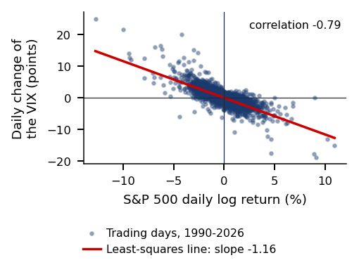
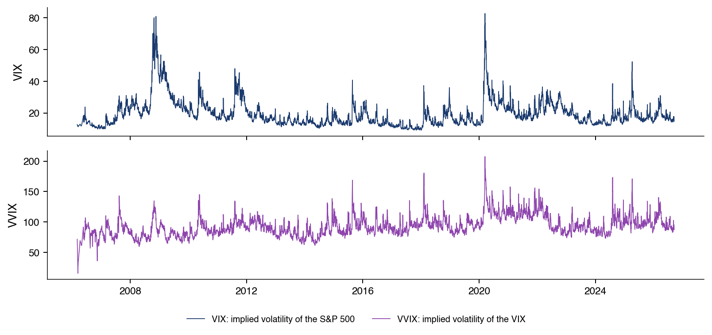

Capitolul 12: Opțiuni și suprafața de volatilitate
Daniel Traian PELE
Academia de Studii Economice din București IDA Institute Digital Assets Blockchain Research Center AI4EFin Artificial Intelligence for Energy Finance Academia Română, Institutul de Prognoză Economică MSCA Digital Finance
Deschidere: ce dezvăluie prețurile opțiunilor despre distribuția viitoare?
“If options are correctly priced in the market, it should not be possible to make sure profits by creating portfolios of long and short positions in options and their underlying stocks.” — Black & Scholes (1973)
Black–Scholes: din replicare rezultă o singură volatilitate implicită pe activ
delta hedging zilnic, call pe trei luni: abaterea standard a erorii, \(9{,}5\%\) din primă
Piața arată un zîmbet: volatilitatea implicită pe o lună, din distribuția S&P 500
\(30{,}6\%\) la \(K/S = 0{,}8\), față de \(13{,}9\%\) la bani
Bitcoin, 38 de zile: probabilitatea neutră la risc a unei scăderi de peste \(30\%\)
\(1{,}24\%\), față de \(0{,}14\%\) sub reperul log-normal
S&P 500, 1990–2026: VIX are media \(19{,}4\), volatilitatea realizată \(15{,}3\)
prima de risc a varianței: \(4{,}09\) puncte de volatilitate, pozitivă în \(86\%\) din zile
If options are correctly priced in the market, it should not be possible to make sure profits by creating portfolios of long and short positions in options and their underlying stocks.
Black & Scholes (1973) obțin prețul unei opțiuni din absența arbitrajului: un portofoliu din acțiune și numerar, reechilibrat continuu, replică opțiunea (replication), iar prețul ei nu depinde de randamentul așteptat al acțiunii. În acest model, toate opțiunile pe același activ au aceeași volatilitate implicită (implied volatility). Replicarea din practică este discretă. În simularea din capitol, delta hedging-ul zilnic al unui call pe trei luni lasă o eroare cu abaterea standard de 9,5% din primă, iar reechilibrarea săptămînală una de 21,5%.
Prețurile de piață nu respectă ipoteza unei volatilități unice. După crahul din octombrie 1987, put-urile cu preț de exercitare mic sînt mult mai scumpe decît la bani, iar volatilitatea implicită depinde de prețul de exercitare: zîmbetul (smile) și asimetria (skew). Distribuția istorică a celor 9 225 de randamente lunare suprapuse ale S&P 500 dă, pe o lună, o volatilitate implicită de 30,6% la un preț de exercitare de 80% din prețul curent și de 13,9% la bani. Din prețurile opțiunilor se poate reconstitui astfel distribuția neutră la risc (risk-neutral distribution) a prețului viitor. Pe suprafața opțiunilor Bitcoin din 22 septembrie 2026, la scadența de 38 de zile, probabilitatea unei scăderi de peste 30% este 1,24%, față de 0,14% sub reperul log-normal. Aceste probabilități sînt prețuri ale asigurării, nu prognoze.
Diferența dintre volatilitatea evaluată de piață și cea realizată este măsurabilă. Pe 9 203 zile din 1990–2026, VIX are media 19,4, iar volatilitatea realizată a S&P 500 în următoarele 21 de zile de tranzacționare are media 15,3. Prima de risc a varianței (VRP, variance risk premium), măsurată ex post, este 4,09 puncte de volatilitate, cu eroarea standard Newey–West 0,27, și este pozitivă în 86% din zile. Excepțiile sînt crahurile: cea mai rea valoare, −72,0 puncte, corespunde ferestrei care începe la 20 februarie 2020. Ca prognoză a varianței următoarei luni, VIX are panta Mincer–Zarnowitz 0,86, iar testul comun respinge prognoza nedeplasată. Capitolul studiază de aceea ce informație conțin opțiunile despre riscul viitor și cu ce erori standard trebuie citită.
O opțiune plătește doar în anumite stări ale lumii, deci prețul ei depinde de distribuția activului suport la scadență, nu doar de direcția în care se așteaptă să se miște prețul. Capitolul obține întîi prețurile opțiunilor din absența arbitrajului, apoi citește prețurile observate pe piață ca informație despre volatilitatea viitoare și despre riscul de crah. Peste tot, \(S_t\) este prețul activului suport la momentul \(t\),\(K\) prețul de exercitare (strike), \(T\) scadența (expiry), \(\tau = T - t\) timpul rămas, în ani, iar \(r\) rata fără risc cu compunere continuă; notațiile complete sînt în Aprofundări.
Ce dezvăluie prețurile opțiunilor despre distribuția viitoare?
Un put cu preț de exercitare mic plătește doar după o scădere mare a activului suport, iar un call cu preț de exercitare mare doar după o creștere mare. Prețurile acestor contracte măsoară deci cum evaluează piața anumite regiuni ale distribuției prețului viitor. Luate pe multe prețuri de exercitare și scadențe, prețurile opțiunilor arată ce așteaptă piața în privința volatilității și a crahurilor și cu ce preț se asigură împotriva lor.
Capitolul are două părți. Partea I evaluează opțiunile prin replicare: paritatea put–call, replicarea statică (static spanning) a unei plăți (pay-off) cu opțiuni, arborele binomial, ecuația Black–Scholes, senzitivitățile prețului și eroarea lăsată de acoperirea la momente discrete. Apoi introduce volatilitatea implicită, zîmbetul și o suprafață completă a opțiunilor Bitcoin, cu densitatea ei neutră la risc. Partea a II-a citește volatilitatea implicită ca informație: swap-urile de varianță (variance swaps) și VIX, indicele Cboe al volatilității implicite pe 30 de zile a S&P 500, prima de risc a varianței și opțiunile 0DTE, cu zero zile pînă la scadență.
Urmează două studii de caz: limitele inferioare ale primei de risc a acțiunilor (equity premium) calculate din prețurile opțiunilor și reacția VIX la șocurile de volatilitate. Ultima parte aplică bucla descoperirii cu un asistent de inteligență artificială (AI) unei întrebări deschise despre prima de risc a varianței.
Pe scurt
O opțiune plătește doar în anumite stări: prețul ei este un pariu pe distribuție
nu doar pe direcție
deci reflectă așteptările pieței privind volatilitatea și crahurile
Partea I, evaluarea prin replicare
paritatea, replicarea statică, arborele binomial
ecuația Black–Scholes, senzitivitățile și eroarea hedging-ului discret
Apoi volatilitatea implicită, zîmbetul și o suprafață Bitcoin completă, cu densitatea neutră la risc
Partea a II-a, volatilitatea implicită ca informație
swap-urile de varianță
VIX (indicele Cboe al volatilității implicite pe 30 de zile a S&P 500)
prima de risc a varianței și opțiunile 0DTE (cu zero zile pînă la scadență)
Studii de caz: limitele primei de risc obținute din opțiuni și reacția VIX la șocurile de volatilitate
AI (artificial intelligence, inteligența artificială) pentru descoperire științifică
Ce trebuie să puteți face
derivați paritatea put–call, prețul din arborele binomial și ecuația Black–Scholes
calculați senzitivitățile, eroarea hedging-ului discret și o suprafață SVI fără arbitraj, cu densitatea ei și benzi de încredere
interpretați prognozele din opțiuni (VIX, prima de risc a varianței) cu erorile standard adecvate
Aprofundări și Anexa: lectură pentru familiarizare
Chicago, 1973: începe tranzacționarea opțiunilor listate
Chicago Board Options Exchange (Cboe) s-a deschis în 1973, ca prima bursă pentru opțiuni standardizate și listate (MacKenzie & Millo, 2003). Înainte, opțiunile se negociau una cîte una, la ghișeu (over the counter), cu termeni stabiliți de cele două părți. Fotografia arată ringul de tranzacționare al Chicago Board of Trade în 2006; membrii lui au fondat Cboe.
Lucrările de evaluare ale lui Black & Scholes (1973) și Merton (1973) au apărut în același an. MacKenzie & Millo (2003) arată că traderii au folosit curînd formula în ring: teoria a schimbat piața pe care o descria. Prețurile folosite ulterior pentru a testa modelul au fost deci stabilite de traderi care îl foloseau deja.
Ideea-cheie a lui Black & Scholes (1973) este că un portofoliu din acțiune și numerar, ajustat continuu, poate replica plata unei opțiuni. Dacă două poziții au aceeași plată în orice stare, ele trebuie să aibă același preț, altfel există un arbitraj. Prețul opțiunii rezultă din acest argument, fără vreo ipoteză despre preferințele investitorilor sau despre randamentul așteptat al acțiunii.
Myron Scholes și Robert C. Merton au primit în 1997 Premiul Nobel pentru Științe Economice; Fischer Black murise în 1995. Derivarea este dată în secțiunea Black–Scholes, iar datele și notațiile în Aprofundări.
Prețurile opțiunilor depind de distribuția prețului viitor, deci conțin informație despre volatilitate și despre riscul de crah. Prima jumătate a capitolului obține prețurile din replicare; a doua jumătate folosește prețurile observate ca date.
Paritatea și replicarea statică
Secțiunea reunește rezultatele care decurg numai din absența arbitrajului. Ele sînt valabile pentru orice model al prețului activului suport: paritatea put–call, replicarea statică a unei plăți netede cu o obligațiune, un forward și o bandă de opțiuni (strip), precum și trei consecințe folosite mai departe în capitol: banda de varianță, densitatea neutră la risc și strategiile finite cu opțiuni. Opțiunile sînt europene, cu prețul de exercitare \(K\) și scadența \(T\);\(C\) și \(P\) sînt prețurile unui call și ale unui put.
Paritatea put–call: ce impune doar absența arbitrajului?
Considerăm două portofolii construite azi din opțiuni europene cu același preț de exercitare \(K\) și aceeași scadență \(T\), pe o acțiune fără dividende. Portofoliul A conține un call și numerarul \(K e^{-r\tau}\), care crește pînă la \(K\) la \(T\); plata lui este \(\max(S_T, K)\). Portofoliul B conține un put și o acțiune; plata lui este \(\max(K, S_T)\). Cele două portofolii plătesc aceeași sumă în orice stare a lumii, deci trebuie să coste la fel azi:
\[C_t - P_t = S_t - K e^{-r\tau}.\]
(12.1)
Dacă membrul stîng din (12.1) ar depăși membrul drept, un investitor ar putea vinde portofoliul A, cumpăra portofoliul B și păstra diferența azi, cu o plată netă nulă la \(T\); inegalitatea opusă se exploatează invers. Cu un randament continuu al dividendelor (dividend yield) \(q\),\(S_t\) se înlocuiește cu \(S_t e^{-q\tau}\).
Argumentul nu folosește niciun model pentru \(S\): paritatea rezultă numai din absența arbitrajului (Merton, 1973). O consecință este folosită în tot capitolul. Prețurile Black–Scholes ale unui call și ale unui put satisfac (12.1) pentru orice valoare a lui \(\sigma\), deci o volatilitate care reproduce prețul de piață al call-ului reproduce și prețul de piață al put-ului. Un call și un put cu aceleași \(K\) și \(T\) au de aceea aceeași volatilitate implicită.
Pe scurt
Două portofolii cu aceeași plată la \(T\) (opțiuni europene, același \(K\) și \(T\), fără dividende):
A: un call + numerar \(K e^{-r\tau}\) (valorează \(K\) la \(T\)) \(\Rightarrow\)\(\max(S_T, K)\)
B: un put + o acțiune \(\Rightarrow\)\(\max(K, S_T)\)
Aceeași plată în orice stare, deci același preț azi, altfel ar exista un arbitraj:
\(C_t - P_t = S_t - K e^{-r\tau}\) (cu randament de dividend \(q\): \(S_t e^{-q\tau}\) în locul lui \(S_t\))
Nu este nevoie de un model pentru \(S\): paritatea folosește doar absența arbitrajului Merton (1973)
Consecință: un call și un put cu același \(K\) și \(T\) au aceeași volatilitate implicită
Replicarea statică: orice plată dintr-o obligațiune, un forward și opțiuni
Paritatea replică o plată cu un put, un call, o acțiune și numerar. Formula Carr–Madan generalizează rezultatul la orice plată \(f(S_T)\) de două ori derivabilă. Pentru orice punct \(F\), formula lui Taylor cu rest integral dă
unde \((x)^+ = \max(x, 0)\). Demonstrația, prin integrare prin părți, este în Anexă.
Termenii din (12.2) sînt poziții în contracte tranzacționate. Constanta \(f(F)\) este o obligațiune cu cupon zero, \(f'(F)(S_T - F)\) reprezintă \(f'(F)\) contracte forward cu prețul de livrare \(F\), iar cele două integrale sînt benzi de put-uri cu prețuri de exercitare sub \(F\) și de call-uri cu prețuri de exercitare peste \(F\), cu \(f''(K)\,dK\) opțiuni la fiecare preț de exercitare. Curbura plății se cumpără cu opțiuni; nivelul și panta ei, cu o obligațiune și un forward.
Fiecare componentă are azi un preț de piață: obligațiunea costă \(e^{-r\tau}\) pe unitate, un forward cu prețul de livrare egal cu prețul forward \(F\) costă 0, iar opțiunile costă \(P(K)\) și \(C(K)\), prețurile de azi ale put-ului și ale call-ului cu prețul de exercitare \(K\). Valoarea de azi a plății este deci
oricare ar fi modelul pentru \(S\)(Bakshi, Kapadia & Madan, 2003). Pentru \(V_0\) nu este nevoie de nicio măsură de evaluare. Măsura de evaluare \(Q\) din Secțiunea 3 este necesară doar pentru a citi prețurile opțiunilor ca medii, ca în rezultatul despre densitate de pe slide-ul următor.
Pe scurt
Formula Carr–Madan, pentru orice plată de două ori derivabilă \(f(S_T)\) și orice punct \(F\)
dezvoltare Taylor cu rest integral, demonstrația în Anexă
\(P(K)\), \(C(K)\): prețurile de azi ale put-ului și call-ului
Fiecare componentă are azi un preț de piață (obligațiunea \(e^{-r\tau}\) pe unitate, forward-ul 0), deci \(V_0\) nu cere nici un model pentru \(S\), nici o măsură de evaluare
Măsura \(Q\) (Secțiunea 3) este necesară doar pentru a citi prețurile opțiunilor ca medii, ca la densitatea de pe slide-ul următor
Replicarea statică: trei rezultate folosite mai departe
Un preț se numește „neutru la risc” (risk-neutral) atunci cînd este media actualizată a plății sub măsura de evaluare \(Q\), nu sub probabilitățile reale. Măsura \(Q\) este construită în Secțiunea 3, pe arborele binomial. Trei aplicații ale lui (12.2) revin în capitol.
Prima este varianța. Plata \(f(S) = -2\ln(S/F)\) are \(f''(K) = 2/K^2\), deci este replicată de o bandă de opțiuni în afara banilor (OTM, out of the money) cu ponderi proporționale cu \(1/K^2\). Această bandă este swap-ul de varianță și VIX din Secțiunea 8. Prețurile de exercitare mici primesc ponderile cele mai mari, așa că o aripă scumpă a put-urilor face varianța scumpă.
A doua este densitatea. Un butterfly, adică un call cumpărat la \(K - h\) și unul la \(K + h\) și două call-uri vîndute la \(K\), unde \(h\) este pasul dintre prețurile de exercitare, costă \(C(K - h) - 2C(K) + C(K + h)\); împărțit la \(h^2\), acest preț converge la derivata a doua a prețului call-ului în raport cu prețul de exercitare. Breeden & Litzenberger (1978) arată că această derivată este densitatea neutră la risc (risk-neutral density) \(q\) a lui \(S_T\), actualizată:
Densitatea neutră la risc este deci un preț, obținut dintr-un continuum de prețuri ale call-urilor (Secțiunea 7).
A treia privește strategiile uzuale. Straddle-urile, spread-urile și put-urile de protecție sînt benzi finite, cu \(f''\) concentrată în unul sau două prețuri de exercitare. Plățile egale cu puteri ale randamentului logaritmic dau momentele neutre la risc, iar plata \(S^2\) dă SVIX, indicele simple VIX al lui Martin (2017); ambele sînt în Anexă.
Pe scurt
„Neutră la risc”: prețul este media actualizată a plății sub măsura de evaluare \(Q\)
nu sub probabilitățile reale
\(Q\) este construită în Secțiunea 3
Varianța: \(f(S) = -2\ln(S/F)\) are \(f''(K) = 2/K^2\)
banda cu ponderile \(1/K^2\) este swap-ul de varianță și VIX (Secțiunea 8)
Prețurile de exercitare mici au ponderile cele mai mari, deci o aripă scumpă a put-urilor face varianța scumpă
Densitatea neutră la risc este deci un preț (Secțiunea 7)
Straddle-urile, spread-urile și put-urile de protecție sînt benzi finite
cu \(f''\) concentrată în unul sau două prețuri de exercitare
Momentele și SVIX (simple VIX, indicele de varianță al lui Martin (2017)): Anexa
Sinteza secțiunii
Paritatea (12.1), formula de replicare (12.2) și densitatea (12.3) nu cer niciun model pentru activul suport. Ele transformă prețurile opțiunilor în prețurile altor plăți: forward-ul, varianța și probabilitatea fiecărei regiuni a lui \(S_T\).
Arborele binomial
Arborele binomial este cel mai simplu model în care o opțiune poate fi replicată dinamic. El arată cum apare măsura de evaluare \(Q\) din replicare, de ce probabilitatea reală a unei creșteri nu intră în preț și cum, cu mulți pași, arborele converge la modelul Black–Scholes.
Arborele binomial: cum evaluăm o opțiune prin replicare?
Într-o perioadă de lungime \(\Delta t\), acțiunea trece de la \(S\) la \(uS\) sau la \(dS\), unde \(u\) și \(d\) sînt factorii de creștere și de scădere. Randamentul brut fără risc este \(R = e^{r\Delta t}\), iar absența arbitrajului cere \(d < R < u\). Un call care valorează \(C_u\) după o creștere și \(C_d\) după o scădere este replicat de \(\Delta\) acțiuni și numerarul \(B\) dacă \(\Delta uS + RB = C_u\) și \(\Delta dS + RB = C_d\).
Cele două ecuații dau \(\Delta = (C_u - C_d)/[(u - d)S]\), iar prețul call-ului este costul portofoliului de replicare:
\[C = \Delta S + B = \frac{q\,C_u + (1 - q)\,C_d}{R}, \qquad q = \frac{R - d}{u - d}.\]
(12.4)
Deoarece \(d < R < u\),\(q\) se află în \((0, 1)\). Este singura probabilitate sub care prețul actualizat al acțiunii, \(S_t/R^t\), este un martingal; pe arbore, \(q\) notează această probabilitate, nu randamentul dividendelor. Probabilitatea reală a unei creșteri nu intră niciodată în (12.4): preferințele față de risc sînt deja conținute în prețul acțiunii \(S\).
Teorema fundamentală a evaluării activelor (fundamental theorem of asset pricing) generalizează acest rezultat: după cum arată Harrison & Pliska (1981) și, în forma cea mai generală, Delbaen & Schachermayer (1994), nu există arbitraj dacă și numai dacă există o măsură martingală echivalentă (equivalent martingale measure) \(Q\).\(Q\) este unică exact atunci cînd piața este completă. Cu salturi sau cu volatilitate stocastică există multe măsuri \(Q\), iar prețurile opțiunilor conțin prime de risc, subiectul Secțiunii 8.
Pe scurt
O perioadă de lungime \(\Delta t\): \(S \to uS\) sau \(dS\), cu \(d < R = e^{r\Delta t} < u\)
\(u\), \(d\): factorii de creștere și de scădere
\(R\): randamentul brut fără risc
Replicăm call-ul cu \(\Delta\) acțiuni și numerarul \(B\)
\(\Delta uS + RB = C_u\) și \(\Delta dS + RB = C_d\)
\(C_u\), \(C_d\): valorile call-ului după o creștere și după o scădere
Soluția: \(\Delta = \dfrac{C_u - C_d}{(u - d)S}\), iar prețul este \(C = \Delta S + B = \dfrac{q\,C_u + (1 - q)\,C_d}{R}\)
\(q = \dfrac{R - d}{u - d} \in (0, 1)\) (aici o probabilitate, nu randamentul dividendelor) este unica probabilitate sub care \(S_t/R^t\) este martingal
Probabilitatea reală a unei creșteri nu intervine
preferințele față de risc sînt deja încorporate în prețul \(S\)
\(Q\) este unică exact cînd piața este completă; cu salturi sau volatilitate stocastică există multe \(Q\), iar prețurile opțiunilor conțin prime de risc (Secțiunea 8)
Arborele CRR: \(N\) pași și convergența la Black–Scholes
O perioadă are doar două stări finale. Cu \(N\) pași, arborele are \(N + 1\) stări finale, care aproximează distribuția lui \(S_T\). Arborele Cox–Ross–Rubinstein (CRR) (Cox, Ross & Rubinstein, 1979) alege \(\Delta t = T/N\),\(u = e^{\sigma\sqrt{\Delta t}}\) și \(d = 1/u\). Această alegere dă randamentului logaritmic pe un pas varianța \(\sigma^2\Delta t\), pînă la termeni de ordinul \(\Delta t^2\), astfel că, atunci cînd \(N\) crește, arborele converge la mișcarea browniană geometrică a modelului Black–Scholes. Probabilitatea neutră la risc \(q = (e^{r\Delta t} - d)/(u - d)\) este aceeași în fiecare nod.
Un call european depinde doar de nodul final, atins după \(j\) creșteri și \(N - j\) scăderi. Aplicarea lui (12.4) înapoi, pe cei \(N\) pași, dă
media neutră la risc actualizată a plății, cu o distribuție binomială pentru numărul de creșteri \(j\).
O opțiune americană poate fi exercitată oricînd pînă la \(T\), deci se evaluează înapoi de la \(T\), luînd în fiecare nod maximul dintre valoarea de continuare și valoarea de exercitare. Convergența lui (12.5) la prețul Black–Scholes și prima de exercitare anticipată (early-exercise premium) a unui put american sînt prezentate în Aprofundări.
Pe scurt
De ce \(N\) pași: o perioadă are doar două stări finale
cu \(N\) pași, cele \(N + 1\) stări finale aproximează distribuția lui \(S_T\)
Arborele CRR (Cox–Ross–Rubinstein) Cox, Ross & Rubinstein (1979): \(\Delta t = T/N\), \(u = e^{\sigma\sqrt{\Delta t}}\), \(d = 1/u\)
Această alegere dă randamentului logaritmic pe un pas varianța \(\sigma^2\Delta t\) (pînă la termeni de ordinul \(\Delta t^2\)), deci arborele converge la mișcarea browniană geometrică din modelul Black–Scholes
\(q = (e^{r\Delta t} - d)/(u - d)\) este aceeași în fiecare nod
Pe arbore, replicarea definește prețul și probabilitatea \(q\) sub care prețurile actualizate sînt martingale; probabilitatea reală a unei creșteri nu joacă niciun rol. Cu \(N\) pași, arborele CRR aproximează mișcarea browniană geometrică, modelul secțiunii următoare.
Black–Scholes și senzitivitățile
În timp continuu, replicarea duce la o ecuație cu derivate parțiale. Secțiunea derivă ecuația Black–Scholes, dă soluția ei pentru opțiunile europene și definește senzitivitățile, derivatele parțiale ale prețului. Ele măsoară expunerile unei poziții în opțiuni și sînt mărimile pe care le ajustează cel care face acoperirea.
Ecuația Black–Scholes: ce preț rezultă din replicarea continuă?
Modelul presupune că acțiunea urmează o mișcare browniană geometrică (GBM, geometric Brownian motion), \(dS_t = \mu S_t\,dt + \sigma S_t\,dW_t\), cu volatilitatea \(\sigma\) și rata \(r\) constante; tranzacționarea este continuă, fără costuri, iar vînzarea în lipsă (short selling) este permisă. Valoarea opțiunii \(V(S, t)\) trebuie replicată printr-un portofoliu autofinanțat (self-financing) \(\Pi\), format din \(\Delta_t\) acțiuni și numerarul \(B_t\) plasat la rata \(r\), a cărui valoare se schimbă doar prin cîștiguri: \(d\Pi = \Delta\,dS + rB\,dt\).
Din lema lui Itô, valoarea opțiunii evoluează astfel:
\[dV = \big(V_t + \mu S V_S + \tfrac{1}{2}\sigma^2 S^2 V_{SS}\big)\,dt + \sigma S V_S\,dW_t,\]
unde \(V_t\),\(V_S\) și \(V_{SS}\) sînt derivate parțiale. Alegînd \(\Delta = V_S\) și pornind de la \(\Pi = V\), deci \(B = V - S V_S\), obținem \(d(V - \Pi) = \big(V_t + \tfrac{1}{2}\sigma^2 S^2 V_{SS} - rB\big)\,dt\). Dispar atît creșterea browniană \(dW_t\), cît și driftul \(\mu\).
Diferența \(V - \Pi\) pornește de la zero și este fără risc. O poziție fără risc care nu costă nimic nu poate cîștiga nimic, de unde ecuația Black–Scholes a lui Black & Scholes (1973) și Merton (1973):
\[V_t + \tfrac{1}{2}\sigma^2 S^2 V_{SS} + r S V_S - r V = 0, \qquad V(S, T) = \text{plata}.\]
(12.6)
Faptul că \(\mu\) nu contează este un rezultat al replicării, nu o ipoteză. Din formula Feynman–Kac, soluția lui (12.6) este \(V = e^{-r\tau}E^Q[\text{plata}]\), unde sub \(Q\) acțiunea are driftul \(r\).
unde \(\Phi\) este funcția de repartiție a distribuției Normale standard. Cu un randament al dividendelor \(q\),\(S\) se înlocuiește cu \(S e^{-q\tau}\).
Cei doi termeni au o interpretare directă. \(\Phi(d_2)\) este probabilitatea neutră la risc ca call-ul să se termine în bani, deci al doilea termen este valoarea prezentă a plății lui \(K\) în acele stări. \(\Phi(d_1)\) este numărul de acțiuni din portofoliul de replicare, adică delta. Formula put-ului rezultă din formula call-ului și din paritatea (12.1).
Formula are cinci date de intrare. Prețul \(S\), prețul de exercitare \(K\), timpul pînă la scadență \(\tau\) și rata \(r\) sînt observate. Volatilitatea \(\sigma\) este singura mărime neobservată: trebuie estimată din prețurile trecute sau dedusă din prețurile opțiunilor, subiectul Secțiunii 6.
Pe scurt
Call și put europene, fără dividende (cu randament \(q\): înlocuim \(S\) cu \(S e^{-q\tau}\)):
\(C = S\,\Phi(d_1) - K e^{-r\tau}\,\Phi(d_2), \qquad P = K e^{-r\tau}\,\Phi(-d_2) - S\,\Phi(-d_1)\)
\(d_1 = \dfrac{\ln(S/K) + (r + \sigma^2/2)\tau}{\sigma\sqrt{\tau}}, \qquad d_2 = d_1 - \sigma\sqrt{\tau}\), cu \(\Phi\) funcția de repartiție a distribuției Normale standard
Interpretarea celor doi termeni:
\(\Phi(d_2)\) = probabilitatea neutră la risc ca un call să fie în bani la scadență
\(\Phi(d_1)\) = numărul de acțiuni din portofoliul de replicare (delta)
Cinci date de intrare
\(S\), \(K\), \(\tau\) și \(r\) sînt observabile
\(\sigma\) trebuie estimată sau dedusă din prețuri
Senzitivitățile: o identitate, toate derivatele (1/2)
Senzitivitățile sînt derivatele parțiale ale prețului opțiunii în raport cu datele de intrare. Delta \(\Delta = \partial C/\partial S\) este raportul de acoperire (hedge ratio), gamma \(\Gamma = \partial^2 C/\partial S^2\) viteza cu care se schimbă delta cu prețul, vega \(\mathcal{V} = \partial C/\partial\sigma\) sensibilitatea la volatilitate, theta \(\Theta = \partial C/\partial t\) schimbarea valorii odată cu trecerea timpului, iar rho \(= \partial C/\partial r\) sensibilitatea la rată. Formulele sînt pe slide-ul următor.
Graficul interactiv are patru panouri, pentru delta, gamma, vega și theta ale unui call cu prețul de exercitare \(K = 100\). În fiecare panou, axa orizontală este prețul activului suport \(S\), de la 60 la 140, iar curbele corespund la trei scadențe: o lună, trei luni și un an. Primul cursor fixează volatilitatea \(\sigma\), iar al doilea marchează un preț \(S\) pe curbe. Butonul ▶ crește \(\sigma\) pas cu pas.
Întrebare pentru sală Pornim ▶: volatilitatea σ crește de la 10% la 50%. Ce se întîmplă cu gamma call-ului pe trei luni la S = K = 100?
Răspuns
Scade de la 0,078 la 0,016, aproape ca 1/σ, în timp ce vega rămîne aproape constantă (0,194 la σ = 10%, 0,197 la σ = 50%). La K = 100 și σ = 20%, call-ul pe o lună are cea mai mare gamma (0,069, față de 0,039 pe trei luni și 0,019 pe un an) și cel mai rapid time decay (theta −0,043 pe zi), iar call-ul pe un an are cea mai mare vega (0,381 pe punct de volatilitate). Vega exprimată pe unitate de σ este ΓS²στ. Pe un punct procentual de volatilitate, vega este ΓS²στ/100: pentru call-ul pe trei luni, la S = K = 100 și σ = 20%, valoarea este 0,197.
Scadențele scurte concentrează gamma și theta în jurul prețului de exercitare, iar scadențele lungi au cea mai mare vega. Pe grafic, vega este măsurată pe punct de volatilitate, iar theta pe zi calendaristică.
Pentru call-ul Black–Scholes (12.7), delta este \(\Delta = \Phi(d_1)\), iar delta put-ului este \(\Phi(d_1) - 1\). Gamma este \(\Gamma = \varphi(d_1)/(S\sigma\sqrt{\tau})\), unde \(\varphi\) este densitatea Normală standard. Derivarea tuturor senzitivităților se sprijină pe o singură identitate, \(S\varphi(d_1) = K e^{-r\tau}\varphi(d_2)\), care face să se anuleze termenii proveniți din derivatele lui \(d_1\) și \(d_2\).
deci, pentru o scadență dată, gamma și vega sînt proporționale. Theta rezultă din ecuația Black–Scholes (12.6):\(\Theta = rC - rS\Delta - \tfrac{1}{2}\sigma^2 S^2 \Gamma\). Rho este \(K\tau e^{-r\tau}\Phi(d_2)\). Derivările sînt exercițiile A1 și A7 din Seminarul 12.
Expresia lui theta arată compromisul unei opțiuni acoperite. Pentru o poziție acoperită delta, cîștigul din gamma cînd acțiunea se mișcă și pierderea din theta odată cu trecerea timpului se anulează în medie în model. Proporționalitatea (12.8) leagă riscul gamma de riscul de volatilitate și este folosită în Secțiunea 5 pentru a dimensiona profitul și pierderea (P&L, profit and loss) unei opțiuni acoperite.
Prețul Black–Scholes rezultă din replicarea continuă și nu depinde de driftul \(\mu\). Singura lui dată de intrare neobservată este volatilitatea. Senzitivitățile măsoară expunerile unei opțiuni, iar (12.8) leagă gamma de vega.
Delta hedging în practică
Replicarea Black–Scholes cere reechilibrare continuă, pe care niciun trader nu o poate realiza. Secțiunea măsoară eroarea rămasă atunci cînd acoperirea se ajustează la \(N\) momente, arată cum scade ea cu \(N\) și derivă P&L-ul unei opțiuni acoperite atunci cînd volatilitatea realizată (realised volatility) diferă de volatilitatea la care a fost vîndută opțiunea.
În practică, acoperirea se ajustează de \(N\) ori, la momentele \(t_i = iT/N\). La \(t_0 = 0\), cel care acoperă vinde call-ul la prețul Black–Scholes \(C_0\), cumpără \(\Delta_0 = \Phi(d_1)\) acțiuni și păstrează numerarul \(B_0 = C_0 - \Delta_0 S_0\). La fiecare moment \(t_i\),\(i = 1, \dots, N - 1\), poziția este reechilibrată la noua delta, \(\Delta_i = \Phi\big(d_1(S_{t_i}, T - t_i)\big)\), iar cumpărarea sau vînzarea de acțiuni se finanțează din contul de numerar, care primește dobîndă:
Portofoliul este deci autofinanțat. La scadență, cel care acoperă deține \(\Delta_{N-1}\) acțiuni și numerarul și plătește plata call-ului. Eroarea de hedging este
Cu reechilibrare continuă în modelul Black–Scholes, \(\varepsilon_N\) ar fi zero pe orice traiectorie.
Simularea din capitol folosește o mișcare browniană geometrică cu driftul \(\mu = 8\%\) și volatilitatea \(\sigma = 20\%\), un call cu \(S_0 = K = 100\), rata \(r = 4\%\) și scadența \(T = 0{,}25\) ani, și 20 000 de traiectorii pentru fiecare dintre \(N = 3\), 12, 63 și 252 de reechilibrări. Driftul este ales intenționat diferit de \(r\): replicarea nu folosește niciodată \(\mu\), iar un drift real diferit de \(r\) arată că eroarea rămîne centrată în 0.
Pe scurt
Replicarea Black–Scholes cere reechilibrare continuă
în practică portofoliul se ajustează de \(N\) ori, la momentele \(t_i = iT/N\)
La \(t_0 = 0\): vindem call-ul la prețul Black–Scholes \(C_0\)
cumpărăm \(\Delta_0 = \Phi(d_1)\) acțiuni
păstrăm numerarul \(B_0 = C_0 - \Delta_0 S_0\)
La \(t_i\), \(i = 1, \dots, N - 1\), portofoliul este autofinanțat
\(\Delta_i = \Phi\big(d_1(S_{t_i}, T - t_i)\big)\)
Graficul interactiv are două panouri. În stînga, axa orizontală este eroarea de hedging la scadență (12.9), pe opțiune, iar axa verticală densitatea ei pe cele 20 000 de traiectorii. În dreapta, axa orizontală este numărul de reechilibrări \(N\), iar axa verticală abaterea standard a erorii în % din primă, ambele pe scări logaritmice; dreapta de referință are panta \(-1/2\), adică rata \(1/\sqrt{N}\). Cursorul alege frecvența de reechilibrare, iar butonul ▶ trece prin frecvențe.
Întrebare pentru sală Cu reechilibrare zilnică, abaterea standard a erorii este 9,5% din primă. De cîte ori mai des trebuie ajustată acoperirea ca eroarea să scadă la jumătate?
Răspuns
De aproximativ patru ori. Dublarea lui N înjumătățește aproximativ varianța erorii, nu abaterea standard: abaterea standard scade ca 1/√N (panta estimată pe axele logaritmice este −0,48). Pentru înjumătățirea abaterii standard trebuie aproximativ cvadruplat N: de la 63 la 252 de reechilibrări pe cele trei luni. În simulare, abaterea standard scade de la 9,5% la 4,8% din primă. Costurile de tranzacționare cresc însă cu N: proporțional cu N la un cost fix pe reechilibrare, aproximativ ca √N la costuri proporționale cu valoarea tranzacționată.
Prima Black–Scholes este 4,49, cu \(d_1 = 0{,}15\). Eroarea medie este aproape de 0 la toate frecvențele. Abaterea standard, în % din primă, este 40,8% la reechilibrare lunară, 21,5% la reechilibrare săptămînală, 9,5% la reechilibrare zilnică și 4,8% la reechilibrare de patru ori pe zi. Panta estimată pe axele logaritmice este \(-0{,}48\).
Eroarea hedging-ului discret provine din gamma. Între două reechilibrări, delta deținută este fixă, în timp ce delta cerută de model se mișcă odată cu prețul; poziția cîștigă sau pierde după cum randamentul la pătrat pe interval este sub sau peste valoarea lui așteptată \(\sigma^2\Delta t\). Aceste erori locale au media aproape de zero și sînt aproximativ necorelate, așa că varianțele lor se adună pe cele \(N\) intervale, iar abaterea standard a totalului scade ca \(1/\sqrt{N}\).Anexa derivă aproximarea
Aproximarea se potrivește cu simularea. Pentru \(N = 12\), 63 și 252, (12.10) dă 1,01, 0,44 și 0,22, față de abaterile standard simulate 0,96, 0,43 și 0,22, în unități monetare pe opțiune. În coada stîngă, cuantila de 1% a erorii este \(-2{,}68\) pe opțiune la reechilibrare săptămînală și \(-1{,}17\) la reechilibrare zilnică. Pentru a înjumătăți abaterea standard a erorii este nevoie de aproximativ patru ori mai multe reechilibrări.
Reechilibrarea mai deasă nu este gratuită. Cu un cost fix pe reechilibrare, costul total crește proporțional cu \(N\). Cu costuri proporționale cu valoarea tranzacționată, în cadrul difuziei standard, costul așteptat crește aproximativ ca \(\sqrt{N}\). Frecvența acoperirii se alege deci punînd în balanță eroarea (12.10) și modelul de cost.
Pe scurt
Stînga: distribuția erorii \(\varepsilon_N\) pentru patru frecvențe de reechilibrare
dreapta: abaterea standard a erorii, în % din primă, față de \(N\), pe axe logaritmice
Prima Black–Scholes este \(4{,}49\) (\(d_1 = 0{,}15\)), iar eroarea medie este aproape de 0
Abaterea standard a erorii, în % din primă
\(40{,}8\%\) la reechilibrare lunară, \(21{,}5\%\) săptămînală
\(9{,}5\%\) zilnică și \(4{,}8\%\) de patru ori pe zi
Cuantila de 1% a erorii, în unități monetare pe opțiune
\(-2{,}68\) la reechilibrare săptămînală
\(-1{,}17\) la reechilibrare zilnică
Panta dreptei log(abatere standard) față de log \(N\) este \(-0{,}48\)
teoria (Anexa) dă abaterea standard \(\approx \sqrt{\pi/4}\,\mathcal{V}\sigma/\sqrt{N}\)
\(\mathcal{V}\): vega
Teorie față de simulare
\(1{,}01\) și \(0{,}96\) la \(N = 12\)
\(0{,}44\) și \(0{,}43\) la \(N = 63\)
\(0{,}22\) și \(0{,}22\) la \(N = 252\)
Costurile de tranzacționare depind de modelul de cost
cu un cost fix pe reechilibrare, costul total crește proporțional cu \(N\)
cu costuri proporționale cu valoarea tranzacționată, în cadrul difuziei standard, costul așteptat crește aproximativ ca \(\sqrt{N}\)
Presupunem că opțiunea este vîndută la volatilitatea implicită \(\sigma_{imp}\) și acoperită cu \(\Delta = \partial_S V^{imp}\), unde \(V^{imp}\) este valoarea ei Black–Scholes la \(\sigma_{imp}\), în timp ce prețul se mișcă cu volatilitatea realizată \(\sigma_{real}\):\(dS = \mu S\,dt + \sigma_{real} S\,dW_t\). Din lema lui Itô, \(dV = V_t\,dt + \Delta\,dS + \tfrac{1}{2}\Gamma\sigma_{real}^2 S^2\,dt\), iar ecuația Black–Scholes la \(\sigma_{imp}\) dă \(V_t = rV - rS\Delta - \tfrac{1}{2}\sigma_{imp}^2 S^2\Gamma\).
Poziția formată din opțiunea vîndută, \(\Delta\) acțiuni și numerar la rata \(r\) este autofinanțată, iar P&L-ul ei evoluează ca \(d\,\text{P\&L} = r\,\text{P\&L}\,dt + \tfrac{1}{2}\Gamma_t S_t^2(\sigma_{imp}^2 - \sigma_{real}^2)\,dt\). Pe durata de viață a opțiunii,
P&L-ul (12.11) depinde de traiectorie: diferența de varianță este ponderată cu \(\Gamma_t S_t^2\), care este mare atunci cînd prețul este aproape de prețul de exercitare și cînd scadența este aproape.
Un swap de varianță vîndut plătește \(\sigma_{imp}^2 - \sigma_{real}^2\) cu ponderi constante. O opțiune acoperită delta este deci un pariu pe varianță cu ponderi aleatoare. Mărimea lui de ordinul întîi rezultă din (12.8): cu \(\mathcal{V} = \Gamma S^2\sigma\tau\),
Pe toată durata: \(\text{P\&L} = \displaystyle\int_0^T e^{r(T - t)}\,\tfrac{1}{2}\,\Gamma_t S_t^2\left(\sigma_{imp}^2 - \sigma_{real, t}^2\right)dt\), dependent de traiectorie și mare aproape de \(K\) și de \(T\)
Un swap de varianță vîndut primește \(\sigma_{imp}^2 - \sigma_{real}^2\) cu ponderi constante
o opțiune cu delta hedging este un pariu pe varianță cu ponderi aleatoare
Simularea vinde un call pe trei luni la volatilitatea implicită de 20% și îl acoperă zilnic, în timp ce volatilitatea realizată este 15%, 20% sau 25%. Din (12.11), vînzătorul cîștigă cînd volatilitatea realizată este sub cea implicită și pierde cînd este peste ea; cînd cele două sînt egale, rămîne doar zgomotul hedging-ului discret de pe slide-urile anterioare.
Graficul interactiv arată densitatea P&L-ului vînzătorului pe traiectoriile simulate, cu P&L-ul call-ului pe trei luni acoperit pe axa orizontală. Cursorul fixează volatilitatea realizată, iar butonul ▶ o modifică pas cu pas.
Întrebare pentru sală Un call pe trei luni este vîndut la volatilitatea implicită de 20% și acoperit zilnic. Pe ce parte din traiectorii cîștigă vînzătorul dacă volatilitatea realizată este 25%?
Răspuns
În această simulare, vînzătorul cîștigă pe 2,2% dintre traiectorii. P&L-ul mediu este −0,99 pe opțiune, iar abaterea standard este 0,68. Aproximarea de ordinul întîi este vega × (σ implicită − σ realizată), adică 0,197 × (20 − 25) ≈ −0,99. Reechilibrarea zilnică lasă o eroare discretă, astfel încît unele traiectorii au totuși P&L pozitiv. Cu volatilitatea realizată de 15%, media este +0,98, pozitivă pe 99,8% dintre traiectorii.
Cu volatilitatea realizată de 15%, P&L-ul mediu este \(+0{,}98\), iar P&L-ul este pozitiv pe 99,8% dintre traiectorii. La 20%, media este \(+0{,}00\) și rămîne doar zgomotul hedging-ului discret, cu abaterea standard 0,43. La 25%, media este \(-0{,}99\), iar P&L-ul este pozitiv pe doar 2,2% dintre traiectorii. Fiecare medie este apropiată de vega înmulțită cu 5 puncte de volatilitate, \(0{,}197 \times 5 \approx \pm 0{,}99\). O opțiune acoperită delta este un pariu curat pe volatilitate. Aceeași strategie pe 36 de ani de date S&P 500 este în Aprofundări.
Pe scurt
Call pe trei luni vîndut la volatilitatea implicită de 20%, cu delta hedging zilnic
volatilitatea realizată este 15%, 20% sau 25%
Volatilitate realizată de 15%: rezultatul mediu este \(+0{,}98\), pozitiv pe \(99{,}8\%\) dintre traiectorii
Volatilitate realizată de 20%: rezultatul mediu este \(+0{,}00\)
rămîne doar zgomotul hedging-ului discret (abatere standard \(0{,}43\))
Volatilitate realizată de 25%: rezultatul mediu este \(-0{,}99\), pozitiv doar pe \(2{,}2\%\) dintre traiectorii
Fiecare medie este aproape de vega \(\times\) 5 puncte de volatilitate
Hedging-ul discret lasă o eroare a cărei abatere standard scade ca \(1/\sqrt{N}\): 21,5% din primă la reechilibrare săptămînală și 9,5% la reechilibrare zilnică, în simulare. Cînd volatilitatea realizată diferă de cea implicită, opțiunea acoperită cîștigă sau pierde aproximativ vega înmulțită cu diferența de volatilitate, cu ponderile gamma din (12.11).
Volatilitatea implicită și zîmbetul
Dacă modelul Black–Scholes ar fi corect, o singură volatilitate ar evalua toate opțiunile pe un activ. Prețurile de piață contrazic acest lucru. Secțiunea definește volatilitatea implicită, descrie zîmbetul apărut după crahul din octombrie 1987, enumeră sursele lui economice și compară trei moduri de a-l produce: distribuția istorică a randamentelor, un model cu salturi și un model cu volatilitate stocastică.
Volatilitatea implicită: ce \(\sigma\) explică prețul de piață?
Volatilitatea implicită\(\sigma_{imp}\) este valoarea lui \(\sigma\) pentru care prețul Black–Scholes este egal cu prețul de piață observat:
\[BS(S, K, \tau, r, \sigma_{imp}) = C^{market},\]
(12.12)
unde \(BS(\cdot)\) este formula (12.7), iar \(C^{market}\) prețul observat. Soluția este unică deoarece vega este pozitivă: prețul crește strict în \(\sigma\). Nu există o formă închisă, deoarece \(\sigma\) apare atît în \(\Phi(d_1)\), cît și în \(\Phi(d_2)\), așa că (12.12) se rezolvă numeric; metoda Newton este în Aprofundări.
Traderii cotează opțiunile în volatilitate implicită, nu în bani. Volatilitatea implicită elimină efectul prețului de exercitare, al scadenței și al nivelului prețului, deci este comparabilă între prețuri de exercitare, scadențe și active.
Volatilitatea implicită este și un test al modelului. Dacă Black–Scholes ar fi corect, toate opțiunile pe un activ ar avea aceeași volatilitate implicită, oricare ar fi prețul de exercitare și scadența. Restul secțiunii arată că nu au.
Pe scurt
Volatilitatea implicită\(\sigma_{imp}\): acel \(\sigma\) pentru care prețul Black–Scholes este egal cu prețul de piață
\(BS(S, K, \tau, r, \sigma_{imp}) = C^{market}\), unde \(BS(\cdot)\) este formula Black–Scholes, iar \(C^{market}\) prețul observat
Soluția este unică, deoarece vega \(> 0\): prețul crește în \(\sigma\)
Nu există o formulă explicită: \(\sigma\) apare în \(\Phi(d_1)\) și în \(\Phi(d_2)\), deci ecuația se rezolvă numeric
Operatorii cotează opțiunile în volatilitate implicită, nu în unități monetare
este comparabilă între prețuri de exercitare, scadențe și active
Dacă Black–Scholes ar fi corect, toate opțiunile pe un activ ar avea aceeași volatilitate implicită
Înainte de 1987, opțiunile pe indici aveau o volatilitate implicită aproape constantă între prețurile de exercitare (Rubinstein, 1994). De la crahul din octombrie 1987, put-urile cu preț de exercitare mic sînt mult mai scumpe decît opțiunile la bani: volatilitatea implicită scade cu prețul de exercitare, o formă numită asimetrie (skew). Fotografia arată bursa din Amsterdam după crah, pe 21 octombrie 1987.
Bates (1991) constată că prețurile opțiunilor arătau temeri de crah între octombrie 1986 și august 1987, dar nu puternic în cele două luni dinaintea crahului. Riscul de crah era evaluat, momentul lui nu.
Terminologia este folosită în tot capitolul. Zîmbetul este volatilitatea implicită ca funcție de prețul de exercitare \(K\),structura la termen (term structure) este volatilitatea implicită ca funcție de scadența \(T\), iar suprafața (surface) este volatilitatea implicită ca funcție de amîndouă. Riscul de crah la Bursa de Valori București este studiat de Pele & Mazurencu-Marinescu (2012).
Patru mecanisme explică zîmbetul. Primul sînt cozile groase (fat tails): mișcările mari sînt mai frecvente decît permite distribuția Normală (Capitolul 1), deci opțiunile adînc în afara banilor valorează mai mult decît spune Black–Scholes.
Al doilea este efectul de levier și feedback-ul volatilității (leverage and volatility feedback): cînd prețurile scad, volatilitatea crește (Christie, 1982). Asimetria negativă a randamentelor care rezultă face put-urile cu preț de exercitare mic mai scumpe. Al treilea este teama de crah: piața evaluează riscul unui salt negativ, vizibil în prețurile put-urilor (Bates, 1991).
Al patrulea este cererea de asigurare: investitorii cumpără put-uri, iar intermediarii, care nu pot acoperi complet riscul pozițiilor preluate, cer o primă pentru ele (Gârleanu, Pedersen & Poteshman, 2009). Primele trei mecanisme privesc distribuția randamentelor; al patrulea privește cine poartă riscul.
Pe scurt
Cozi groase: mișcările mari sînt mai frecvente decît permite distribuția Normală (Capitolul 1)
deci opțiunile adînc OTM valorează mai mult decît indică formula Black–Scholes
Levier și feedback al volatilității: cînd prețurile scad, volatilitatea crește Christie (1982)
asimetria negativă astfel apărută face put-urile cu preț de exercitare mic mai scumpe
Teama de crah: piața evaluează un risc de salt negativ, vizibil în prețul put-urilor Bates (1991)
Fiecare familie de modele produce zîmbetul printr-un alt mecanism. Modelele cu salturi (Merton, 1976) adaugă salturi Poisson la mișcarea browniană; ele se potrivesc zîmbetelor abrupte pe scadențe scurte. În modelele cu volatilitate stocastică (Heston, 1993; Hull & White, 1987), varianța urmează propriul proces cu revenire la medie (mean reversion), corelat cu prețul; ele se potrivesc asimetriei și structurii la termen a scadențelor mai lungi.
Modelele cu volatilitate locală (local volatility) (Gatheral, 2006) obțin o funcție de volatilitate \(\sigma(S, t)\) din întreaga suprafață, cu formula lui Dupire (1994); ele reproduc fiecare preț cotat azi și se folosesc pentru opțiunile exotice. Un zîmbet parametric precum SVI (stochastic volatility inspired) (Gatheral & Jacquier, 2014) are cinci parametri pe scadență și nicio dinamică; servește la interpolare și la cotare și este folosit pentru suprafața Bitcoin din Secțiunea 7.
Graficul calculează volatilități implicite pe o lună din trei surse: distribuția istorică a randamentelor S&P 500, un model Merton cu salturi și un model Heston cu volatilitate stocastică, cu volatilitatea constantă Black–Scholes ca reper. Axa orizontală este raportul \(K/S\) (moneyness), iar axa verticală volatilitatea implicită în %. Primul cursor fixează corelația preț–varianță \(\rho\) din modelul Heston, iar al doilea saltul mediu din modelul Merton, în logaritm; butonul ▶ mută \(\rho\) de la \(-0{,}9\) la \(+0{,}9\).
Zîmbetul istoric se obține evaluînd opțiunile cu distribuția empirică a randamentelor lunare, rescalată la un martingal cu \(r = 0\) și fără ajustare pentru risc, și inversînd (12.12) la fiecare preț de exercitare. El arată cît din zîmbet explică singură forma distribuției realizate.
Întrebare pentru sală Pornim ▶: corelația Heston ρ trece de la −0,9 la +0,9. Ce se întîmplă cu zîmbetul Heston?
Răspuns
Înclinarea se inversează: la ρ = +0,9, volatilitatea implicită Heston este 10,7% la K/S = 0,8 și 28,2% la K/S = 1,2; la ρ = 0, zîmbetul este aproape simetric (23,7% și 22,4%). Pe slide (ρ = −0,7), cea mai mare volatilitate implicită la K/S = 0,8 o dau salturile Merton: 31,0%, față de 16,3% ATM, aproape de distribuția istorică (30,6%, față de 13,9% ATM). Măsurată față de nivelul ATM, aripa istorică urcă cel mai mult: 16,7 puncte, față de 14,7 la Merton și 12,0 la Heston. Heston cu ρ = −0,7 dă 28,6%, iar aripa lui dreaptă este cea mai joasă (14,6% la K/S = 1,2), pentru că o corelație negativă înclină zîmbetul spre stînga.
Pe slide, cu \(\rho = -0{,}7\), distribuția istorică dă 30,6% la \(K/S = 0{,}8\), față de 13,9% la bani (ATM, at the money). Salturile Merton dau 31,0% la \(K/S = 0{,}8\), față de 16,3% ATM, iar Heston 28,6% la \(K/S = 0{,}8\). Cifrele sînt discutate pe slide-ul următor.
Zîmbetul istoric folosește 9 225 de randamente lunare suprapuse ale S&P 500, cu asimetria \(-1{,}27\) și excesul de kurtosis 6,8. Excesul de kurtosis presupune un moment de ordin patru finit, pus sub semnul întrebării în Capitolul 1. Rescalată la un martingal, cu \(r = 0\) și fără ajustare pentru risc, această distribuție dă volatilități implicite pe o lună de 30,6% la \(K/S = 0{,}8\), 13,9% la bani și 19,3% la \(K/S = 1{,}2\): o asimetrie cu o creștere mai mică în dreapta.
Modelul Merton, cu un crah de aproximativ \(-8\%\) pe an, dă 31,0% la \(K/S = 0{,}8\), față de 16,3% la bani. Modelul Heston cu corelația preț–varianță \(\rho = -0{,}7\) dă 28,6% la \(K/S = 0{,}8\), 16,6% la bani și 14,6% la \(K/S = 1{,}2\); corelația negativă îi înclină zîmbetul spre stînga. Efectul de levier din spatele unui \(\rho\) negativ este măsurat pe S&P 500 și VIX în Aprofundări.
Zîmbetul istoric nu are ajustare pentru risc, deci reflectă doar forma distribuției realizate. Distribuțiile neutre la risc sînt mai asimetrice spre stînga decît cele realizate (Jackwerth, 2000): prețul riscului de crah face zîmbetele de piață și mai abrupte.
Pe scurt
Volatilitatea implicită pe o lună din trei surse
distribuția istorică a S&P 500
un model cu salturi și unul cu volatilitate stocastică
Istoric: 9 225 de randamente lunare suprapuse
asimetria \(-1{,}27\), excesul de kurtosis \(6{,}8\)
excesul de kurtosis presupune moment de ordin patru finit, pus sub semnul întrebării în Capitolul 1
rescalate la un martingal (\(r = 0\), fără ajustare pentru risc)
\(30{,}6\%\) la \(K/S = 0{,}8\), \(13{,}9\%\) la bani (ATM) și \(19{,}3\%\) la \(K/S = 1{,}2\)
Modelul Merton cu salturi: \(31{,}0\%\) la \(K/S = 0{,}8\), față de \(16{,}3\%\) la bani
Volatilitatea implicită este volatilitatea care reproduce un preț de piață în formula Black–Scholes. După 1987 ea depinde de prețul de exercitare, pentru că randamentele au cozi groase și asimetrie negativă și pentru că riscul de crah este evaluat. Salturile, volatilitatea stocastică și distribuția istorică produc toate o asimetrie; prețul riscului de crah face zîmbetele de piață mai abrupte.
Opțiunile Bitcoin și suprafața de volatilitate
Secțiunea descrie o suprafață completă de opțiuni: toate opțiunile Bitcoin listate pe Deribit la 22 septembrie 2026. Fiecare scadență este ajustată cu parametrizarea SVI, estimările sînt verificate față de constrîngerile de absență a arbitrajului, iar densitatea neutră la risc a scadenței de 38 de zile este obținută cu benzi bootstrap.
Suprafața Bitcoin: cum descriem zîmbetul fără arbitraj?
Deribit listează opțiuni europene pe Bitcoin, tranzacționate 24 de ore din 24, șapte zile pe săptămînă. Opțiunile sînt inverse: prima și plata se exprimă în bitcoin (BTC), nu în dolari americani (USD). Fiecare scadență are propriul preț forward \(F\), cotat de bursă. DVOL este indicele Deribit al volatilității implicite pe 30 de zile. Aprofundările arată de ce formulele în USD rămîn valabile pentru opțiunile inverse.
Instantaneul folosit în capitol a fost luat la 22 septembrie 2026, ora 07:51 UTC (timpul universal coordonat). El conține 9 scadențe cu cel puțin două zile rămase și 375 de opțiuni în afara banilor cu o ofertă de cumpărare (bid) pozitivă. Bitcoin este folosit pentru că este singurul activ din datele cursului cu un lanț complet de opțiuni, pe prețuri de exercitare și scadențe.
Zîmbetul este descris în două coordonate transformate. Coordonata orizontală este log-moneyness \(k = \ln(K/F)\), măsurat față de forward-ul scadenței. Coordonata verticală este varianța implicită totală (total implied variance) \(w(k) = \sigma_{imp}^2(k)\,\tau\), varianța implicită pe durata de viață a opțiunii, nu pe an. Parametrizarea SVI (Gatheral & Jacquier, 2014) scrie varianța totală a unei scadențe ca
\[w(k) = a + b\Big(\rho\,(k - m) + \sqrt{(k - m)^2 + s^2}\Big).\]
(12.13)
Parametrul \(a\) fixează nivelul, \(b\) panta aripilor, \(\rho\) înclinarea (valorile negative dau o asimetrie spre put-uri), \(m\) deplasează zîmbetul pe orizontală, iar \(s\) fixează curbura la bază. Panta aripii stîngi este \(b(1 - \rho)\), iar a celei drepte \(b(1 + \rho)\).
Coordonatele \(w\) și \(k\) sînt alese pentru că condițiile de absență a arbitrajului de pe slide-ul următor se scriu direct în \(w(k)\) și pentru că fac comparabile scadențele diferite. Forma (12.13) este aleasă pentru că, atunci cînd \(|k| \to \infty\),\(w\) devine liniar în \(k\), forma pe care Lee (2004) o permite pentru aripi.
Cei cinci parametri sînt estimați din 24–58 de cotații pe scadență. Pentru fiecare scadență, estimarea minimizează distanța pătratică dintre varianța totală SVI și varianța totală de piață, \(\sum_j \big(w(k_j) - \sigma_{imp,j}^2\tau\big)^2\), prin cele mai mici pătrate pe \(w\), cu margini pentru parametri și șase puncte de pornire. Cele mai mici pătrate, scadență cu scadență, nu impun constrîngerile de absență a arbitrajului, așa că fiecare estimare este verificată ulterior.
Pe scurt
Parametrizarea SVI Gatheral & Jacquier (2014) a varianței implicite totale \(w(k) = \sigma_{imp}^2(k)\,\tau\):
\(w(k) = a + b\left(\rho\,(k - m) + \sqrt{(k - m)^2 + s^2}\right)\)
Parametrii: \(a\) nivelul, \(b\) panta aripilor
\(\rho\) înclinarea (negativ = asimetrie spre put-uri)
\(m\) deplasarea, \(s\) curbura la bază
Pantele aripilor: \(b(1 - \rho)\) la stînga și \(b(1 + \rho)\) la dreapta
De ce \(w\) și \(k\): condițiile de absență a arbitrajului (slide-ul următor) se scriu direct în \(w(k)\)
scadențele diferite devin comparabile
De ce SVI: cînd \(|k| \to \infty\), \(w\) devine liniar în \(k\)
forma pe care formula lui Lee (2004) o permite pentru aripi
Cinci parametri pe scadență, estimați din 24–58 de cotații
Estimarea: cele mai mici pătrate pe \(w\), pentru fiecare scadență
Trei constrîngeri restricționează o suprafață a volatilității implicite. Prima privește aripile. Lee (2004) limitează panta lor asimptotică: \(\limsup_{|k| \to \infty} w(k)/|k| \le 2\). Pentru SVI este necesar \(b(1 + |\rho|) \le 2\), iar \(w \ge 0\) cere \(a + b s\sqrt{1 - \rho^2} \ge 0\). O aripă mai abruptă înseamnă cozi mai groase ale lui \(S_T\) sub \(Q\); formula momentelor este în Anexă.
A doua este constrîngerea butterfly: prețurile call-urilor trebuie să fie convexe în \(K\), astfel încît densitatea \(q\) din (12.3) să fie nenegativă (Gatheral & Jacquier, 2014). Scrisă în \(w\), cu \(w' = \partial_k w\) și \(w'' = \partial_k^2 w\), ea cere
împreună cu \(d_+(k) = -k/\sqrt{w} + \sqrt{w}/2 \to -\infty\) cînd \(k \to \infty\) (Lema 2.2 din Gatheral & Jacquier (2014)). Condiția \(g(k) \ge 0\) înseamnă exact o densitate nenegativă.
A treia este constrîngerea de calendar: \(\partial_\tau w(k, \tau) \ge 0\) pentru orice \(k\), deci varianța totală nu poate scădea cu scadența. Cele mai mici pătrate scadență cu scadență nu impun niciuna dintre cele trei. SSVI, versiunea de suprafață a SVI, are condiții suficiente simple pentru toate (Teoremele 4.1–4.2 din Gatheral & Jacquier (2014)).
Graficul interactiv are două panouri. Primul arată, pentru o scadență, volatilitatea implicită de referință (mark IV) a opțiunilor în afara banilor, ca puncte, și estimarea SVI, ca linie, cu log-moneyness \(k = \ln(K/F)\) pe axa orizontală și volatilitatea implicită în % pe axa verticală. Al doilea panou arată același zîmbet în varianța totală \(w(k)\), coordonata în care se estimează (12.13). Primul cursor alege scadența; al doilea și al treilea schimbă înclinarea \(\rho\) și panta aripilor \(b\) față de estimare, astfel încît cititorul vede cum mută fiecare parametru curba. Butonul ▶ trece prin cele nouă scadențe.
Mark IV este volatilitatea implicită de referință a bursei pentru fiecare opțiune. O estimare care trece aproape de puncte nu exclude prin ea însăși arbitrajul: verificarea este (12.14) pe o grilă de valori \(k\).
Întrebare pentru sală Pornim ▶ prin cele nouă scadențe. Ce rezultat anticipați pentru verificarea g(k) ≥ 0 pe grila k ∈ [−1,5; 1,5]?
Răspuns
Pe grila verificată, valorile minime sînt negative la 2 octombrie (−0,017) și 27 noiembrie (−0,009), deși erorile acestor ajustări sînt mici (0,23 și 0,12 puncte de volatilitate). O eroare de ajustare mică nu garantează absența arbitrajului. Nici trecerea testului pe această grilă nu este o garanție globală: pentru 9 octombrie, g(−2,5) ≈ −0,242, în afara grilei. Ca formă, este un zîmbet, nu un skew: ambele aripi cresc, pentru că Bitcoin poate sări atît în sus, cît și în jos. Opțiunile put sînt totuși puțin mai scumpe decît call-urile la |k| = 0,15: skew-ul IV(k = +0,15) − IV(k = −0,15) este negativ la toate cele 9 scadențe, de la −0,1 puncte (10 zile) la −2,4 puncte (66 de zile). Rădăcina erorii medii pătratice a ajustărilor SVI este de cel mult 0,70 puncte de volatilitate.
Zîmbetul Bitcoin este un zîmbet propriu-zis: ambele aripi cresc, spre deosebire de asimetria unilaterală a acțiunilor, deoarece Bitcoin poate sări atît în sus, cît și în jos (Zulfiqar & Gulzar, 2021). Scadențele scurte au aripile cele mai abrupte, pentru că un salt de cîteva zile cîntărește mai mult în raport cu \(\sigma\sqrt{\tau}\). Rădăcina erorii medii pătratice a estimărilor SVI este de cel mult 0,70 puncte de volatilitate. Put-urile sînt totuși mai scumpe decît call-urile la același \(|k|\): asimetria este negativă la toate cele 9 scadențe. Rezultatul susține o descriere a suprafeței. Verificările celor nouă estimări față de constrîngerile de absență a arbitrajului sînt în Aprofundări.
Pe scurt
Puncte: mark IV ale opțiunilor OTM; linii: estimările SVI, cinci scadențe
Un zîmbet adevărat: ambele aripi cresc, spre deosebire de asimetria unilaterală a acțiunilor
Din (12.3), densitatea neutră la risc este \(q(K) = e^{r\tau}\,\partial^2 C(K)/\partial K^2\), iar condiția butterfly (12.14) este exact cerința \(q \ge 0\). Din cotații discrete și zgomotoase, derivata a doua este o problemă inversă prost condiționată (ill-posed): derivarea de două ori amplifică zgomotul din prețuri. Capitolul ajustează de aceea un zîmbet neted, SVI din (12.13), și derivă prețurile call-urilor estimate; alți estimatori sînt în Anexă.
Incertitudinea densității se măsoară cu un bootstrap pe perechi (pairs bootstrap) al cotațiilor: cotațiile sînt reeșantionate împreună cu prețurile lor de exercitare, zîmbetul este reestimat, iar densitatea recalculată. Bootstrap-ul dă benzi punctuale pentru \(q\) și intervale pentru probabilitățile din cozi. Dincolo de ultimul preț de exercitare cotat, coada este o extrapolare a aripii SVI, deci raportul trebuie să spună unde se termină cotațiile.
După cum subliniază Aït-Sahalia & Lo (1998) și Grith, Härdle & Park (2013), densitatea \(q\) amestecă probabilitățile cu aversiunea la risc. Pricing kernel-ul este proporțional cu \(q/p\), unde \(p\) este densitatea fizică. Forma lui estimată nu este monotonă, ceea ce constituie pricing kernel puzzle(Jackwerth, 2000).
Graficul arată densitatea neutră la risc a prețului Bitcoin la scadență, implicată de zîmbetul SVI al scadenței celei mai apropiate de 30 de zile. Axa orizontală este \(S_T/F\), prețul la scadență împărțit la forward, iar axa verticală densitatea. Banda îngustă din jurul densității este banda bootstrap pe perechi de 95%, curba punctată este o densitate log-normală cu volatilitatea implicită ATM, iar zonele hașurate de la cele două capete se află în afara prețurilor de exercitare cotate. Cursorul fixează un prag de scădere \(S_T/F\); masa densității sub el este probabilitatea neutră la risc a unei scăderi sub acel prag. Butonul ▶ mută pragul.
Întrebare pentru sală Sub măsura neutră la risc Q, care este probabilitatea ca Bitcoin să încheie scadența de 38 de zile sub 0,7F, unde F este forward-ul acelei scadențe?
Răspuns
Probabilitatea estimată este 1,24%, cu interval bootstrap de 95% [1,16%; 1,27%], de aproximativ 9 ori mai mare decît sub distribuția log-normală. Valoarea 0,14% provine din reperul log-normal cu volatilitatea ATM de 36,4%. Valoarea 1,08% omite cele 0,16 puncte procentuale extrapolate sub cel mai mic strike cotat (0,47F). Acestea fac parte din probabilitatea estimată, dar depind de extrapolarea SVI.
Scadența este de 38 de zile, forward-ul este 85 742 USD, iar volatilitatea implicită ATM 36,4%. Probabilitatea neutră la risc a unei scăderi de peste 30%, sub \(0{,}7F\), este 1,24%, cu intervalul bootstrap \([1{,}16\%; 1{,}27\%]\), față de 0,14% sub reperul log-normal. Cifrele sînt discutate pe slide-ul următor.
Densitatea provine din zîmbetul SVI al scadenței celei mai apropiate de 30 de zile: 38 de zile, cu forward-ul 85 742 USD și volatilitatea implicită ATM 36,4%. Banda este un bootstrap pe perechi de 95%, iar reperul o densitate log-normală. Cele 56 de cotații ale acestei scadențe acoperă prețuri de exercitare de la \(0{,}47F\) la \(1{,}34F\); în afara acestui interval, hașurat pe grafic, densitatea este o extrapolare. Probabilitățile se calculează din \(F_Q(K) = 1 + \partial C/\partial K\), care este analitică pentru SVI; densitatea are masa totală 1 și media \(F\). Reestimările bootstrap cu arbitraj butterfly, \(g(k) < 0\), sînt respinse: 5 din 305.
Coada stîngă este mult mai groasă decît cea log-normală. Probabilitatea unei scăderi de peste 30% este 1,24%, cu intervalul \([1{,}16\%; 1{,}27\%]\), față de 0,14% pentru log-normală, de aproximativ 9 ori mai mult; 0,16 din cele 1,24 puncte procentuale se află sub cel mai mic preț de exercitare cotat. Probabilitatea unei scăderi de peste 20% este 4,35%, față de 3,27%, iar o creștere de peste 20% are probabilitatea 5,3% în ambele cazuri.
Banda este îngustă pentru că arată zgomotul estimării, nu incertitudinea bid–ask: aproximativ \(\pm 2{,}0\%\) în centru și \(\pm 7\%\) la \(0{,}7F\). Volatilitățile mark sînt deja netezite de bursă. Aceste probabilități sînt prețuri ale asigurării, nu prognoze: ele includ prima pentru riscul de crah. Rezultatul susține o descriere.
Pe scurt
Densitatea din zîmbetul SVI al scadenței celei mai apropiate de 30 de zile
38 de zile, forward-ul 85 742 USD
volatilitatea ATM \(36{,}4\%\)
Banda: bootstrap pe perechi, 95%; reperul: o densitate log-normală
zona hașurată: în afara intervalului cotat, \(0{,}47F\) – \(1{,}34F\) (56 de cotații)
Probabilitățile: \(F_Q(K) = 1 + \partial C/\partial K\), analitic din SVI (masa totală 1, media \(F\))
reestimările bootstrap cu arbitraj butterfly (\(g(k) < 0\)) sînt respinse: 5 din 305
Probabilitatea unei scăderi de peste \(30\%\): \(1{,}24\%\) (interval \([1{,}16; 1{,}27]\))
față de \(0{,}14\%\) sub reperul log-normal
de aproximativ \(9\) ori mai mare
Din acestea, \(0{,}16\) puncte procentuale provin din zona de sub cel mai mic preț de exercitare cotat
Scădere de peste \(20\%\): \(4{,}35\%\), față de \(3{,}27\%\) log-normal
creștere de peste \(20\%\): \(5{,}3\%\) în ambele cazuri
Banda este îngustă: \(\pm 2{,}0\%\) în centru, \(\pm 7\%\) la \(0{,}7F\)
volatilitățile de referință sînt deja netezite
deci ea reflectă zgomotul de estimare, nu incertitudinea cotațiilor
Prețuri ale asigurării, nu prognoze: includ prima pentru riscul de crah
La 22 septembrie 2026, suprafața Bitcoin este un zîmbet cu două aripi, cu asimetrie negativă la fiecare scadență. SVI o ajustează îndeaproape, dar estimările trebuie verificate cu (12.14) și cu condiția de calendar. La scadența de 38 de zile, piața evaluează o scădere de peste 30% la 1,24%, de aproximativ 9 ori valoarea log-normală.
VIX și prima de risc a varianței
Partea a II-a a capitolului citește prețurile opțiunilor ca informație. Secțiunea evaluează varianța viitoare cu o bandă de opțiuni, dă formula Cboe a indicelui VIX, definește prima de risc a varianței (VRP), diferența dintre varianța evaluată de opțiuni și varianța realizată ulterior, și evaluează VIX ca prognoză a varianței lunii următoare.
Un swap de varianță (variance swap) plătește la \(T\) valoarea nominală înmulțită cu diferența dintre varianța realizată și un preț de exercitare \(K_{var}\) fixat azi. Varianța realizată este \(\frac{252}{n}\sum r_t^2\), unde \(r_t\) sînt cele \(n\) randamente logaritmice zilnice pînă la \(T\). Prețul de exercitare corect, la care swap-ul nu costă nimic, este varianța așteptată neutră la risc (Demeterfi, Derman, Kamal & Zou, 1999). Din formula de replicare (12.2) cu \(f = -2\ln(S/F)\), el este o bandă de put-uri și call-uri OTM ponderate cu \(1/K^2\):
iar ultimul termen este un martingal sub \(Q\). Plata logaritmică este deci egală cu varianța integrată plus o poziție în activul suport cu valoarea zero sub \(Q\). „Fără model” (model-free) înseamnă fără un model pentru \(\sigma_t\), nu fără ipoteza traiectoriilor continue: cu salturi de tip crah, banda subestimează varianța realizată așteptată (Carr & Wu, 2009). Mărimea acestei deplasări este în Anexă.
Cele două părți ale swap-ului au expuneri diferite. Cumpărătorul de varianță deține o asigurare împotriva turbulențelor; vînzătorul încasează o primă și plătește în crahuri (Carr & Wu, 2009).
Pe scurt
Un swap de varianță plătește la \(T\):
valoarea noțională \(\times\) (varianța realizată \(-\) prețul de exercitare \(K_{var}\))
Varianța realizată \(\frac{252}{n}\sum r_t^2\), \(r_t\): cele \(n\) randamente logaritmice zilnice pînă la \(T\)
„Fără model” înseamnă fără un model pentru \(\sigma_t\), nu fără continuitate: cu salturi de tip crah banda subestimează varianța realizată așteptată Carr & Wu (2009) (Anexa)
Cumpărătorul de varianță se asigură împotriva turbulențelor Carr & Wu (2009)
vînzătorul încasează o primă și plătește în crahuri
Aici \(T\) este timpul pînă la scadență, în ani, \(R\) rata fără risc, \(K_i\) prețurile de exercitare, iar \(\Delta K_i\) distanța dintre prețurile de exercitare vecine. \(K_0\) este primul preț de exercitare egal cu sau sub nivelul forward al indicelui \(F\), iar \(Q(K_i)\) este media bid–ask a put-ului pentru \(K_i < K_0\), a call-ului pentru \(K_i > K_0\) și media celor două la \(K_0\). În această formulă, \(Q(K_i)\) notează un preț cotat, nu măsura de evaluare.
Suma este integrala din (12.15) pe grila prețurilor de exercitare listate. Al doilea termen corectează faptul că banda este împărțită la \(K_0\), nu exact la \(F\): la prețurile de exercitare dintre \(K_0\) și \(F\), formula folosește un put acolo unde banda cere un call. Regulile detaliate, interpolarea la 30 de zile și un VIX calculat pentru Bitcoin sînt în Aprofundări.
Pe scurt
Versiunea discretă a benzii \(K_{var}\) de pe slide-ul anterior Cboe (2025):
\(K_0\): primul preț de exercitare egal cu nivelul forward \(F\) al indicelui sau imediat sub el
\(Q(K_i)\): media cotațiilor de cumpărare și de vînzare: a put-ului pentru \(K_i < K_0\), a call-ului pentru \(K_i > K_0\) și media celor două la \(K_0\)
Termenul al doilea corectează faptul că banda se desparte la \(K_0\), nu exact la \(F\)
Graficul arată valoarea zilnică de închidere a VIX din 1990 pînă în 2026, în % anualizat pentru un orizont de 30 de zile; slide-ul marchează cele mai mari șase vîrfuri aflate la cel puțin 500 de zile unul de altul. Pe graficul interactiv, cursorul fixează un nivel, desenat ca linie orizontală, iar butonul ▶ îl ridică, astfel încît cititorul vede cît de des a depășit VIX fiecare nivel.
VIX este o volatilitate anualizată. Împărțirea la \(\sqrt{12}\) o transformă în volatilitatea așteptată pe o lună.
Întrebare pentru sală Cît de des a fost VIX peste 30 între 1990 și 2026?
Răspuns
VIX a depășit 30 în 7,94% dintre cele 9.284 de zile. Valoarea 0,81% corespunde pragului 50, iar 37,01% pragului 20. Frecvența depășirilor depinde de pragul ales. Media este 19,4, iar maximul, 82,7, a fost atins pe 16 martie 2020. Vîrfurile apar brusc și scad încet, ca în modelele GARCH.
Media VIX este 19,4, ceea ce corespunde la 5,6% pe lună. Valorile variază între 9,1 și 82,7; maximul a fost atins la 16 martie 2020, în criza COVID-19. VIX a fost peste 30 în 7,9% dintre zile. Vîrfurile lui apar brusc și scad încet, ca în modelele GARCH din Capitolul 5. Structura la termen a volatilității implicite este în Aprofundări.
Pe scurt
Închiderea zilnică, cu cele mai înalte șase vîrfuri aflate la cel puțin 500 de zile unul de altul
Media este \(19{,}4\), adică aproximativ \(5{,}6\%\) pe lună, iar intervalul \(9{,}1\)–\(82{,}7\) (maximul pe 2020-03-16, COVID-19)
VIX depășește 30 în \(7{,}9\%\) din zile
salturi bruște și scădere lentă, ca în modelele GARCH (Capitolul 5)
Prima de risc a varianței (VRP) este diferența dintre varianța evaluată de opțiuni și varianța așteptată de investitori, în definiția lui Carr & Wu (2009) și Bollerslev, Tauchen & Zhou (2009). Trei versiuni nu trebuie confundate. Prima economică, ex ante este \(E^Q_t[RV_{t,t+21}] - E^P_t[RV_{t,t+21}]\), unde \(P\) este măsura reală; \(VIX_t^2\) estimează primul termen, iar al doilea cere o prognoză. Prima ex post, folosită în această secțiune,
este P&L-ul realizat al vînzătorului unui swap de varianță și este cunoscută abia la \(t + 21\).Aproximarea ex ante, \(VIX_t^2 - RV_{t-21,t}\), folosește varianța trecută ca prognoză pentru \(E^P_t\); este cunoscută la \(t\), deci poate servi drept predictor (Secțiunea 11).
În (12.17),\(r_{t+i}\) sînt randamentele logaritmice zilnice în %, deci \(RV\) este anualizată și măsurată în %\(^2\), ca \(VIX^2\). Cele 21 de zile de tranzacționare acoperă aproximativ aceeași lună ca cele 30 de zile calendaristice ale VIX. Prima este pozitivă în medie dacă investitorii nu agreează stările cu volatilitate mare, care sînt și stări proaste pentru averea lor.
Ferestrele zilelor consecutive se suprapun pe 20 din 21 de zile, deci seria (12.17) este autocorelată prin construcție. Eroarea standard a mediei ei cere Newey–West cu cel puțin 21 de lag-uri (Newey & West, 1987). Douăzeci și unu de lag-uri acoperă suprapunerea, dar nu și persistența volatilității, așa că se raportează sensibilitatea la benzi mai largi: eroarea standard a primei, în puncte de volatilitate, este 0,27 cu 21 de lag-uri, 0,31 cu 42, 0,32 cu 63 și 0,33 cu 126.
Economică (ex ante): \(E^Q_t[RV_{t, t + 21}] - E^P_t[RV_{t, t + 21}]\), unde \(VIX_t^2\) estimează primul termen, iar al doilea necesită o prognoză
Ex post (folosită aici): \(VIX_t^2 - RV_{t, t + 21}\), rezultatul realizat al vînzătorului unui swap de varianță, cunoscut abia la \(t + 21\)
Aproximarea ex ante: \(VIX_t^2 - RV_{t - 21, t}\), cu varianța trecută ca prognoză pentru \(E^P_t\); cunoscută la \(t\), poate servi ca predictor (Secțiunea 11)
\(RV_{t, t + 21} = \frac{252}{21}\sum_{i = 1}^{21} r_{t + i}^2\), anualizată, în %\(^2\)
\(r_{t+i}\): randamentele logaritmice zilnice în %
aproximativ aceeași lună ca cele 30 de zile calendaristice ale VIX
Pozitivă în medie dacă investitorii au aversiune față de stările cu volatilitate mare
acestea sînt și stări rele pentru avuție
Ferestrele suprapuse de 21 de zile sînt autocorelate
Newey–West cu cel puțin 21 de lag-uri Newey & West (1987): acoperă suprapunerea, nu și persistența volatilității
eroarea standard a primei, în puncte de volatilitate: \(0{,}27\) cu 21 de lag-uri, \(0{,}31\) cu 42, \(0{,}32\) cu 63, \(0{,}33\) cu 126
Volatilitatea implicită față de cea realizată, S&P 500 (1/2)
Graficul interactiv are două panouri. Panoul de sus arată VIX și volatilitatea realizată în următoarele 21 de zile de tranzacționare, \(\sqrt{RV_{t,t+21}}\), în % anualizat. Panoul de jos arată diferența lor, prima ex post în puncte de volatilitate. Cursorul mută începutul eșantionului, iar butonul ▶ îl avansează an cu an, astfel încît cititorul vede dacă prima medie depinde de primii ani.
Întrebare pentru sală În ce proporție din zile este VIX peste volatilitatea realizată în următoarele 21 de zile de tranzacționare?
Răspuns
În aproximativ 86% dintre zile; 14% reprezintă evenimentul invers. O prognoză nedeplasată nu implică automat o frecvență de 50% a depășirilor. Pe întregul eșantion, prima medie este 4,09 puncte de volatilitate (eroarea standard Newey–West 0,27), adică 113 %² în varianță, cu t = 5,5. Valorile negative apar cînd volatilitatea realizată ulterior depășește VIX; cele mai mari pierderi apar în episoade de stres: cea mai slabă fereastră, începută pe 20 februarie 2020, are −72,0 puncte. Din 2020, diferența medie în volatilitate este 3,82 puncte, cu SE Newey–West 0,90 și t = 4,25. Diferența medie în varianță este 73,90 %², cu SE 79,90 %² și t = 0,92.
Pe întregul eșantion, VIX se află de cele mai multe ori peste volatilitatea realizată, iar prima devine negativă mai ales în crize. Cifrele sînt pe slide-ul următor.
Eșantionul are 9 203 zile din 1990–2026. Media VIX este 19,4, iar media volatilității realizate în următoarele 21 de zile de tranzacționare 15,3. Prima este 4,09 puncte de volatilitate, cu eroarea standard (SE) Newey–West 0,27. În unități de varianță ea este 113 %\(^2\), cu \(t = 5{,}5\); statistica \(t\) în varianță presupune un moment de ordin patru finit al randamentelor, pus sub semnul întrebării în Capitolul 1.
Prima este pozitivă în 86% dintre zile. Excepțiile sînt crahurile: cea mai rea valoare, \(-72{,}0\) puncte de volatilitate, aparține ferestrei care începe la 20 februarie 2020, la începutul crizei COVID-19.
Mesajul este același ca pentru opțiunea acoperită delta din Secțiunea 5: vînzătorii de volatilitate sînt plătiți în medie și pierd în crize. Rezultatul este descrierea unei prime ex post. Prima economică cere o prognoză pentru \(E^P_t\) (slide-ul Prima de risc a varianței).
Pe scurt
Sus: VIX și volatilitatea realizată în următoarele 21 de zile de tranzacționare
jos: diferența lor VIX \(-\) RV, 1990–2026
RV \(= \sqrt{RV_{t, t + 21}}\) în puncte de volatilitate
9 203 zile: VIX are media \(19{,}4\), iar volatilitatea realizată \(15{,}3\)
Prima: \(4{,}09\) puncte de volatilitate (SE, standard error: eroarea standard Newey–West, \(0{,}27\)); în varianță, \(113\) %\(^2\), cu \(t = 5{,}5\)
statistica \(t\) în varianță presupune moment de ordin patru finit, pus sub semnul întrebării în Capitolul 1
Prima este pozitivă în \(86\%\) din zile, iar excepțiile sînt crahurile
Cea mai rea valoare: \(-72{,}0\) puncte, pentru fereastra care începe la 2020-02-20 (COVID-19)
Același mesaj ca opțiunea cu delta hedging: vînzătorii de volatilitate sînt plătiți în medie și pierd în crize
Ce susține rezultatul: descriere
o primă ex post; prima economică cere o prognoză pentru \(E^P_t\) (slide-ul Prima de risc a varianței)
O prognoză nedeplasată are \(\alpha = 0\) și \(\beta = 1\). Erorile standard sînt Newey–West cu 21 de lag-uri, deoarece țintele se suprapun. Inferența asupra coeficienților cere un moment de ordinul doi finit al scorului regresiei \(x_t u_t\) și dependență slabă; în unități de varianță, aceasta înseamnă momente de ordin opt ale randamentelor, puse sub semnul întrebării în Capitolul 1.
Graficul interactiv reprezintă volatilitatea realizată în următoarele 21 de zile față de VIX din ziua \(t\), ambele în %, cu dreapta de 45 de grade, pe care volatilitatea realizată este egală cu cea implicită, și cu dreapta Mincer–Zarnowitz, estimată în varianță și redesenată în volatilitate. Cursorul păstrează doar zilele cu VIX pînă la un nivel ales, iar butonul ▶ mută acest prag, ceea ce arată cît cîntăresc zilele cu volatilitate mare în estimare.
Întrebare pentru sală În regresia varianței realizate pe VIX², testele separate nu resping α = 0 și β = 1. Ce putem conchide numai din aceste două rezultate?
Răspuns
Testele separate nu decid rezultatul testului comun. Aici, corelația estimărilor este −0,90, iar ambele abateri față de ipoteza nulă sînt negative (α̂ = −51,9, β̂ − 1 = −0,14). Cu această covarianță, testul Wald dă χ²₂ = 41,7 și p ≈ 8,9·10⁻¹⁰. VIX explică R² = 0,37 din varianța realizată ulterior, iar varianța realizată trecută doar 0,29.
Estimările sînt \(\hat\alpha = -51{,}9\) (SE 34,4) și \(\hat\beta = 0{,}86\) (SE 0,10), cu \(R^2 = 0{,}37\). Separat, niciun coeficient nu diferă semnificativ de valoarea lui sub ipoteza nulă: \(t = -1{,}51\) pentru \(\alpha = 0\) și \(t = -1{,}34\) pentru \(\beta = 1\). Cele două estimări au însă corelația \(-0{,}90\) și se abat amîndouă în jos, așa că testul Wald comun respinge prognoza nedeplasată: \(\chi^2_2 = 41{,}7\),\(p = 8{,}9 \cdot 10^{-10}\). Pe grafic, cele mai multe puncte se află sub dreapta de 45 de grade.
Varianța realizată trecută explică singură mai puțin, cu \(R^2 = 0{,}29\). Cu ambii regresori, VIX își păstrează ponderea, 0,77, iar varianța trecută adaugă puțin, 0,08 cu SE 0,13. Regresiile în logaritmi, cu variabile instrumentale și față de modelul HAR-RV sînt în Aprofundări.
Cu ambii regresori: VIX își păstrează ponderea (coeficient \(0{,}77\)), iar varianța trecută adaugă puțin (coeficient \(0{,}08\), eroare standard \(0{,}13\))
VIX este versiunea discretă a benzii de varianță (12.15). Pe S&P 500, în 1990–2026, el depășește în medie cu 4,09 puncte volatilitatea realizată în următoarele 21 de zile, cu eroarea standard Newey–West 0,27, iar prima este negativă mai ales în crahuri. Ca prognoză a varianței lunii următoare, VIX este deplasat în niveluri, conform testului Wald comun, dar varianța trecută îi adaugă puțin.
Opțiuni cu zero zile pînă la scadență
Opțiunile care expiră în ziua în care sînt tranzacționate au devenit o parte mare a pieței opțiunilor pe indici. Secțiunea rezumă dovezile despre aceste contracte și arată, cu senzitivitățile Black–Scholes, ce se întîmplă cu gamma și cu erodarea în timp (time decay) în ultima zi.
Opțiunile 0DTE: ce se schimbă cînd scadența este azi?
Opțiunile 0DTE (zero days to expiry) sînt opțiuni tranzacționate în ziua în care expiră. Opțiunile pe S&P 500 expiră acum în fiecare zi de tranzacționare, deci în fiecare zi de tranzacționare este listat un contract cu zero zile pînă la scadență.
Beckmeyer, Branger & Gayda (2023) arată că peste 75% dintre tranzacțiile investitorilor individuali (retail) în opțiuni pe S&P 500 implică contracte 0DTE și că acești investitori pierd bani pe ele. Brogaard, Han & Won (2023) constată că opțiunile 0DTE reprezentau 48% din tranzacționarea opțiunilor pe indici în august 2023 și că mai multă tranzacționare 0DTE este urmată de o volatilitate mai mare a indicelui, mai ales prin tranzacțiile speculative ale investitorilor individuali.
Evaluarea pe orizonturi foarte scurte cere corecții pentru asimetrie și kurtosis (Bandi, Fusari & Renò, 2023). Senzitivitățile din Secțiunea 4 arată deja efectul principal: cînd \(\tau \to 0\), gamma și theta explodează la bani.
Pe scurt
Opțiunile 0DTE (zero days to expiry) se tranzacționează în ziua în care expiră Cboe 0DTE
opțiunile pe S&P 500 expiră acum în fiecare zi de tranzacționare
Graficul interactiv are două panouri. Panoul din stînga arată gamma unui call cu \(K = 100\) ca funcție de prețul \(S\), pentru numărul de zile de tranzacționare pînă la scadență ales cu primul cursor. Panoul din dreapta arată erodarea în timp a unui call ATM, \(-\Theta\) pe zi calendaristică, față de numărul de zile calendaristice pînă la scadență, cu axa inversată, astfel încît scadența este în dreapta. Al doilea cursor fixează volatilitatea \(\sigma\), iar butonul ▶ se apropie de scadență.
Întrebare pentru sală De cîte ori este mai mare gamma ATM cu o zi de tranzacționare înainte de scadență decît cu o lună înainte?
Răspuns
La S = K = 100, r = 0 și σ = 16%, gamma este 0,396 pentru τ = 1/252 și 0,086 pentru τ = 21/252. Raportul este aproximativ √21 ≈ 4,6: factorul φ(d₁) se schimbă foarte puțin aici. O mișcare de 1% în ultima zi schimbă delta cu aproximativ 0,4; relația dΔ ≈ Γ·dS este o aproximație locală. Valorile 0,167 și 0,030 reprezintă −theta pe zi calendaristică, evaluat cu una, respectiv 30 de zile calendaristice rămase.
La \(S = K = 100\),\(\sigma = 16\%\) și \(r = 0\), gamma ATM este 0,396 cu o zi înainte de scadență, față de 0,086 cu o lună înainte. Cifrele sînt discutate pe slide-ul următor.
Panoul din stînga compară gamma unui call cu \(K = 100\) cu o zi, o săptămînă și o lună înainte de scadență; panoul din dreapta arată erodarea zilnică a unui call ATM. Datele de intrare sînt \(S = K = 100\),\(\sigma = 16\%\) și \(r = 0\). Gamma folosește zile de tranzacționare, \(\tau = 1/252\) și \(21/252\), iar erodarea folosește zile calendaristice, \(\tau = 1/365\) și \(30/365\), ca pe cele două axe.
La bani, \(\Gamma = \varphi(d_1)/(S\sigma\sqrt{\tau})\) cu \(d_1\) apropiat de zero, deci gamma crește ca \(1/\sqrt{\tau}\). Cu o zi înainte de scadență ea este 0,396, față de 0,086 cu o lună înainte: de 4,6 ori mai mare, adică \(\sqrt{21}\). O mișcare de 1% în ultima zi schimbă deci delta cu aproximativ 0,4.
Erodarea în timp crește în același fel. Ea este 0,167 în ultima zi, față de 0,030 cu 30 de zile rămase, de aproximativ 5,5 ori mai mult. Valoarea ATM a call-ului, aproximativ \(0{,}4\,S\sigma\sqrt{\tau} = 0{,}33\), se pierde integral în acea zi, cam de două ori rata inițială. Vînzătorul unei opțiuni 0DTE încasează o erodare rapidă și își asumă un risc gamma mare. Un test stilizat al vînzării de straddle-uri în aceeași zi este în Aprofundări.
Pe scurt
Stînga: gamma unui call cu \(K = 100\) cu o zi, o săptămînă și o lună înainte de scadență
dreapta: erodarea zilnică a unui call ATM
\(S = K = 100\), \(\sigma = 16\%\), \(r = 0\)
gamma folosește zile de tranzacționare (\(\tau = 1/252\) și \(21/252\))
erodarea folosește zile calendaristice (\(\tau = 1/365\) și \(30/365\)), ca pe cele două axe
Gamma ATM este \(0{,}396\) cu o zi înainte de scadență și \(0{,}086\) cu o lună înainte
de \(4{,}6\) ori mai mare (\(= \sqrt{21}\))
O mișcare de 1% în ultima zi schimbă delta cu aproximativ 0,4
Erodarea zilnică: \(0{,}167\) în ultima zi, față de \(0{,}030\) cu 30 de zile rămase
de aproximativ \(5{,}5\) ori mai mare
Valoarea ATM, aproximativ \(0{,}4\,S\sigma\sqrt{\tau} = 0{,}33\), se pierde integral în acea zi, cam de două ori rata inițială
Vînzătorul cîștigă din erodarea rapidă, dar își asumă un risc gamma mare
Pe măsură ce scadența se apropie, gamma ATM crește ca \(1/\sqrt{\tau}\): în ultima zi este de \(\sqrt{21} \approx 4{,}6\) ori valoarea ei cu o lună înainte. Vînzătorul unei opțiuni 0DTE cîștigă din erodarea rapidă și poartă cel mai mare risc gamma dintre toate scadențele.
Studii de caz: limitele din opțiuni și așteptările de volatilitate
Cele două studii de caz folosesc prețurile opțiunilor ca informație despre randamentele și varianța așteptate. Primul, Back, Crotty & Kazempour (2022), testează dacă limitele inferioare ale primei de risc a acțiunilor calculate din prețurile opțiunilor sînt valide, strînse (tight) și utile pentru prognoză. Al doilea, Lochstoer & Muir (2022), întreabă dacă VIX reacționează prea încet la șocurile de volatilitate și replică regresia lui principală pe datele cursului.
Back, Crotty & Kazempour (2022) studiază limitele inferioare ale primei de risc a acțiunilor obținute din prețurile opțiunilor. Ei pun trei întrebări. Sînt aceste limite valide condiționat, adică depășește randamentul în exces așteptat limita la fiecare dată? Sînt ele strînse condiționat, adică este randamentul în exces așteptat egal cu limita? Prognozează ele randamentele out-of-sample?
O limită strînsă ar fi o prognoză în timp real a primei de risc a acțiunilor, fără niciun parametru estimat. Testul uzual regresează randamentele realizate pe limită. Martin (2017) nu a putut respinge \(\alpha = 0\) și \(\beta = 1\) în această regresie pe 1996–2012, dar testul are putere redusă, deoarece randamentele realizate sînt foarte zgomotoase în raport cu limita.
unde \(R_{t,T}\) este randamentul brut al pieței, \(R_{f,t,T}\) randamentul brut fără risc, iar \(\mathrm{var}^Q_t\) varianța neutră la risc; aici \(\mathrm{SVIX}^2_{t,T}\) nu este anualizat. Limita este validă dacă \(\mathrm{cov}_t(M_{t,T}R_{t,T}, R_{t,T}) \le 0\), unde \(M_{t,T}\) este factorul de actualizare stocastic (stochastic discount factor), și strînsă dacă această covarianță este zero, de exemplu pentru un investitor cu utilitate logaritmică care deține piața.
Limita Chabi-Yo–Loudis (Chabi-Yo & Loudis, 2020) este construită din primele patru momente neutre la risc. În forma ei restrînsă, nu depinde de parametri de preferință.
Legătura cu acest capitol este replicarea statică: SVIX este banda (12.2) cu \(f = S^2\) (Anexă). Lucrarea folosește marja realizată (slackness) \(s_{t,T} = R^e_{t,T} - b_{t,T}\), randamentul în exces minus limita \(b_{t,T}\). Validitatea înseamnă \(E_t[s_{t,T}] \ge 0\), iar caracterul strîns înseamnă \(E_t[s_{t,T}] = 0\).
Pe scurt
Limita Martin (ec. 3)
\(R_{t,T}\): randamentul brut al pieței; \(R_{f,t,T}\): randamentul brut fără risc
\(\mathrm{var}^*_t\): varianța neutră la risc (\(\mathrm{SVIX}^2_{t,T}\) neanualizat aici)
Datele sînt descrise în Secțiunea 3 și în Anexa C ale lucrării; filtrele opțiunilor sînt în Anexă. Limitele Martin și Chabi-Yo–Loudis sînt calculate zilnic, din ianuarie 1990 pînă în decembrie 2020, din opțiunile pe indicele S&P 500, și interpolate la 30, 90, 180 și 360 de zile. Randamentele sînt randamentele în exces ale S&P 500 pe 21, 63, 126 și 252 de zile de tranzacționare, anualizate, în %. Ele sînt compuse ca \(\prod(1 + r - r_f) - 1\), convenția din codul autorilor, care diferă de \(\prod(1 + r) - \prod(1 + r_f)\).
Validitatea condiționată se testează prin momente necondiționate (ecuația 10):
\[E\big[(R^e_{t,T} - b_{t,T})\,z_t\big] \ge 0\]
pentru orice variabilă nenegativă \(z_t\) cunoscută la \(t\). Instrumentele \(z_t\) sînt o constantă și nouă predictori ai lui Welch & Goyal (2008), transformați pentru a fi pozitivi (Tabelul 3). Dacă limita este valabilă condiționat, fiecare dintre aceste zece momente este nenegativ.
Prognoza folosește regresii predictive cu corecția de deplasare a lui Amihud & Hurvich (2004) (Tabelele 5 și 6). Un predictor persistent deplasează panta estimată prin cele mai mici pătrate obișnuite (OLS, ordinary least squares), deplasarea Stambaugh, așa că inovația predictorului, estimată dintr-o autoregresie de ordinul întîi corectată pentru deplasare, este adăugată ca regresor. Out-of-sample, prognozele lunare se compară cu media istorică prin \(R^2_{OS}\), coeficientul \(R^2\) out-of-sample față de această medie (Tabelul 8); protocolul este în Anexă.
Pe scurt
Datele (Secțiunea 3 și Anexa C a lucrării; filtrele: Anexa)
Limitele zilnice Martin și Chabi-Yo–Loudis, ianuarie 1990 – decembrie 2020, din opțiunile pe indicele S&P 500, interpolate la 30, 90, 180 și 360 de zile
Randamentele în exces ale S&P 500 pe 21, 63, 126 și 252 de zile de tranzacționare, anualizate, în %
compuse ca \(\prod(1 + r - r_f) - 1\), convenția codului autorilor; diferă de \(\prod(1 + r) - \prod(1 + r_f)\)
Momentele (ec. 10): \(E[(R^e_{t,T} - b_{t,T})\,z_t] \ge 0\) pentru orice \(z_t \ge 0\) cunoscut la \(t\)
\(z_t\): o constantă și nouă predictori Welch–Goyal Welch & Goyal (2008) (Tabelul 3)
predictorii sînt transformați pentru a avea valori pozitive
Corecția Amihud–Hurvich: persistența predictorului deplasează panta OLS (deplasarea Stambaugh), deci se adaugă ca regresor inovația predictorului, estimată dintr-un AR(1) corectat pentru deplasare
Prognoze lunare out-of-sample comparate cu media istorică prin \(R^2_{OS}\)
coeficientul \(R^2\) out-of-sample față de această medie (Tabelul 8)
Inegalitățile de momente se testează împreună cu statisticile lui Kodde & Palm (1986) (ecuațiile 11–14 din lucrare). Fie \(\bar\lambda\) vectorul celor 10 medii empirice ale momentelor și \(\Sigma\) covarianța lor, estimată prin metoda lui Hansen & Hodrick (1980), cu atîtea lag-uri cîte zile are orizontul. Covarianța Hansen–Hodrick păstrează, cu ponderi egale, exact autocovarianțele create de suprapunerea ferestrelor de randament.
Validitatea, \(H_0\):\(\lambda_0 \ge 0\), se testează prin distanța de la \(\bar\lambda\) la regiunea în care toate momentele sînt nenegative, iar caracterul strîns, \(H_0\):\(\lambda_0 = 0\) față de \(\lambda_0 \ge 0\), prin restul statisticii Wald:
\(D_1\) este zero dacă toate momentele empirice sînt deja pozitive. Un \(D_2\) mare respinge caracterul strîns al limitei.
Un exemplu cu două momente și \(\Sigma = I\) arată mecanismul. Cu \(\bar\lambda = (0{,}5; -0{,}2)\), cel mai apropiat punct cu coordonate nenegative este \((0{,}5; 0)\), deci \(D_1 = 0{,}2^2 = 0{,}04\) și \(D_2 = 0{,}29 - 0{,}04 = 0{,}25\). Cu \(\bar\lambda = (0{,}5; 0{,}2)\),\(D_1 = 0\) și \(D_2 = 0{,}29\).
Sub \(H_0\), unele restricții de inegalitate sînt active, iar altele nu, așa că statisticile nu au o singură distribuție \(\chi^2\). Ambele urmează amestecuri ponderate de \(\chi^2_0, \dots, \chi^2_{10}\), iar Kodde & Palm (1986) tabelează limite pentru valorile critice.
Pe scurt
Kodde & Palm (1986) (ec. 11–14): \(\bar\lambda\) este vectorul celor 10 medii empirice
distanța pînă la regiunea în care toate momentele sînt \(\ge 0\)
nulă dacă toate sînt deja pozitive
\(D_2 = \bar\lambda^\top\Sigma^{-1}\bar\lambda - D_1\) testează dacă limita este strînsă
\(H_0\): \(\lambda_0 = 0\) față de \(\lambda_0 \ge 0\)
un \(D_2\) mare respinge ipoteza unei limite strînse
Exemplu cu două momente și \(\Sigma = I\): \(\bar\lambda = (0{,}5; -0{,}2)\) dă \(D_1 = 0{,}2^2 = 0{,}04\) și \(D_2 = 0{,}29 - 0{,}04 = 0{,}25\); cu \(\bar\lambda = (0{,}5; 0{,}2)\), \(D_1 = 0\) și \(D_2 = 0{,}29\)
Sub \(H_0\) unele restricții de inegalitate sînt active, altele nu
ambele statistici urmează amestecuri ponderate ale \(\chi^2_0, \dots, \chi^2_{10}\)
Tabelul raportează, pentru fiecare orizont, media randamentului în exces \(R^e\) și media limitei Martin \(b\), ambele în % pe an, statisticile Kodde–Palm \(D_1\) și \(D_2\), panta de prognoză \(\hat\beta\) cu eroarea ei standard și \(R^2_{OS}\) out-of-sample, toate din Back, Crotty & Kazempour (2022).
Validitatea nu este respinsă: \(D_1 = 0\), iar p-value-ul este 100% la toate orizonturile, deoarece toate cele 10 momente empirice sînt pozitive. Aceasta nu dovedește că limita este validă în fiecare stare; înseamnă că datele nu conțin dovezi împotriva validității pentru aceste momente.
Limita nu este strînsă. \(D_2\) depășește 28,86, valoarea critică superioară Kodde–Palm la 0,1% pentru 10 restricții, la toate orizonturile. P-value-urile de eșantion finit sînt 3,6%, 0,4%, 2,6% și 8,3% la 1, 3, 6 și 12 luni. Marja medie este de 4,8–5,2 puncte procentuale pe an, deci limita este mai mică decît jumătate din prima realizată. Dovezile privesc marja medie din 1990–2020, nu puterea de prognoză: out-of-sample, limita pierde în fața mediei istorice (Aprofundări).
Aceeași statistică \(D_2\) este citită față de două repere. Valoarea critică asimptotică respinge caracterul strîns la toate orizonturile. P-value-urile de eșantion finit resping la 5% la 1, 3 și 6 luni, dar nu la 12 luni, unde \(p = 8{,}3\%\).
Cu o corecție Holm pentru cele patru orizonturi (Secțiunea 11), testul de eșantion finit respinge doar la 3 luni. Cel mai mic p-value, 0,4%, este sub \(5\%/4 = 1{,}25\%\), dar următorul, 2,6%, este peste \(5\%/3 = 1{,}67\%\), iar procedura se oprește. Testul asimptotic respinge la toate orizonturile chiar și după corecție.
Testele pot da rezultate diferite pentru că \(\Sigma\) este imprecisă. Anii 1990–2020 conțin doar aproximativ 31 de ferestre de 12 luni care nu se suprapun, iar momentele folosesc predictori persistenți, așa că valorile critice asimptotice pot fi prea mici. P-value-ul de eșantion finit este citirea mai prudentă. Ambele trebuie raportate, niciodată doar cel care respinge (Seminarul 12, C3).
Concluzia economică nu depinde de test. Marja medie de 4,8–5,2 puncte pe an înseamnă că limita acoperă mai puțin de jumătate din prima realizată la fiecare orizont.
Pe scurt
Același \(D_2\), două repere
valoarea critică asimptotică respinge ipoteza unei limite strînse la toate orizonturile
p-value-urile de eșantion finit o resping la 5% la 1, 3 și 6 luni, dar nu la 12 luni
Cu corecția Holm pentru patru orizonturi, testul de eșantion finit respinge doar la 3 luni
corecția Holm: Secțiunea 11
\(0{,}4\% < 1{,}25\%\), apoi \(2{,}6\% > 1{,}67\%\)
Testul asimptotic respinge la toate orizonturile și după corecția Holm
De ce pot diferi: \(\Sigma\) este imprecisă și valorile critice asimptotice pot fi prea mici
1990–2020 conține doar aproximativ 31 de ferestre de 12 luni fără suprapunere
momentele folosesc predictori persistenți
P-value-ul de eșantion finit este lectura mai prudentă
le raportăm pe amîndouă, niciodată doar pe cea care respinge
Graficul interactiv are două panouri. Panoul de sus arată limitele zilnice pe o lună ale autorilor, Martin (SVIX) și Chabi-Yo–Loudis, din 1990 pînă în 2020, în % anualizat, din pachetul de replicare. Panoul de jos folosește datele cursului: randamentul în exces realizat al indicelui de preț S&P 500 pe orizontul ales cu cursorul, comparat cu limita Martin pe același orizont, cu datele la care randamentul realizat cade sub limită marcate. Butonul ▶ trece prin orizonturile de 1, 3, 6 și 12 luni.
Întrebare pentru sală Randamentul în exces realizat pe 12 luni este sub limita Martin la 33% dintre date. Contrazice acest lucru validitatea limitei?
Răspuns
Nu. Limita restricționează media condiționată Eₜ[Rᵉ], nu fiecare randament realizat. D₁ = 0 la toate orizonturile înseamnă că testul nu respinge validitatea; nu o dovedește. Pentru caracterul strîns al limitei, testele asimptotice resping, dar p-value-ul de eșantion finit la 12 luni este 8,3%, deci nu respingem la 5% prin acel test. Marja medie la 12 luni este aproximativ 5,18 puncte procentuale pe an în lucrare, cu dividende, și 2,91 pe indicele de preț din figură. Corelația dintre limită și randamentul realizat este doar 0,15.
Limita pe o lună are mediana 2,7% și un maxim de 54,4% la 16 martie 2020; limita pe 12 luni atinge maximul de 21,1% la 20 noiembrie 2008. Cifrele sînt discutate pe slide-ul următor.
Panoul de sus arată limitele zilnice pe o lună ale autorilor pentru 1990–2020. Panoul de jos, pe datele cursului, arată randamentul în exces pe 12 luni al indicelui de preț S&P 500 împreună cu limita Martin pe 12 luni. Limita pe o lună are mediana 2,7% și un maxim de 54,4%, la 16 martie 2020; limita pe 12 luni atinge maximul de 21,1%, la 20 noiembrie 2008. Fiind o varianță neutră la risc, limita sare odată cu VIX în crize.
Limita Chabi-Yo–Loudis este egală cu sau peste limita Martin în 99,99% dintre zile. Ea folosește momentele neutre la risc superioare, iar asimetria negativă și cozile groase o ridică.
Randamentul în exces realizat pe 12 luni este sub limită la 33% dintre date, mai ales în 2000–2002 și 2007–2008. Nu este o contradicție: limita restricționează media condiționată \(E_t[R^e_{t,T}]\), nu fiecare realizare. Corelația dintre limită și randamentul realizat este 0,15, calculată pe ferestre suprapuse și deci doar descriptivă. Zgomotul randamentelor domină variația limitei, ceea ce explică pantele imprecise și \(R^2_{OS}\) negativ din lucrare.
Pe scurt
Sus: limitele zilnice pe 1 lună publicate de autori, 1990–2020
Replicarea, exercițiul C3 din Seminarul 12, folosește seria zilnică a limitelor autorilor din pachetul de replicare, închiderile zilnice S&P 500 din datele cursului, rata fără risc zilnică din Kenneth French Data Library și predictorii Welch–Goyal de pe pagina de date a lui Amit Goyal. Ea reconstruiește Tabelul 1 și statisticile \(D_1\) și \(D_2\) din Tabelul 3.
Autorii menționează trei limitări. Seria începe în 1990 deoarece limitele cer prețuri de opțiuni, așa că testele out-of-sample au putere redusă (Secțiunea 6 a lucrării). Validitatea se menține chiar și atunci cînd limita este înlocuită cu media ei în timp, deci validitatea nu spune nimic despre puterea predictivă (Secțiunea 4.3). Limitele mai recente și formulele pentru primele de risc nu sînt testate (Introducerea). O extensie deschisă a studiului de caz este în Aprofundări.
Lochstoer & Muir (2022) susțin că investitorii își actualizează prea încet așteptările privind volatilitatea pieței: după un șoc de volatilitate, ei reacționează întîi prea puțin, iar mai tîrziu prea mult. Întrebarea contează pentru VRP. \(VIX^2\) este prețul neutru la risc al varianței pe 30 de zile, iar VRP este \(VIX^2\) minus varianța așteptată obiectivă \(\hat\sigma^2_t\). Dacă VIX crește mai puțin decît varianța așteptată, VRP scade exact atunci cînd riscul crește.
Lucrarea modelează așteptarea pieței ca o medie ponderată a varianței realizate trecute (ecuația 4):
\[\mathrm{VIX}^2_t = a + b \sum_{j=0}^{11} \phi^j\, rv_{t-j} + \varepsilon_t,\]
(12.21)
unde \(rv_t\) este varianța realizată a lunii \(t\), suma anualizată a pătratelor randamentelor logaritmice zilnice ale S&P 500. Cu \(\phi = 0\) contează doar luna curentă; un \(\phi\) mai mare înseamnă așteptări care se mișcă mai încet.
În lucrare (Secțiunea I), \(\phi = 0{,}42\), cu eroarea standard 0,12, pentru \(VIX^2\), din ianuarie 1990 pînă în aprilie 2020. După un șoc al varianței așteptate, răspunsul VRP este întîi negativ și își schimbă semnul după a treia lună (Figura 2). Autorii propun că aceasta explică o relație slabă între risc și randament: prima crește abia după ce volatilitatea a început să scadă.
Pe scurt
Lochstoer & Muir (2022): investitorii își actualizează prea lent așteptările despre volatilitatea pieței
underreaction la început, după un șoc de volatilitate, apoi overreaction întîrziată
De ce contează: VIX\(^2\) este prețul neutru la risc al varianței pe 30 de zile
dacă VIX urcă mai puțin decît varianța așteptată, VRP (prima de risc a varianței) scade exact cînd riscul crește
VRP \(=\) VIX\(^2\) minus varianța așteptată obiectiv \(\hat\sigma^2_t\)
Așteptarea pieței ca medie ponderată a trecutului (ecuația 4 din lucrare): \(\mathrm{VIX}^2_t = a + b \sum_{j=0}^{11} \phi^j\, rv_{t-j} + \varepsilon_t\)
\(rv_t\): varianța realizată a lunii \(t\), suma pătratelor randamentelor log zilnice ale S&P 500, anualizată
\(\phi = 0\): contează doar luna curentă; un \(\phi\) mai mare înseamnă așteptări care se mișcă mai încet
Cifrele lucrării (Journal of Finance, Secțiunea I): \(\phi = 0{,}42\) (eroarea standard \(0{,}12\)) pentru VIX\(^2\), ianuarie 1990 – aprilie 2020
după un șoc al varianței așteptate, răspunsul VRP este negativ inițial și își schimbă semnul după a treia lună (Figura 2)
Consecința propusă de autori: un tradeoff risc–randament slab, pentru că prima crește abia după ce volatilitatea a început să scadă
Panoul din stînga arată răspunsurile lunare, în %\(^2\) anualizat, la un șoc de o abatere standard al varianței așteptate \(\hat\sigma^2\), estimate cu o autoregresie vectorială (VAR, vector autoregression) pe 1992–2026: răspunsul varianței așteptate, al lui \(VIX^2\) și al VRP, cu o bandă bootstrap de 95% pentru VRP. Panoul din dreapta arată ponderile \(\hat\phi^{\,j}\) din (12.21) pe varianța lunii \(t - j\), pentru \(VIX^2\) și pentru varianța realizată a lunii următoare. Cursorul fixează ultimul an al eșantionului, iar butonul ▶ îl extinde din 2005 pînă în 2026.
Identitatea din spatele panoului din stînga este \(VIX^2 = \) varianța așteptată \(+\) VRP. Dacă \(VIX^2\) crește mai puțin decît șocul varianței așteptate, VRP trebuie să scadă la impact.
Întrebare pentru sală Păstrăm aceeași ordonare Cholesky, cu varianța așteptată prima. Pornim ▶ și extindem eșantionul de la decembrie 2005 la august 2026. Cum se schimbă semnul răspunsului VRP în luna șocului?
Răspuns
Estimarea punctuală este negativă în toate eșantioanele: −69 %² pînă în 2005, −254 %² pînă în 2008. Banda punctuală de 95% include zero numai pentru eșantionul încheiat în 2006. Pe eșantionul complet, răspunsul este −169 %², cu banda [−300; −27]: VIX² crește doar cu 55% din șocul varianței așteptate. Răspunsul VRP devine pozitiv din luna 2 și este maxim în luna 3 (+30 %²). Ponderile arată aceeași direcție: φ̂ = 0,49 pentru VIX², față de 0,11 pentru varianța realizată a lunii următoare. Rezultatul este condiționat de ordonarea Cholesky și de seria HAR estimată; nu stabilește singur o regulă de tranzacționare sau mecanismul așteptărilor lente.
Pe eșantionul complet, un șoc de 375 %\(^2\) al lui \(\hat\sigma^2\) crește \(VIX^2\) cu doar 206 %\(^2\), adică 55% din șoc. VRP răspunde cu \(-169\) %\(^2\) la impact, devine pozitivă din luna 2 și ajunge la \(+30\) în luna 3. Estimările și limitele lor sînt pe slide-urile următoare.
Pe scurt
Stînga: răspunsul lunar, în %\(^2\) anualizate, la un șoc de o abatere standard al lui \(\hat\sigma^2\) (VAR, 1992–2026)
Dreapta: ponderile \(\hat\phi^{\,j}\) ale varianței din luna \(t-j\), pentru VIX\(^2\) și pentru varianța realizată a lunii următoare
În lucrare, \(\phi\) se estimează din (12.21) pentru \(VIX^2\) și, ca reper rațional, pentru varianța realizată ulterior. Varianța așteptată \(\hat\sigma^2_t\) este prognoza în timp real a varianței lunii următoare dintr-un model HAR (heterogeneous autoregressive) pe randamente de 5 minute. Tabelul III regresează varianța lunii următoare și \(VIX^2\) pe \(\hat\sigma^2_t\) și pe o medie ponderată a ultimelor 6 valori ale lui \(\hat\sigma^2\), cu ponderi proporționale cu \(0{,}5^j\). Un VAR(1) lunar, o autoregresie vectorială de ordinul întîi, cu \(\hat\sigma^2\) ordonat primul într-o descompunere Cholesky, dă răspunsurile la șoc.
Replicarea din curs folosește date zilnice S&P 500 și VIX din ianuarie 1990 pînă în august 2026, 440 de luni. Varianța așteptată \(\hat\sigma^2_t\) provine dintr-un model HAR pe randamente zilnice, cu ultima zi, ultimele 5 zile și ultimele 21 de zile ca regresori, reestimat în fiecare lună pe datele disponibile atunci. Primele 24 de luni sînt perioada de burn-in, deci \(\hat\sigma^2\) începe în ianuarie 1992. VAR-ul are trei variabile: \(\hat\sigma^2\), VRP și randamentul în exces al indicelui de preț, cu rata fără risc din Kenneth French. Lucrarea adaugă logaritmul raportului preț–dividend, care nu este în datele cursului.
Erorile standard ale lui \(\hat\phi\) provin dintr-un bootstrap pe blocuri mobile (moving block bootstrap) cu blocuri de 18 luni, ca cele 6 trimestre din lucrare. Tabelul III folosește erori standard Newey–West cu 12 lag-uri, iar benzile VAR provin dintr-un bootstrap pe reziduuri. Erorile standard consistente la heteroscedasticitate și autocorelare (HAC) cer \(E\|x_t u_t\|^2 < \infty\) și dependență slabă; cu \(x_t\) și \(u_t\) în unități de varianță, aceasta înseamnă momente de ordin opt ale randamentelor, puse sub semnul întrebării în Capitolul 1.
Pe scurt
Lucrarea: \(\phi\) estimat din ecuația 4 pentru VIX\(^2\) și, ca reper rațional, pentru varianța realizată ulterior
\(\hat\sigma^2_t\): prognoza în timp real a varianței lunii următoare, un model HAR (heterogeneous autoregressive) pe randamente de 5 minute
Tabelul III: regresii pe \(\hat\sigma^2_t\) și pe media ponderată a ultimelor 6 valori ale lui \(\hat\sigma^2\), cu ponderi proporționale cu \(0{,}5^{j}\)
un VAR(1) (vector autoregresiv) lunar cu \(\hat\sigma^2\) ordonat primul (Cholesky) dă răspunsurile la șoc
Replicarea din curs: S&P 500 și VIX zilnice, ianuarie 1990 – aug. 2026 (440 de luni)
\(\hat\sigma^2_t\): HAR pe randamentele zilnice (ultima zi, ultimele 5 și ultimele 21 de zile), reestimat lunar doar pe datele disponibile
primele 24 de luni sînt burn-in, deci \(\hat\sigma^2\) începe în ianuarie 1992
VAR-ul are trei variabile: \(\hat\sigma^2\), VRP și randamentul în exces al indicelui de preț (rata fără risc: Kenneth French)
lucrarea adaugă raportul log preț–dividend, absent din datele cursului
Inferența
erorile standard ale lui \(\hat\phi\): moving block bootstrap cu blocuri de 18 luni, ca cele 6 trimestre din lucrare
Tabelul III: erori standard Newey–West cu 12 lag-uri; benzile VAR: bootstrap pe reziduuri
coeficienții cu HAC cer \(E\|x_tu_t\|^2 < \infty\) și dependență slabă; cu \(x_t\) și \(u_t\) în unități de varianță, momente de ordin opt ale randamentelor, puse sub semnul întrebării în Capitolul 1
VIX prezintă o dependență mai persistentă de varianța trecută
Ponderea estimată \(\hat\phi\) din (12.21) este 0,54 pentru \(VIX^2\) (eroarea standard 0,08) pe eșantionul lucrării și 0,49 (0,08) pînă în 2026. Pentru varianța realizată a lunii următoare este 0,26 (0,30) și 0,11 (0,20), fără să difere semnificativ de zero. VIX pune deci mai multă pondere pe varianța trecută decît o face varianța realizată.
Tabelul III, pe 334 de luni din 1992–2020, indică aceeași direcție. Varianța lunii următoare depinde de \(\hat\sigma^2_t\), cu coeficientul 0,82 (SE 0,12), iar coeficientul mediei trecute nu este semnificativ, 0,04 (SE 0,10); lucrarea (Panelul A, coloana 6) raportează 1,53 (0,54) și \(-0{,}58\) (0,46). \(VIX^2\) depinde de ambele: 0,56 (0,09) și 0,41 (0,04), cu \(R^2 = 0{,}79\), față de 0,30 (0,12) și 0,64 (0,07), cu \(R^2 = 0{,}79\), în lucrare (Panelul A, coloana 7). În VAR, un șoc de 375 %\(^2\) al lui \(\hat\sigma^2\) crește \(VIX^2\) cu doar 206 %\(^2\), 55% din șoc. VRP răspunde cu \(-169\) %\(^2\) la impact, cu banda punctuală de 95% \([-300; -27]\), devine pozitivă din luna 2 și ajunge la \(+30\) în luna 3.
Rezultatul este o descriere compatibilă cu așteptările lente, pe date zilnice în loc de date de 5 minute. El nu identifică mecanismul: un preț al riscului de varianță care variază rațional în timp ar putea da aceleași semne. HAR-ul zilnic prognozează mai slab decît modelul lucrării, cu \(R^2 = 0{,}32\) pentru varianța lunii următoare, față de 0,47, iar o parte din ponderea pe care VIX o pune pe trecut poate fi informație care lipsește HAR-ului zilnic. Lunile cu varianță foarte mare, din 2008 și 2020, domină regresiile în niveluri, iar ordonarea Cholesky schimbă semnul inițial al răspunsului (slide-ul următor).
Pe scurt
\(\hat\phi\) pentru VIX\(^2\): \(0{,}54\) (eroarea standard \(0{,}08\)) pe eșantionul lucrării, \(0{,}49\) (\(0{,}08\)) pînă în 2026
pentru varianța realizată a lunii următoare: \(0{,}26\) (\(0{,}30\)) și \(0{,}11\) (\(0{,}20\)), nesemnificativ diferite de zero
Tabelul III, 334 de luni, 1992–2020: varianța lunii următoare depinde de \(\hat\sigma^2_t\) (\(0{,}82\), e.s. \(0{,}12\)); coeficientul mediei trecute nu este semnificativ (\(0{,}04\), e.s. \(0{,}10\))
în lucrare (panoul A, coloana 6): \(1{,}53\) (\(0{,}54\)) și \(-0{,}58\) (\(0{,}46\))
VIX\(^2\) depinde de amîndouă: \(0{,}56\) (\(0{,}09\)) și \(0{,}41\) (\(0{,}04\)), \(R^2 = 0{,}79\)
în lucrare (panoul A, coloana 7): \(0{,}30\) (\(0{,}12\)) și \(0{,}64\) (\(0{,}07\)), \(R^2 = 0{,}79\)
VAR: un șoc de \(375\) %\(^2\) al lui \(\hat\sigma^2\) ridică VIX\(^2\) doar cu \(206\) %\(^2\) (\(55\%\) din șoc)
răspunsul VRP: \(-169\) %\(^2\) la impact (banda punctuală de \(95\%\): \([-300; -27]\)), pozitiv din luna 2, \(+30\) în luna 3
Ce susține rezultatul: descriere compatibilă cu așteptări lente, pe date zilnice în locul celor de 5 minute
nu identifică mecanismul: o primă a riscului de varianță care variază rațional ar putea da aceleași semne
Limitele
HAR-ul pe date zilnice prognozează mai slab: \(R^2 = 0{,}32\) pentru varianța lunii următoare, față de \(0{,}47\) în lucrare
o parte din ponderea VIX pe trecut poate fi informație pe care HAR-ul nostru nu o are
lunile cu varianță foarte mare (2008, 2020) domină regresiile în nivel; ordonarea Cholesky schimbă semnul inițial (slide-ul următor)
Diferența \(\hat\phi_{\mathrm{VIX}} - \hat\phi_{RV}\) este obținută prin bootstrap pe aceleași blocuri de 18 luni pentru ambele regresii. Pe eșantionul lucrării este 0,29, cu intervalul de 95% \([-0{,}05; 0{,}91]\), deci diferența nu este semnificativă la 5%. Pînă în 2026 este 0,38, cu intervalul \([0{,}08; 0{,}80]\), semnificativă la 5%.
Benzile VAR sînt condiționate de seria estimată \(\hat\sigma^2\). Bootstrap-ul reeșantionează reziduurile VAR fără să reestimeze HAR-ul din prima etapă, iar benzile sînt punctuale, orizont cu orizont, nu simultane pe toate orizonturile. Nici erorile Newey–West din Tabelul III nu includ incertitudinea lui \(\hat\sigma^2\).
VAR(1) este stabil: cea mai mare valoare proprie are modulul 0,73. Reziduurile randamentelor sînt condiționat heteroscedastice (testul Engle cu 12 lag-uri, \(p < 0{,}001\)), deci reeșantionarea independentă a reziduurilor este doar o aproximare.
Ordonarea Cholesky contează. Cu \(\hat\sigma^2\) ordonat ultimul, răspunsul VRP este 0 la impact, prin construcție, și \(+33\) %\(^2\) în luna 1. Semnul inițial negativ se sprijină pe ipoteza că \(\hat\sigma^2\) nu răspunde în aceeași lună la șocurile VRP.
Pe scurt
Diferența \(\hat\phi_{\mathrm{VIX}} - \hat\phi_{RV}\): bootstrap pe aceleași blocuri de 18 luni pentru ambele regresii
eșantionul lucrării: \(0{,}29\), intervalul de 95% \([-0{,}05; 0{,}91]\), deci diferența nu este semnificativă la 5%
pînă în 2026: \(0{,}38\), intervalul de 95% \([0{,}08; 0{,}80]\), semnificativă la 5%
Benzile VAR sînt condiționate pe seria \(\hat\sigma^2\) estimată
bootstrap-ul reeșantionează reziduurile VAR, fără să reestimeze HAR-ul din prima etapă
benzile sînt punctuale, pe fiecare orizont, nu simultane pe toate orizonturile
nici erorile Newey–West din Tabelul III nu includ incertitudinea lui \(\hat\sigma^2\)
Diagnosticul VAR(1)
stabil: cea mai mare valoare proprie are modulul \(0{,}73\)
reziduurile randamentului au heteroscedasticitate condiționată (testul Engle cu 12 lag-uri, \(p < 0{,}001\))
reeșantionarea independentă a reziduurilor este deci doar o aproximare
Ordonarea Cholesky contează
cu \(\hat\sigma^2\) ordonat ultimul, răspunsul VRP este 0 la impact, prin construcție, și \(+33\) %\(^2\) în luna 1
semnul negativ inițial depinde de ipoteza că \(\hat\sigma^2\) nu răspunde în aceeași lună la șocurile VRP
Sinteza secțiunii
Primul studiu de caz arată că limitele din opțiuni ale primei de risc a acțiunilor nu sînt respinse ca valide și nu sînt strînse în 1990–2020: ele acoperă mai puțin de jumătate din prima realizată, iar out-of-sample nu depășesc media istorică. Al doilea arată, pe datele cursului, că \(VIX^2\) pune mai multă pondere pe varianța trecută decît varianța realizată și că VRP scade la impact după un șoc al varianței așteptate. Ambele rezultate sînt descrieri care depind de alegerile de testare: valorile critice și corecția Holm în primul, ordonarea Cholesky și HAR-ul din prima etapă în al doilea.
AI pentru descoperire științifică
Secțiunea formulează o întrebare deschisă a capitolului ca ipoteză testabilă: mai prognozează prima de risc a varianței din Secțiunea 8 randamentele acțiunilor după 2007? Ea dă instrumentele de inferență pe care le cere întrebarea, verificările pe care cercetătorul trebuie să le facă asupra rezultatelor unui asistent AI, un mini studiu de caz pe datele cursului și o idee de proiect.
Întrebarea secțiunii și instrumentele pentru a o testa
Întrebarea este dacă VRP mai prognozează randamentele acțiunilor după 2007. Răspunsul cere trei instrumente. Primul privește randamentele suprapuse. Erorile standard Hodrick 1B (Hodrick, 1992) păstrează regresia randamentelor suprapuse pe \(h\) luni pe \(\mathrm{VRP}_t\) și schimbă doar estimatorul covarianței coeficientului. Scorul lui este reziduul pe o lună sub \(H_0\) înmulțit cu suma ultimelor \(h\) valori ale regresorului, deci covarianța nu are nevoie de autocovarianțele erorilor suprapuse.
Al doilea privește evaluarea out-of-sample. \(R^2_{OS} > 0\) înseamnă că modelul predictiv are o eroare pătratică medie de prognoză mai mică decît media istorică. Pentru modele imbricate (nested), testul Clark–West (Clark & West, 2007) verifică acest lucru; el corectează zgomotul pe care estimarea unei pante de fapt nule îl adaugă modelului mai mare și care altfel ar penaliza modelul predictiv sub ipoteza nulă.
Al treilea este corecția Holm pentru \(m\) teste, de exemplu patru orizonturi. P-value-urile se ordonează; cel mai mic se compară cu \(\alpha/m\), următorul cu \(\alpha/(m - 1)\) și așa mai departe, iar procedura se oprește la primul care nu trece. Cu \(p = 0{,}01\), 0,03 și 0,04, \(\alpha = 0{,}05\) și \(m = 3\), prima comparație, \(0{,}01 < 0{,}0167\), respinge, iar a doua, \(0{,}03 > 0{,}025\), oprește procedura. Este respinsă o singură ipoteză, deși toate cele trei p-value-uri sînt sub 0,05.
Pe scurt
Întrebarea secțiunii: mai prognozează VRP (Secțiunea 8) randamentele acțiunilor după 2007?
Hodrick 1BHodrick (1992): păstrăm regresia randamentului suprapus pe \(h\) luni pe \(\mathrm{VRP}_t\)
se schimbă doar estimatorul covarianței coeficientului
Scorul folosit: reziduul pe o lună, sub \(H_0\), înmulțit cu suma ultimelor \(h\) valori ale regresorului
astfel covarianța nu mai cere autocovarianțele erorilor suprapuse
\(R^2_{OS} > 0\): modelul predictiv prognozează mai bine decît media istorică
adică are o eroare pătratică medie de prognoză mai mică
Clark–WestClark & West (2007) testează aceasta pentru modele incluse unul în altul
corectează zgomotul adăugat modelului mai mare de estimarea unei pante care este de fapt zero
Corecția Holm pentru \(m\) teste (de exemplu patru orizonturi)
ordonăm p-value-urile, comparăm cea mai mică cu \(\alpha/m\)
următoarea cu \(\alpha/(m - 1)\) și așa mai departe
ne oprim la prima care nu trece
Exemplu: \(p = 0{,}01\); \(0{,}03\); \(0{,}04\), \(\alpha = 0{,}05\), \(m = 3\): \(0{,}01 < 0{,}0167\) respinge, \(0{,}03 > 0{,}025\) oprește, deci doar o ipoteză este respinsă, deși toate trei au \(p < 0{,}05\)
O întrebare deschisă: mai prognozează VRP randamentele? (1/2)
Bollerslev, Tauchen & Zhou (2009) (Tabelul 2) folosesc date lunare pentru 1990–2007. Ei regresează randamentul mediu în exces pe următoarele \(h\) luni, \(y^{(h)}_t = \frac{12}{h}\sum_{j=1}^{h}(r_{m,t+j} - r_{f,t+j})\), pe \(\mathrm{VRP}_t = \mathrm{VIX}_t^2/12 - \mathrm{RV}_t\), unde \(\mathrm{RV}_t\) este varianța realizată a lunii \(t\); ambii termeni sînt în %\(^2\) lunar, neanualizat, de 12 ori sub unitățile din Secțiunea 8. La \(h = 3\), panta este 0,47, cu statistica \(t\) Hodrick 2,86 și \(R^2\) ajustat de 6,82%, maximul unui profil care crește, apoi scade odată cu orizontul. Statistica \(t\) Hodrick pe un regresor de tip varianță presupune un moment de ordin patru finit, pus sub semnul întrebării în Capitolul 1.
Dovezile ulterioare sînt mai puțin favorabile predictorilor de randament în general. Goyal, Welch & Zafirov (2024) reexaminează 29 de predictori ai primei de risc a acțiunilor propuși după 2008, cu date pînă în 2021: peste o treime își pierd semnificația in-sample, iar jumătate din rest nu mai funcționează out-of-sample.
Întrebarea deschisă este dacă predictibilitatea prin VRP reflectă un preț stabil al riscului de varianță și de salt sau o proprietate a perioadei 1990–2007. Eșantionul 2008–2026 adaugă două crahuri și era 0DTE.
Out-of-sample, \(H_0\) afirmă că prognoza cu VRP nu reduce eroarea pătratică medie de predicție a mediei istorice, iar statistica de test este cea Clark–West (Clark & West, 2007).
Pe scurt
Întrebarea deschisă: ce este predictibilitatea prin VRP?
un preț stabil al riscului de varianță și de salt?
sau o proprietate a perioadei 1990–2007?
Eșantionul 2008–2026 adaugă două crahuri și era 0DTE
Formal: \(H_0: \beta_3 = 0\) față de \(H_1: \beta_3 > 0\) în \(y^{(3)}_t = \alpha + \beta_3 \mathrm{VRP}_t + u_t\)
Out-of-sample: \(H_0\): prognoza cu VRP nu reduce eroarea pătratică medie de predicție a mediei istorice
Bucla începe cu literatura. Asistentului i se cer teste publicate în reviste cu evaluare colegială ale predictibilității prin VRP de după 2009, fiecare cu DOI (digital object identifier), eșantion și tabel. Verificarea constă în rezolvarea fiecărui DOI pe Crossref și în compararea tabelului citat cu lucrarea, cifră cu cifră.
Pasul următor sînt ipotezele. Trei explicații candidate sînt aversiunea la risc variabilă în timp, compensarea riscului de salt și un artefact de eșantion mic al regresorilor persistenți și al randamentelor suprapuse. Verificarea este ca fiecare să implice ceva testabil: pentru profilul pe orizonturi, pentru 2008–2026 și pentru piețele din afara Statelor Unite (SUA).
Pe scurt
Literatura: cereți unui asistent testele publicate ale predictibilității prin VRP din 2009
DOI (digital object identifier), eșantion, tabel
Verificare: rezolvați fiecare DOI în Crossref și comparați tabelul citat cu lucrarea, cifră cu cifră
Ipoteze: aversiune la risc variabilă în timp sau compensarea riscului de salt
sau un artefact de eșantion mic al regresorilor persistenți și al randamentelor suprapuse
Verificare: fiecare trebuie să implice ceva testabil pentru profilul pe orizonturi, pentru 2008–2026 și pentru piețele din afara SUA
Bucla descoperirii și verificările cercetătorului (2/2)
Pasul de date și cod construiește \(\mathrm{VIX}^2/12\) și varianța realizată lunară din închiderile zilnice VIX și S&P 500 din datele cursului și reproduce Tabelul 2 la \(h = 3\) înainte de orice extindere. Verificările privesc sincronizarea, cu VIX la sfîrșitul lunii \(t\) și randamentele din luna \(t + 1\), și mediile publicate: 33,23 pentru varianța implicită și 14,93 pentru varianța realizată.
Pasul de robustețe și critică fixează un plan de analiză datat dinainte (pre-analysis plan), cu orizonturile, data de început, reperul și corecția Holm, și supune analiza unui prompt de recenzent ostil. Verificările privesc tratarea suprapunerii (erorile Hodrick), alegerea oportunistă a orizonturilor și a datelor de început, prin reprezentarea lui \(R^2_{OS}\) în funcție de data de început, și ponderea anilor 2008 și 2020. Prompturile complete sînt în Anexă.
Pe scurt
Date și cod: construiți VIX\(^2\)/12 și RV lunară
din închiderile zilnice VIX și S&P 500 din datele de piață ale cursului
reproduceți Tabelul 2 (\(h = 3\)) înainte de orice extindere
Verificare: alinierea în timp (VIX la sfîrșitul lunii \(t\), randamente din \(t+1\)) și concordanța cu mediile publicate (implicită 33,23, realizată 14,93)
Robustețe și critică: un plan de analiză datat
orizonturi, dată de început, reper, corecția Holm
plus un prompt de tip recenzent ostil
Verificare: suprapunerea (erori Hodrick Hodrick (1992)), căutarea orizontului și a datei de început (\(R^2_{OS}\) în funcție de data de început), ponderea anilor 2008 și 2020
O propunere tipică a unui asistent este: „VRP prognozează prima de risc trimestrială a acțiunilor; extinde rezultatul din 2009 pînă azi”. Propunerea este testată pe datele cursului. Replicarea acoperă februarie 1990 – septembrie 2007, cu \(h = 3\) și date zilnice.
Replicarea dă \(\hat\beta_3 = 0{,}42\),\(t_{\mathrm{Hodrick}} = 2{,}25\) și \(R^2\) ajustat de 4,6%, față de valorile publicate 0,47, 2,86 și 6,82%. Media varianței implicite, 33,1, este apropiată de valoarea publicată 33,23, dar media varianței realizate este 20,6, față de 14,93. Diferența provine din date: replicarea folosește randamente zilnice de la o închidere la alta.
Extinderea pînă în mai 2026, 436 de luni, dă \(\hat\beta_3 = 0{,}09\),\(t_{\mathrm{Hodrick}} = 1{,}33\) și \(R^2\) ajustat de 1,0%. Toate orizonturile, cu patru tipuri de erori standard, sînt în Anexă.
Pe scurt
O propunere tipică a unui asistent, testată pe datele cursului
„VRP prognozează prima de risc trimestrială a acțiunilor; extinde rezultatul din 2009 pînă azi”
Replicarea (februarie 1990 – septembrie 2007, \(h = 3\), din date zilnice)
Testul out-of-sample începe în ianuarie 2008, cu 221 de prognoze pe fereastră extinsă (expanding window). Criteriul lui Campbell & Thompson (2008) este
unde \(\hat y_t\) este prognoza cu VRP, iar \(\bar y_t\) media istorică pînă la \(t\). Aici \(R^2_{OS} = -22{,}2\%\). Statistica Clark–West este \(t = 0{,}64\), cu \(p = 0{,}26\), deci nu respingem \(H_0\). Testul Clark–West pe erori pătratice presupune un moment de ordin patru finit, pus sub semnul întrebării în Capitolul 1.
Semnul și mărimea rezultatului in-sample se replică, dar eșantionul mai lung nu susține o predictibilitate stabilă. Dacă explicația sînt valorile extreme, măsurarea sau o primă dispărută este partea deschisă a întrebării. Rezultatul este o comparație de proceduri: prognoza cu VRP față de media istorică.
Proiectul pune două întrebări. Prognozează VRP prima de risc a acțiunilor după 2008? Prognozează prima Bitcoin din Secțiunea 8, construită din DVOL, randamentele Bitcoin?
Primul pas este replicarea Tabelului 2 din Bollerslev, Tauchen & Zhou (2009) la \(h = 3\), cifrele publicate ale întrebării deschise, și explicarea fiecărei diferențe dintre replicare și lucrare.
Pe scurt
Întrebări
Prognozează VRP prima de risc a acțiunilor după 2008?
Prognozează prima Bitcoin din Secțiunea 8 (DVOL) randamentele Bitcoin?
Livrabilele sînt un plan de analiză datat dinainte, tabelul de replicare și rezultatele out-of-sample pentru toate orizonturile, cu corecția Holm. Robustețea acoperă subeșantioane, cu și fără 2008 și 2020, și, opțional, varianța realizată pe 5 minute, pentru cine are date intrazilnice. Raportul se încheie cu o critică în stilul unui recenzent și cu răspunsul autorului.
Fiecare prompt care a influențat o decizie se înregistrează în AI_USE.md. Fiecare referință inventată, cifră greșită sau look-ahead depistat se înregistrează în AI_ERRORS.md, împreună cu testul care l-a depistat (șabloane).
Pe scurt
Livrabile
Un plan de analiză datat
Tabelul de replicare
Rezultatele out-of-sample pentru toate orizonturile, cu corecția Holm
Robustețea (subeșantioane, fără 2008 și 2020; opțional, varianța realizată din randamente la 5 minute, dacă aveți date intrazilnice)
O critică de tip recenzent și răspunsul dumneavoastră
Notați în AI_USE.md fiecare prompt care a influențat o decizie
Notați în AI_ERRORS.md fiecare eroare a asistentului
referință inventată, cifră greșită sau utilizare nepermisă a informațiilor viitoare
Pe datele cursului, regresia lui Bollerslev, Tauchen & Zhou (2009) se replică în semn și mărime pe 1990–2007, dar pe eșantionul pînă în 2026 panta scade la 0,09, iar din 2008 \(R^2_{OS}\) out-of-sample este \(-22{,}2\%\), cu p-value-ul Clark–West 0,26. Un asistent poate parcurge bucla de la literatură la cod, dar verificările referințelor, ale sincronizării, ale suprapunerii și ale alegerii specificațiilor rămîn ale cercetătorului.
Concluzii
Capitolul a evaluat opțiunile prin replicare, a măsurat eroarea hedging-ului discret, a descris zîmbetul și suprafața Bitcoin și a citit VIX și prima de risc a varianței ca informație. Secțiunea reunește concluziile, întrebările de recapitulare, întrebările de cercetare deschise și decizia practică.
Paritatea, limitele prețurilor opțiunilor și replicarea statică nu cer niciun model. Arborele binomial și ecuația Black–Scholes evaluează prin replicare dinamică. Hedging-ul discret lasă o eroare de ordinul \(1/\sqrt{N}\), iar o opțiune acoperită delta este un pariu pe varianța realizată față de cea implicită.
Varianța implicită a depășit în medie varianța realizată, pe S&P 500 și pe Bitcoin. Suprafața și densitatea neutră la risc sînt estimări: constrîngerile de absență a arbitrajului trebuie verificate, estimările care le încalcă respinse, iar benzile raportate. VIX este un estimator de tip bandă, cu deplasări din salturi și din trunchiere, iar ca prognoză cere teste comune, logaritmi și comparații HAC ale pierderilor.
Pentru limitele din opțiuni ale primei de risc a acțiunilor, validitatea nu este respinsă pentru momentele și eșantionul testate, iar limitele nu sînt strînse în 1990–2020. Dovezile se sprijină pe marja medie, nu pe puterea de prognoză. Concluzia „nu este strînsă” este robustă la testul asimptotic și mai puțin sigură la testele de eșantion finit, după o corecție pentru testarea multiplă.
Pe scurt
Paritatea, limitele și replicarea statică nu necesită un model
arborele și ecuația Black–Scholes evaluează prin replicare dinamică
Hedging-ul discret lasă o eroare de ordinul \(1/\sqrt{N}\)
o opțiune cu delta hedging este un pariu pe varianța realizată față de cea implicită
Varianța implicită a depășit în medie varianța realizată, pe S&P 500 și pe Bitcoin
Suprafața și densitatea neutră la risc sînt estimări
verificăm constrîngerile de absență a arbitrajului, respingem estimările care le încalcă și raportăm benzi
VIX este un estimator de tip bandă, cu deplasări din salturi și din trunchiere
ca prognoză necesită teste comune, logaritmi și comparații de pierderi cu erori HAC
Validitatea limitelor primei de risc din opțiuni nu este respinsă pentru momentele și eșantionul testate; limitele nu sînt strînse în 1990–2020
dovezile se sprijină pe marja medie, nu pe puterea de prognoză
„Nu strînse” este robust la testul asimptotic
dar mai puțin sigur la testele de eșantion finit după corecția pentru testarea multiplă
Primele întrebări privesc evaluarea și acoperirea. Restricțiile care decurg numai din absența arbitrajului sînt în Secțiunea 2; cele care depind de ipotezele Black–Scholes, în Secțiunea 4. Răspunsurile despre pierderile unei opțiuni acoperite delta și despre rolul diferenței dintre varianța realizată și cea implicită sînt în Secțiunea 5, iar întrebarea despre zîmbetele estimate primește răspuns prin constrîngerile de absență a arbitrajului din Secțiunea 7.
Pe scurt
Ce restricții asupra prețurilor rezultă doar din absența arbitrajului?
Care dintre restricțiile folosite în capitol depind de ipotezele Black–Scholes?
De ce poate pierde bani o opțiune cu delta hedging, chiar dacă modelul este corect?
Ce rol are diferența dintre varianța realizată și cea implicită în rezultatul hedging-ului?
Al doilea grup privește estimarea și inferența: verificarea butterfly (12.14) pentru o estimare SVI, diferența dintre o densitate neutră la risc și frecvențele reale (Secțiunea 7), eroarea standard a unei medii pe ferestre suprapuse de 21 de zile (Prima de risc a varianței) și coexistența unor statistici \(t\) separate mici cu o statistică Wald comună mare (Calitatea VIX ca prognoză).
Pe scurt
Cum verificați restricția butterfly pentru o estimare SVI?
Prognozează densitatea neutră la risc frecvențele reale ale randamentelor?
De ce este greșită eroarea standard \(s/\sqrt{n}\) pentru media pe ferestre suprapuse de 21 de zile?
Ce eroare standard o înlocuiește?
Cum pot coexista două statistici \(t\) mici cu o statistică Wald comună mare?
La frontiera cercetării, Andersen, Fusari & Todorov (2015) găsesc în suprafețele opțiunilor pe indici un factor al cozii stîngi, neacoperit de volatilitate, care prognozează primele viitoare ale acțiunilor și ale varianței. Bali et al. (2023) arată că învățarea automată neliniară pe caracteristicile opțiunilor și ale acțiunilor prognozează out-of-sample randamentele opțiunilor pe acțiuni. Două probleme rămîn deschise: suprafețe estimate împreună, fără arbitraj, cu benzi de încredere valide, și evaluarea opțiunilor 0DTE.
Capitolul următor, Capitolul 13, tratează machine learning pentru predicția financiară, cu volatilitatea și caracteristicile implicite din opțiuni printre datele de intrare.
Pe scurt
Frontiera
Andersen, Fusari & Todorov (2015): un factor al cozii stîngi din suprafețele opțiunilor pe indici, neexplicat de volatilitate, prognozează primele viitoare ale acțiunilor și ale varianței
Bali et al. (2023): învățarea automată neliniară pe caracteristici ale opțiunilor și acțiunilor prognozează randamentele opțiunilor pe acțiuni out-of-sample
Întrebare deschisă: suprafețe estimate în ansamblu, fără arbitraj, cu benzi de încredere valide
Altă întrebare deschisă: evaluarea opțiunilor 0DTE
Urmează: Capitolul 13, învățarea automată pentru predicții financiare
variabilele de volatilitate și din opțiuni sînt printre intrări
Decizia are trei părți: ce aleg, în ce condiții este valabilă alegerea și ce rezultat m-ar face să renunț la ea. Pentru acoperire, aleg delta hedging cu o frecvență fixată de eroare și de modelul de cost; abaterea standard a erorii scade ca \(1/\sqrt{N}\), de la 21,5% din primă la reechilibrare săptămînală la 9,5% la reechilibrare zilnică. Pentru zîmbet, aleg o estimare SVI pe scadență, acceptată doar după verificările butterfly și de calendar, și densitatea cu benzi bootstrap și cu intervalul cotat marcat.
Pentru varianța lunii următoare, aleg \(VIX^2\), citit cu testul Mincer–Zarnowitz comun: \(\hat\beta = 0{,}86\), iar prognoza nedeplasată este respinsă, cu \(\chi^2_2 = 41{,}7\). Nu folosesc VRP ca predictor al randamentelor după 2008: \(R^2_{OS} = -22{,}2\%\), iar p-value-ul Clark–West este 0,26.
Condițiile sînt trei. Densitatea și VRP sînt mărimi neutre la risc, prețuri ale asigurării, nu prognoze ale frecvențelor. Mediile pe ferestre suprapuse de 21 de zile cer erori Newey–West cu 21 de lag-uri și o verificare a sensibilității cu 42, 63 și 126 de lag-uri; eroarea standard a primei variază atunci între 0,27 și 0,33 puncte. Prima medie cere un moment de ordin patru finit al randamentelor, iar coeficienții și diferențele de pierdere un moment de ordinul doi finit al scorului sau al diferenței, cu dependență slabă (Capitolul 1).
Aș renunța la o estimare SVI cu \(g(k) < 0\) sau cu varianța totală descrescătoare cu scadența și aș trece la SSVI. Aș renunța la VIX ca prognoză dacă varianța trecută i-ar prelua ponderea în regresia comună; aici varianța trecută are 0,08 (SE 0,13), față de 0,77 pentru VIX.
Pe scurt
Ce aleg
pentru acoperire: delta hedging cu frecvența fixată de eroare și de modelul costurilor; abaterea standard a erorii scade ca \(1/\sqrt{N}\) (săptămînal \(21{,}5\%\), zilnic \(9{,}5\%\) din primă)
pentru zîmbet: o estimare SVI pe scadență, acceptată doar după verificările butterfly și calendar; densitatea cu benzi bootstrap și cu intervalul cotat marcat
pentru varianța lunii următoare: VIX\(^2\), citit cu testul Mincer–Zarnowitz comun (\(\hat\beta = 0{,}86\), nedeplasarea respinsă: \(\chi^2_2 = 41{,}7\))
nu folosesc VRP ca predictor al randamentelor după 2008: \(R^2_{OS} = -22{,}2\%\), Clark–West \(p = 0{,}26\)
În ce condiții
densitatea și VRP sînt neutre la risc: prețuri ale asigurării, nu prognoze ale frecvențelor
ferestre de 21 de zile suprapuse: Newey–West cu 21 de lag-uri și sensibilitate la 42, 63 și 126 (eroarea standard a primei: \(0{,}27\) – \(0{,}33\) puncte)
media primei: moment de ordin patru finit al randamentelor; coeficienții și diferențele de pierderi: momentul doi finit al scorului, respectiv al diferenței, și dependență slabă (Capitolul 1)
Ce rezultat m-ar face să renunț
la o estimare SVI: \(g(k) < 0\) sau o varianță totală care scade cu scadența; atunci trec la SSVI
la VIX ca prognoză: varianța trecută care preia ponderea VIX în regresia comună (aici \(0{,}08\), eroare standard \(0{,}13\), față de \(0{,}77\))
Sinteza secțiunii
Prețurile opțiunilor măsoară distribuția neutră la risc a prețului viitor și, prin ea, prețul varianței și al riscului de crah. Citite cu erorile standard potrivite, ele arată o primă de risc a varianței pozitivă în medie și negativă în crahuri și un VIX care prognozează varianța lunii următoare cu o deplasare în niveluri.
Aprofundări
Cadrele din această parte dau datele și notațiile capitolului, convergența arborelui binomial, strategia de vînzare a volatilității S&P 500 pe 36 de ani, inversarea volatilității implicite prin metoda Newton, efectul de levier, opțiunile Bitcoin inverse, verificările de absență a arbitrajului ale celor nouă estimări Bitcoin, structura la termen pentru Bitcoin și pentru VIX, volatilitatea volatilității, instrumentele de evaluare a prognozelor, prima de risc a varianței pentru Bitcoin, un test stilizat al vînzării de straddle-uri în aceeași zi și rezultatele de prognoză ale primului studiu de caz.
Datele: indici de volatilitate și cotațiile opțiunilor Bitcoin
Capitolul folosește închiderile zilnice ale S&P 500 (1990–2026), deschiderea și închiderea SPY, fondul tranzacționat la bursă (ETF, exchange-traded fund) pe S&P 500 (1993–2026), VIX (1990–2026), indicii pe 9 zile și pe 3 luni VIX9D (2011–2026) și VIX3M (2007–2026), VVIX, volatilitatea implicită a VIX (2006–2026), un instantaneu datat al tuturor opțiunilor Bitcoin listate pe Deribit la 22 septembrie 2026, ora 07:51 UTC, și indicele DVOL (2021–2026). Datele zilnice merg pînă la 18 septembrie 2026. Volatilitatea implicită este cotată în % anualizat, iar „punctele de volatilitate” sînt puncte procentuale de volatilitate.
Pe scurt
Seria
Conținut
Perioada
Proprietar
S&P 500
indice bursier SUA, închidere zilnică
1990–2026
S&P Dow Jones Indices
SPY
fond tranzacționat la bursă (ETF) pe S&P 500: deschidere și închidere
1993–2026
State Street
VIX
volatilitatea implicită pe 30 de zile a S&P 500
1990–2026
Cboe
VIX9D, VIX3M
aceeași, pe 9 zile și pe 3 luni
VIX9D: 2011–2026; VIX3M: 2007–2026
Cboe
VVIX
volatilitatea implicită a VIX
2006–2026
Cboe
Opțiuni Bitcoin
toate contractele listate, cotații la o singură dată
22 sept. 2026
Deribit
DVOL
volatilitatea implicită pe 30 de zile a Bitcoin
2021–2026
Deribit
Datele zilnice se opresc la 18 septembrie 2026
cotațiile opțiunilor au fost preluate pe 22 septembrie 2026, 07:51 UTC (UTC: timpul universal coordonat)
Volatilitatea implicită se cotează în % anualizat, iar „punctele de volatilitate” sînt puncte procentuale ale ei
\(S_t\) este prețul activului suport la \(t\),\(K\) prețul de exercitare, \(T\) scadența, \(\tau = T - t\) timpul rămas în ani, \(r\) rata fără risc cu compunere continuă, iar \(q\) randamentul dividendelor; \(C\) și \(P\) sînt prețurile unui call și ale unui put, iar \(\sigma_{imp}\) volatilitatea implicită. Un call și un put europene plătesc \((S_T - K)^+\) și \((K - S_T)^+\) la \(T\), în timp ce opțiunile americane pot fi exercitate oricînd pînă la \(T\). Ambele plăți sînt convexe în \(S_T\), deci valoarea unei opțiuni crește cu volatilitatea: vega este pozitivă.
Pe scurt
\(S_t\): prețul activului suport la \(t\); \(K\): prețul de exercitare; \(T\): scadența
\(\tau = T - t\): timpul rămas, în ani
\(r\): rata fără risc cu capitalizare continuă; \(q\): randamentul dividendelor
Volatilitatea \(\sigma\) este abaterea standard anualizată a randamentelor logaritmice, care sînt normale în modelul Black–Scholes. Cea mai mare parte a capitolului folosește forward-ul \(F = S e^{(r - q)\tau}\), log-moneyness \(k = \ln(K/F)\) și varianța implicită totală \(w = \sigma_{imp}^2\tau\). O opțiune este la bani (ATM) cînd \(k \approx 0\); în afara banilor (OTM) pentru put-urile cu \(K < F\) și call-urile cu \(K > F\); în bani (ITM, in the money) în cazurile opuse.
Pe scurt
Volatilitatea \(\sigma\): abaterea standard anualizată a randamentelor logaritmice
randamentele \(\ln(S_t/S_{t-1})\) sînt distribuite Normal în modelul Black–Scholes
Trei mărimi folosite în cea mai mare parte a capitolului
forward-ul \(F = S e^{(r - q)\tau}\)
log-moneyness \(k = \ln(K/F)\)
varianța implicită totală \(w = \sigma_{imp}^2 \tau\)
ATM (at the money, la bani): \(k \approx 0\)
OTM (out of the money, în afara banilor): put-urile cu \(K < F\) și call-urile cu \(K > F\)
Simbolul \(q\) are două sensuri: densitatea neutră la risc a lui \(S_T\) în Secțiunile 2 și 7 și probabilitatea neutră la risc a unei creșteri pe arborele binomial. \(Q\) este măsura de evaluare, iar \(Q(K_i)\) cotația medie Cboe din (12.16). Fără dividende, prețurile call-urilor și ale put-urilor respectă limite fără model, astfel încît un call american pe o acțiune fără dividende nu este niciodată exercitat anticipat cînd \(r > 0\). Poziția față de bani se măsoară aici față de forward, în timp ce Seminarul 12 și graficul zîmbetului din Secțiunea 6 folosesc prețul spot. Capitolul presupune cunoscute mișcarea browniană, lema lui Itô și martingalele (Capitolul 11) și erorile standard HAC (Capitolul 8).
Pe scurt
\(q(K)\): densitatea neutră la risc a lui \(S_T\) (Secțiunile 2 și 7)
în arborele binomial, \(q\) este probabilitatea neutră la risc a unei creșteri (Secțiunea 3)
\(Q\): măsura de evaluare; \(Q(K_i)\): cotația medie Cboe la prețul de exercitare \(K_i\) (Secțiunea 8)
Limite fără model (fără dividende): \(\max(S - K e^{-r\tau}, 0) \le C \le S\) și \(\max(K e^{-r\tau} - S, 0) \le P \le K e^{-r\tau}\)
Cu \(r > 0\), un call american pe o acțiune fără dividende nu se exercită anticipat: valorează cel puțin \(S - K e^{-r\tau} > S - K\)
Reperul poziției față de bani este aici forward-ul \(F\)
în Seminarul 12 și în graficul zîmbetelor din Secțiunea 6 este spot-ul \(S\)
call OTM: \(K > S\)
Reperele diferă prin factorul \(F/S = e^{(r - q)\tau}\), apropiat de 1 la scadențe scurte: doar prețurile de exercitare dintre \(S\) și \(F\) își schimbă clasa
Presupunem cunoscute
mișcarea browniană, lema lui Itô și martingalele (Capitolul 11)
Panoul din stînga arată prețul CRR (12.5) al unui call european pentru \(N = 1, \dots, 200\) de pași, cu \(S_0 = K = 100\),\(T = 1\),\(r = 5\%\) și \(\sigma = 20\%\), față de prețul Black–Scholes; panoul din dreapta compară un put american cu unul european. Cifrele sînt pe slide-ul următor.
Prețul CRR converge la valoarea Black–Scholes 10,451: 10,411 cu \(N = 50\), 10,441 cu \(N = 200\) și 10,449 cu \(N = 1000\). Eroarea este de ordinul \(1/N\) și oscilează, 10,253 la \(N = 10\) și 10,611 la \(N = 11\), după cum prețul de exercitare cade pe un nod sau între noduri. Put-ul american la \(S = K = 100\) valorează 6,090, față de 5,574 pentru put-ul european, o primă de exercitare anticipată de 0,516: adînc în bani, merită să primești \(K\) acum.
Pe scurt
Stînga: prețul CRR al unui call european față de numărul de pași
Prețul CRR converge la prețul Black–Scholes, \(10{,}451\)
\(10{,}411\) cu \(N = 50\), \(10{,}441\) cu \(N = 200\) și \(10{,}449\) cu \(N = 1\,000\)
Eroarea este de ordinul \(1/N\) și oscilează (\(10{,}253\) cu \(N = 10\), \(10{,}611\) cu \(N = 11\)), după cum prețul de exercitare cade pe un nod sau între noduri (Seminarul 12, A6)
La \(S = K = 100\), put-ul american valorează \(6{,}090\), iar cel european \(5{,}574\)
Diferența, \(0{,}516\), este prima de exercitare anticipată: adînc în bani, încasarea imediată a lui \(K\) este avantajoasă
Strategia întreabă dacă volatilitatea implicită este evaluată, în medie, peste volatilitatea realizată. La fiecare 21 de zile de tranzacționare, ea vinde un call ATM sintetic pe 21 de zile, cu \(K = S_{t_0}\), evaluat prin Black–Scholes la \(\sigma = VIX_{t_0}/100\), și îl acoperă zilnic cu \(\Phi(d_1)\) la aceeași volatilitate, ignorînd dobînzile și dividendele. P&L-ul lunar în % din indice este \(100\big[C_0 + \sum_{i=0}^{20}\Delta_i(S_{t_{i+1}} - S_{t_i}) - (S_{t_{21}} - K)^+\big]/S_{t_0}\). Se folosesc opțiuni ATM pentru că vega este maximă aproape de bani, deci P&L-ul măsoară în principal volatilitatea.
Pe scurt
Întrebarea: este volatilitatea implicită plătită, în medie, peste cea realizată?
o opțiune vîndută și acoperită cu delta răspunde direct
La fiecare 21 de zile de tranzacționare \(t_0\): vindem un call ATM sintetic pe 21 de zile
\(K = S_{t_0}\)
evaluat Black–Scholes cu \(\sigma = VIX_{t_0}/100\)
VIX provine dintr-o bandă de opțiuni, nu este volatilitatea implicită cotată a call-ului ATM: prima încasată este impusă de construcție
Îl acoperim zilnic cu \(\Delta_i = \Phi(d_1)\) la aceeași volatilitate
dobînda și dividendele sînt ignorate (\(r = q = 0\))
Panoul din stînga arată P&L-ul fiecărei luni, în % din indice, cu cîștigurile în verde și pierderile în roșu; panoul din dreapta arată histograma P&L-ului lunar. Cifrele sînt pe slide-ul următor.
Pe 440 de luni începînd cu ianuarie 1990, P&L-ul mediu este 0,48% pe lună, cu statistica \(t\) Newey–West 16,0, și este pozitiv în 86% dintre luni. Cea mai proastă lună, martie 2020, pierde 4,25%, iar asimetria este \(-1{,}46\): multe cîștiguri mici și cîteva pierderi mari. Tiparul este compatibil cu o primă de risc a volatilității; pe cotații reale de opțiuni, Bakshi & Kapadia (2003) găsesc cîștiguri negative ale opțiunilor acoperite delta pentru cumpărător. Call-ul sintetic nu are spread bid–ask, dividende sau finanțare, deci nu este rezultatul unei strategii executabile.
Pe scurt
Stînga: rezultatul fiecărei luni, în % din indice
verde: cîștig, roșu: pierdere
dreapta: histograma rezultatelor lunare
440 de luni începînd cu 1990-01: rezultatul mediu este \(0{,}48\%\) pe lună Newey & West (1987)
statistica \(t\) Newey–West \(= 16{,}0\)
Rezultatul este pozitiv în \(86\%\) din luni
Cea mai rea lună: \(-4{,}25\%\) (2020-03)
asimetria rezultatelor lunare este \(-1{,}46\)
multe cîștiguri mici, cîteva pierderi mari
Rezultatul este compatibil cu o primă de risc a volatilității
Pe cotații reale, cîștigurile din opțiuni cu delta hedging sînt negative pentru cumpărător Bakshi & Kapadia (2003)
aici: un call sintetic evaluat la VIX, fără cotații ATM istorice, bid–ask, dividende și finanțare; nu este rezultatul unei strategii executabile
Metoda Newton rezolvă (12.12) cu iterația \(\sigma_{k+1} = \sigma_k - [BS(\sigma_k) - C^{market}]/\mathcal{V}(\sigma_k)\); deoarece vega este derivata exactă a prețului în raport cu \(\sigma\), convergența este pătratică în apropierea soluției. Pentru \(S = K = 100\), trei luni, \(r = 2\%\) și prețul de piață 4,50, pornirea de la \(\sigma_0 = 20\%\) dă \(BS(\sigma_0) = 4{,}2322\) și \(\mathcal{V} = 19{,}848\), deci \(\sigma_1 = 21{,}3495\%\); al doilea pas schimbă \(\sigma\) cu mai puțin de \(10^{-6}\). Acolo unde vega este aproape de zero, adînc în bani sau în afara banilor și la scadențe foarte scurte, un algoritm cu încadrare (bracketing) este mai sigur.
Pe scurt
Metoda Newton: \(\sigma_{k+1} = \sigma_k - \dfrac{BS(\sigma_k) - C^{market}}{\mathcal{V}(\sigma_k)}\)
\(\sigma_k\): iterația \(k\); \(\mathcal{V}(\sigma_k)\): vega la \(\sigma_k\), panta prețului în raport cu \(\sigma\)
De ce Newton: vega este derivata exactă a prețului în \(\sigma\), deci convergența este pătratică în apropierea soluției
Exemplu: \(S = K = 100\), trei luni, \(r = 2\%\), preț de piață 4,50
pornim de la \(\sigma_0 = 20{,}00\%\)
Primul pas: \(BS(\sigma_0) = 4{,}2322\), \(\mathcal{V} = 19{,}848\)\(\Rightarrow\)\(\sigma_1 = 21{,}3495\%\)
Al doilea pas schimbă \(\sigma\) cu mai puțin de \(10^{-6}\): \(\sigma_{imp} = 21{,}3495\%\)
Cînd vega este aproape de zero, pasul Newton poate ieși din intervalul fără arbitraj
adînc în bani sau în afara banilor, scadențe foarte scurte
Graficul reprezintă randamentul logaritmic zilnic al S&P 500, în %, față de variația VIX din aceeași zi, în puncte de indice, pe 9 244 de zile din 1990–2026. Corelația este \(-0{,}79\), iar panta \(-1{,}16\) puncte VIX la un randament de 1%, mai abruptă în zilele de scădere (\(-1{,}39\)) decît în cele de creștere (\(-1{,}01\)); variația medie a VIX este \(+0{,}88\) în zilele de scădere și \(-0{,}76\) în cele de creștere. Asocierea este compatibilă cu efectul de levier și motivează modelele asimetrice, Heston cu \(\rho < 0\) și GJR-GARCH (Capitolul 5), dar nu le estimează parametrii, deoarece variația VIX conține și schimbări ale așteptărilor și ale primelor de risc.
Pe scurt

Randamentul logaritmic zilnic al S&P 500 (%) față de variația VIX în aceeași zi
variația VIX în puncte de indice, 1990–2026
Corelația \(-0{,}79\) pe 9 244 de zile
volatilitatea implicită crește cînd piața scade
Panta: o variație de \(-1{,}16\) puncte VIX la un randament de 1%
Mai abruptă în zilele de scădere (\(-1{,}39\)) decît în cele de creștere (\(-1{,}01\))
Variația medie a VIX: \(+0{,}88\) în zilele de scădere, \(-0{,}76\) în cele de creștere
Compatibil cu leverage effect: motivează Heston cu \(\rho < 0\) și GJR-GARCH
nu estimează direct \(\rho\) sau coeficientul GJR: \(\Delta VIX\) conține și variații ale primelor de risc
Un call invers plătește \((S_T - K)^+/S_T\) BTC la \(T\), ceea ce, convertit la \(S_T\) USD pe BTC, este exact plata \((S_T - K)^+\) USD a unui call standard; cu \(K = 90\,000\) și \(S_T = 100\,000\), deținătorul primește 0,1 BTC, în valoare de 10 000 USD. O primă de \(p\) BTC corespunde deci prețului în USD \(p \times S\) al call-ului standard, iar Black–Scholes, Black-76 și mark IV a bursei se aplică neschimbat lui \(p \times S\). Capitolul folosește \(e^{r\tau} = F/S\), costul de deținere implicat de baza futures, în locul unei rate a titlurilor de stat.
Pe scurt
Un call invers plătește \((S_T - K)^+/S_T\) BTC la \(T\)
convertită la cursul \(S_T\) USD pentru un BTC, plata este exact \((S_T - K)^+\) USD
o primă de \(p\) BTC plătită azi costă \(p \times S\) USD la indicele de azi \(S\)
deci \(p \times S\) este prețul în USD al call-ului standard
De aceea formulele Black–Scholes/Black-76 și mark IV (volatilitatea implicită de referință calculată de bursă) se aplică neschimbate lui \(p \times S\); aceasta este conversia folosită în slide-urile despre zîmbet, densitate și VIX
Rata: Deribit cotează un forward \(F\) pentru fiecare scadență
în acest capitol folosim \(e^{r\tau} = F/S\), costul de finanțare implicat de baza futures
în locul unei rate a titlurilor de stat
Verificare: un put invers cu \(K = 90\,000\) se încheie la \(S_T = 75\,000\). Cît plătește în BTC și în USD? (Răspuns: \(0{,}2\) BTC, adică \(15\,000\) USD)
Verificările lui (12.14) și ale condițiilor pentru aripi și de calendar dau rezultate mixte. La trei scadențe, parametrul de nivel \(a\) atinge marginea inferioară, deci parametrii individuali nu sînt identificați precis. Cele mai mari pante ale aripilor sînt 0,51 în dreapta și 2,30 în stînga, peste limita lui Lee de 2; \(g(k) < 0\) undeva pe grila \(k \in [-1{,}5; 1{,}5]\) la 2 din 9 scadențe, cu minimul \(-0{,}017\) la 2 octombrie 2026; iar 1 din 8 perechi de scadențe vecine se intersectează, cu cel mult 0,0018 pe 9% din \(k \in [-0{,}5; 0{,}5]\). Estimările separate, fără constrîngeri, pot încălca restricțiile dintre scadențe fără să arate un arbitraj în cotațiile executabile; remediul este o estimare comună sub constrîngeri, SSVI sau cele mai mici pătrate cu \(g \ge 0\) și \(\partial_\tau w \ge 0\).
Pe scurt
Pentru 2 octombrie, 9 octombrie și 27 noiembrie, \(a\) atinge marginea inferioară (\(-1\))
marginea este impusă în optimizare
parametrii individuali nu sînt identificați precis
Aripile: pantele cele mai mari sînt \(0{,}51\) (dreapta) și \(2{,}30\) (stînga)
deci aripa stîngă depășește limita 2 a lui Lee
Butterfly: \(g(k) < 0\) în unele puncte ale grilei pentru 2 din cele 9 scadențe
grila: \(k \in [-1{,}5; 1{,}5]\)
minimul, \(-0{,}017\), la scadența din 2 octombrie 2026
Calendar: 1 din cele 8 perechi de scadențe vecine se intersectează
varianța totală la 2 octombrie depășește pe cea la 9 octombrie 2026
pe \(9\%\) din intervalul \(k \in [-0{,}5; 0{,}5]\), cu cel mult \(0{,}0018\)
Estimările separate, fără constrîngeri, pot încălca aceste restricții
curbele nu demonstrează un arbitraj în cotațiile executabile de piață
Remediul: estimăm suprafața în ansamblu, cu constrîngerile impuse
SSVI sau cele mai mici pătrate cu \(g \ge 0\), \(\partial_\tau w \ge 0\) și restricțiile pentru aripi
Panoul din stînga arată volatilitatea implicită ATM a fiecărei scadențe Bitcoin împreună cu indicele DVOL; panoul din dreapta arată asimetria \(\mathrm{IV}(k = +0{,}15) - \mathrm{IV}(k = -0{,}15)\), unde IV este volatilitatea implicită la acel log-moneyness. Cifrele sînt pe slide-ul următor.
Volatilitatea implicită ATM se află între 36,4% și 39,8%, cu 39,8% la cea mai lungă scadență, de 276 de zile; curba scade la scadențele scurte și crește dincolo de aproximativ o lună. DVOL este 38,1, față de volatilitățile ATM de 36,8% și 36,4% în jurul a 30 de zile: un indice de tip bandă de varianță nu trebuie să se afle între volatilitățile ATM. Asimetria este cea mai apropiată de 0 la 10 zile (\(-0{,}1\)), cea mai negativă la 66 de zile (\(-2{,}4\)) și \(-1{,}2\) la 276 de zile; la 2 și 3 zile, \(k = \pm 0{,}15\) se află dincolo de cotații, deci asimetria de aproximativ \(-7\) puncte este acolo o extrapolare SVI. Un singur instantaneu descrie o singură zi.
Pe scurt
Stînga: volatilitatea implicită ATM pe scadențe și indicele DVOL
Volatilitatea ATM variază între \(36{,}4\%\) și \(39{,}8\%\)
maximul la cea mai lungă scadență, de 276 de zile
curba scade la scadențele scurte, apoi crește după aproximativ o lună
DVOL este \(38{,}1\)
volatilitățile ATM ale celor două scadențe din jurul a 30 de zile sînt \(36{,}8\%\) și \(36{,}4\%\)
un indice construit dintr-o bandă de opțiuni nu trebuie să se afle între ele
Asimetria este cea mai apropiată de 0 la 10 zile (\(-0{,}1\))
cea mai negativă la 66 de zile (\(-2{,}4\))
\(-1{,}2\) la 276 de zile
La 2 și 3 zile, \(k = \pm 0{,}15\) depășește cotațiile (cel mult \(k = 0{,}11\), respectiv \(0{,}14\)): asimetria de aproximativ \(-7\) puncte este acolo o extrapolare SVI
Indicele de volatilitate Cboe există din 1993 și este calculat din opțiunile pe S&P 500 cu formula Cboe din 2003 (Cboe, 2025). Distanța dintre prețurile de exercitare este \(\Delta K_i = (K_{i+1} - K_{i-1})/2\), unilaterală la cele două capete; opțiunile cu bid zero sînt eliminate, iar fiecare aripă se oprește după două bid-uri zero consecutive. Două scadențe din jurul a 30 de zile sînt interpolate la exact 30 de zile, iar VIX \(= 100\,\sigma\). Contractele futures pe VIX există din 2004, iar opțiunile pe VIX din 2006, iar VIX este numit „indicatorul fricii” (fear gauge) (Whaley, 2000).
Aplicarea regulilor Cboe pe instantaneul Deribit, cu prețurile medii în USD egale cu media în BTC înmulțită cu indicele și cu \(e^{RT} = F/S\) din forward-ul Deribit, dă \(\sigma = 39{,}5\%\) pentru scadența de 17 zile (26 de opțiuni OTM) și \(\sigma = 40{,}2\%\) pentru scadența de 38 de zile (56 de opțiuni OTM). Interpolarea liniară în timp a varianțelor totale, \(\sigma_{30}^2 = \frac{1}{30}\big[T_1\sigma_1^2\frac{T_2 - 30}{T_2 - T_1} + T_2\sigma_2^2\frac{30 - T_1}{T_2 - T_1}\big]\) cu \(T\) în zile, dă un VIX Bitcoin de 40,0, față de DVOL 38,1 în același moment (Alexander & Imeraj, 2020). Ambele depășesc volatilitățile ATM, deoarece swap-ul de varianță plătește și pentru aripi. Diferența de 1,9 puncte față de DVOL nu poate fi atribuită trunchierii (Anexă).
Pe scurt
Regulile Cboe pe cotațiile Deribit
\(Q\) în USD = media cotațiilor în BTC \(\times\) indicele \(S\)
\(F\) și \(e^{RT} = F/S\) provin din forward-ul Deribit
Cboe: \(F\) din paritate, \(R\) din randamentele titlurilor de stat americane
Panoul de sus arată volatilitatea implicită a S&P 500 pe 9 zile (VIX9D), 30 de zile (VIX) și 3 luni (VIX3M); panoul de jos arată raportul VIX/VIX3M, din 2011 pînă în 2026. Un raport sub 1 înseamnă o structură la termen crescătoare. Cifrele sînt pe slide-ul următor.
Structura la termen este de obicei crescătoare, în contango: media raportului VIX/VIX3M este 0,89, iar VIX9D este sub VIX în 73% dintre zile. Ea este inversată, în backwardation, în 7,6% dintre zile, întotdeauna în crize, cînd frica este concentrată pe termen scurt. În următoarele 21 de zile, după backwardation și, respectiv, în contango, randamentul logaritmic al S&P 500 este 2,88% și 0,80%, iar volatilitatea realizată 26,7% și 13,6%: risc mare și randament așteptat mare după panici (Bollerslev, Tauchen & Zhou, 2009). Comparația este descriptivă, deoarece ferestrele se suprapun, iar zilele de backwardation sînt puține și grupate în cîteva crize.
Pe scurt
Sus: volatilitatea implicită pe 9 zile, 30 de zile și 3 luni
jos: raportul VIX / VIX3M, 2011–2026
De obicei crescătoare (contango)
raportul mediu VIX / VIX3M este \(0{,}89\)
VIX9D este sub VIX în \(73\%\) din zile
Inversată (backwardation) în \(7{,}6\%\) din zile, întotdeauna în crize
frica se concentrează pe termen scurt
Pe cele 21 de zile care urmează unei zile de backwardation, comparativ cu una de contango:
Randamentul logaritmic al S&P 500 este \(2{,}88\%\) față de \(0{,}80\%\), iar volatilitatea realizată \(26{,}7\%\) față de \(13{,}6\%\)
Graficul arată VIX și VVIX, volatilitatea implicită a VIX, ca închideri zilnice pentru 2006–2026. Media VVIX este 93,5, iar media raportului zilnic VVIX/VIX este 5,3: ambele sînt volatilități implicite anualizate, deci, în termeni relativi, se așteaptă ca VIX să se miște de aproximativ 5,3 ori mai mult decît indicele. VVIX a atins maximul de 207,6 la 16 martie 2020, ziua maximului VIX, iar variațiile zilnice ale celor doi indici au corelația 0,71. Volatilitatea este ea însăși aleatoare, ideea din spatele modelelor cu volatilitate stocastică precum cel al lui Heston (1993).
Pe scurt

VIX (sus) și VVIX (jos), închideri zilnice, 2006–2026
Media VVIX este \(93{,}5\), iar media raportului zilnic VVIX/VIX \(5{,}3\)
Ambele sînt volatilități implicite anualizate, ale variațiilor procentuale ale VIX, respectiv ale S&P 500: relativ, VIX se așteaptă să se miște de aproximativ \(5{,}3\) ori mai mult decît indicele
Maximul VVIX: \(207{,}6\) pe 2020-03-16, ziua vîrfului VIX
Variațiile zilnice ale VIX și VVIX au corelația \(0{,}71\)
Volatilitatea este ea însăși aleatoare, ideea modelelor cu volatilitate stocastică precum Heston Heston (1993)
Patru instrumente evaluează VIX ca prognoză. Variabilele instrumentale folosesc \(VIX^2\) decalat ca instrument pentru \(VIX^2\) măsurat cu eroare. Modelul HAR-RV prognozează varianța realizată a lunii următoare printr-o regresie pe mediile ei din ziua, săptămîna și luna trecute. Funcția de pierdere QLIKE, \(L = x - \ln x - 1\) cu \(x = RV/\hat\sigma^2\), este zero pentru o prognoză perfectă și penalizează prognozele prea mici mai mult decît pe cele prea mari: cu \(RV = 100\), o prognoză de 50 dă \(L = 0{,}31\), iar una de 200 dă \(L = 0{,}19\). Testul Diebold–Mariano este un test \(t\), cu eroare standard HAC, că diferența medie a pierderilor dintre două prognoze este zero.
Pe scurt
Variabile instrumentale: VIX\(^2\) întîrziat instrumentează VIX\(^2\) măsurat cu eroare
o statistică \(t\) mare în prima etapă (regresia pe instrument) indică un instrument puternic
HAR-RV: prognozăm varianța realizată a lunii următoare
printr-o regresie pe mediile ei din ultima zi, săptămînă și lună
Pierderea QLIKE\(L = x - \ln x - 1\), cu \(x = RV/\hat\sigma^2\)
zero pentru o prognoză perfectă
mai severă cu prognozele prea mici decît cu cele prea mari
Tabelul compară trei specificații ale lui (12.18). În niveluri, OLS dă \(\hat\beta = 0{,}86\) (SE 0,10); în logaritmi, 1,06 (SE 0,035), cu interceptul \(-0{,}94\) și \(R^2 = 0{,}57\); cu \(VIX^2\) de acum 21 de zile ca instrument (Christensen & Prabhala, 1998), 1,02 (SE 0,042), cu statistica \(t\) din prima etapă 37,7. Nivelurile sînt dominate de 2008 și 2020; în logaritmi panta este aproape de 1, iar prima este o deplasare proporțională. In-sample, termenii HAR ai lui Corsi (2009) adaugă informație (\(\chi^2_3 = 14{,}2\),\(p = 0{,}003\)), dar out-of-sample din 2000 VIX este cu aproximativ 6% mai bun în pierderea QLIKE, cu p-value-ul Diebold–Mariano 0,35 (Diebold & Mariano, 1995): nesemnificativ.
Pe scurt
Specificația
\(\hat\beta\)
SE
\(t(\beta = 1)\)
Observație
Niveluri, OLS
\(0{,}86\)
\(0{,}10\)
\(-1{,}34\)
Wald comun \(p = 8{,}9 \cdot 10^{-10}\)
Logaritmi, OLS
\(1{,}06\)
\(0{,}035\)
\(1{,}65\)
termenul liber \(-0{,}94\), \(R^2 = 0{,}57\)
Logaritmi, variabile instrumentale
\(1{,}02\)
\(0{,}042\)
\(0{,}60\)
prima etapă \(t = 37{,}7\)
Regresia în niveluri este dominată de 2008 și 2020
în logaritmi panta este aproape de 1
prima este o deplasare proporțională (termenul liber \(< 0\))
VIX\(^2\) măsoară varianța așteptată cu eroare
aceasta atenuează panta estimată prin OLS (ordinary least squares, metoda celor mai mici pătrate)
Valid doar dacă întîrzierea este necorelată cu eroarea de prognoză (netestabil cu un singur instrument)
Față de HAR-RV Corsi (2009), in-sample termenii HAR adaugă informație: \(\chi^2_3 = 14{,}2\), \(p = 0{,}003\)
Out-of-sample (din 2000): pierderea QLIKE a VIX este cu aproximativ \(6\%\) mai mică, dar diferența nu este semnificativă (Diebold–Mariano, \(p = 0{,}35\)) Diebold & Mariano (1995)
Panoul de sus arată DVOL și volatilitatea Bitcoin realizată în următoarele 30 de zile calendaristice, deoarece Bitcoin se tranzacționează în fiecare zi; panoul de jos arată diferența lor, din 2021 pînă în 2026. Cifrele sînt pe slide-ul următor.
Pe 1 975 de zile, media DVOL este 60,3, față de media volatilității realizate 51,7, o primă de 8,5 puncte de volatilitate (SE 1,6, \(t = 5{,}3\)). Aceasta reprezintă aproximativ de 2,1 ori prima S&P 500 în puncte de volatilitate, dar este mai mică în raport cu nivelul: 14% din media DVOL, față de 21% din media VIX. Prima este pozitivă în 71% dintre zile, mai rar decît pentru S&P 500, iar cea mai rea valoare este \(-46{,}9\) puncte, pentru fereastra care începe la 28 ianuarie 2026. Eșantionul este scurt: 66 de perioade de 30 de zile care nu se suprapun (Alexander & Imeraj, 2020).
Pe scurt
Sus: DVOL și volatilitatea Bitcoin realizată în următoarele 30 de zile calendaristice
Bitcoin se tranzacționează în fiecare zi
jos: diferența lor, 2021–2026
1 975 de zile: DVOL are media \(60{,}3\), iar volatilitatea realizată \(51{,}7\)
Prima: \(8{,}5\) puncte de volatilitate (eroare standard \(1{,}6\), \(t = 5{,}3\))
De aproximativ \(2{,}1\) ori prima S&P 500 în puncte de volatilitate, dar mai mică raportată la nivel: \(14\%\) din media DVOL, față de \(21\%\) din media VIX
Prima este pozitivă în \(71\%\) din zile, mai rar decît la S&P 500
cea mai rea valoare: \(-46{,}9\) puncte (fereastra care începe la 2026-01-28)
Datele cursului nu conțin prețuri 0DTE, deci testul este stilizat: pe SPY, din 2011 pînă în 2026, un straddle ATM cu \(K = S^{open}_t\) este vîndut la deschidere și decontat la închidere. Prima lui este \(\Pi_t = \sqrt{2/\pi}\,\sigma_{day}\,S^{open}_t\), valoarea Black–Scholes aproximativă a unui straddle ATM, cu \(\sigma_{day} = (VIX9D_{t-1}/100)\sqrt{\omega/252}\), volatilitatea implicită pe 9 zile din ziua precedentă scalată la o ședință de tranzacționare. Ponderea ședinței în varianța zilnică, \(\omega = 0{,}74\), este estimată pe 1993–2010, înainte de perioada testului. P&L-ul zilnic al vînzătorului, în % din prețul de deschidere, este \(100\big(\Pi_t/S^{open}_t - |S^{close}_t/S^{open}_t - 1|\big)\).
Pe scurt
Întrebarea: încasează și vînzătorul unei opțiuni cu scadența azi prima de volatilitate a opțiunilor pe o lună?
Datele cursului nu conțin prețuri 0DTE, deci construim un test stilizat pe SPY
2011–2026 (VIX9D există din 2011)
vindem un straddle ATM (un call și un put cu \(K = S^{open}_t\)) la deschidere
Panoul din stînga arată P&L-ul cumulat al vînzătorului, suma P&L-urilor zilnice în % din preț; panoul din dreapta arată histograma tuturor P&L-urilor zilnice, cu axa verticală logaritmică. Cifrele sînt pe slide-ul următor.
Pe 3 950 de zile, prima medie este 0,76%, față de mișcarea absolută medie de 0,55%; vînzătorul cîștigă în 75% dintre zile și încasează 20,7 puncte de bază pe zi. Cea mai proastă zi, 9 aprilie 2025, pierde 8,25%, de aproximativ 11 ori prima medie. Evaluarea stilizată măsoară prima conținută în VIX9D, nu prețurile 0DTE tranzacționate, studiate de Bandi, Fusari & Renò (2023) și Beckmeyer, Branger & Gayda (2023).
Pe scurt
Stînga: rezultatul cumulat al vînzătorului (suma rezultatelor zilnice, în % din preț)
Dreapta: histograma tuturor rezultatelor zilnice, cu axa verticală logaritmică
3 950 de zile: prima medie este \(0{,}76\%\), iar mișcarea absolută medie \(0{,}55\%\)
Vînzătorul cîștigă în \(75\%\) din zile, în medie \(20{,}7\) puncte de bază pe zi
Cea mai rea zi: \(-8{,}25\%\) (2025-04-09), de aproximativ \(11\) ori prima medie
Pantele de prognoză din Back, Crotty & Kazempour (2022) sînt pozitive, dar imprecise (Tabelul 5). Cu cei nouă predictori drept variabile de control, o creștere cu o abatere standard a limitei pe 12 luni este asociată cu un randament în exces pe 12 luni mai mare cu 6,6 puncte procentuale (Tabelul 6); p-value-urile bootstrap sînt 20,7%, sub 0,1%, 0,2% și 9,5%, iar după corecția Holm pentru cele patru orizonturi doar 3 și 6 luni rămîn semnificative la 5%. Out-of-sample, limita Martin pierde în fața mediei istorice la toate orizonturile, iar cel mai bun caz, Chabi-Yo–Loudis la 6 luni, ajunge la 4,3%, nesemnificativ (Tabelul 8); o explicație posibilă este puterea redusă a testului.
Pe scurt
Prognoza: pante pozitive, dar imprecise (Tabelul 5)
Cu cei nouă predictori drept variabile de control, o creștere cu o abatere standard a limitei pe 12 luni este asociată cu un randament în exces pe 12 luni mai mare cu 6,6 puncte procentuale (Tabelul 6)
P-value-urile bootstrap: \(20{,}7\%\); sub \(0{,}1\%\); \(0{,}2\%\) și \(9{,}5\%\)
Cu corecția Holm pentru cele patru orizonturi (Secțiunea 11) rămîn semnificative la 5% doar 3 și 6 luni
Out-of-sample: limita Martin pierde în fața mediei istorice la toate orizonturile
Cel mai bun caz, Chabi-Yo–Loudis la 6 luni, ajunge la \(R^2_{OS} = 4{,}3\%\), nesemnificativ (Tabelul 8)
Graficul compară, pentru fiecare orizont, randamentul mediu în exces din Tabelul 1 al lucrării (S&P 500 cu dividende, albastru închis), media limitei Martin a autorilor (roșu) și randamentul mediu în exces pe datele cursului (indicele de preț, aceleași zile de formare, turcoaz). Cifrele sînt pe slide-ul următor.
Datele cursului acoperă 7 789 de zile de formare la o lună și 7 598 la 12 luni. Marja medie pe aceste date este 2,79, 2,69, 2,63 și 2,91 puncte pe an la 1, 3, 6 și 12 luni, față de 4,8–5,2 în lucrare; diferența de 2,2–2,3 puncte este în mare parte randamentul dividendelor, care lipsește din indicele de preț. Limita medie acoperă 41–44% din prima cu dividende și 56–59% din prima indicelui de preț. Realizările individuale cad sub limită în 41% dintre zile la o lună, dar realizarea medie nu cade niciodată sub limita medie.
Pe scurt
Albastru închis: Tabelul 1 din lucrare (S&P 500 cu dividende)
roșu: media limitei Martin publicate de autori
Turcoaz: datele cursului (indicele de preț, aceleași zile de formare)
\(7\,789\) zile la 1 lună, \(7\,598\) la 12 luni
Marja medie pe datele cursului, în puncte procentuale pe an, față de 4,8–5,2 în lucrare
\(2{,}79\) la 1 lună, \(2{,}69\) la 3 luni
\(2{,}63\) la 6 luni și \(2{,}91\) la 12 luni
Diferența, de \(2{,}2\)–\(2{,}3\) puncte, provine în principal din randamentul dividendelor, absent din indicele de preț
Limita medie acoperă \(41\)–\(44\%\) din prima cu dividende
și \(56\)–\(59\%\) din prima calculată pe indicele de preț
Realizările individuale sînt sub limită în \(41\%\) din zile la orizontul de o lună
Media realizată nu este niciodată sub limita medie (Seminarul 12, C3)
Datele cursului conțin VIX, nu SVIX (Rezultatul 3 din Martin (2017)). VIX ponderează opțiunile OTM cu \(1/K^2\) și depășește SVIX atunci cînd coada stîngă este evaluată. Rămîn trei întrebări: mai este validă limita Martin pe 2021–2026, perioadă care include piața în scădere din 2022 și era 0DTE; mai este validă o limită bazată pe VIX; și, dacă nu, poate testul Kodde–Palm să detecteze acest lucru?
Anexa conține derivările la care trimite corpul capitolului: demonstrația replicării statice, rata \(1/\sqrt{N}\) a erorii de hedging, formula momentelor pentru aripi, estimatorii densității neutre la risc, deplasarea benzii de varianță în prezența salturilor, trunchierea indicelui Bitcoin, testele de incluziune (encompassing) și out-of-sample, regresiile predictive ale VRP cu orizonturi suprapuse, filtrele studiului de caz și prompturile buclei descoperirii.
Pentru \(S_T > F\), integrarea prin părți dă \(\int_F^{S_T} f''(K)(S_T - K)\,dK = f(S_T) - f(F) - f'(F)(S_T - F)\), iar integrala put-urilor se anulează; cazul \(S_T < F\) este simetric, ceea ce demonstrează (12.2). Aplicarea lui \(e^{-r\tau}E^Q[\cdot]\) evaluează plata cu o obligațiune, un forward și opțiuni OTM. Plățile \([\ln(S/F)]^n\),\(n = 2, 3, 4\), evaluează momentele brute neutre la risc ale randamentului logaritmic (Bakshi, Kapadia & Madan, 2003), iar \(f = S^2\) dă \(\mathrm{SVIX}^2_t = \mathrm{var}^Q_t(R_T/R_f)/\tau\)(Martin, 2017), data de intrare a limitei Martin (12.19).
Pe scurt
Demonstrația pentru \(S_T > F\), prin integrare prin părți:
Pe un interval \(\Delta t = T/N\), portofoliul acoperit cîștigă \(\tfrac{1}{2}\Gamma S^2[\sigma^2\Delta t - (\Delta S/S)^2]\), cu media zero sub model, la ordinul principal. Deoarece \(\mathrm{Var}[(\Delta S/S)^2] \approx 2\sigma^4\Delta t^2\), iar termenii sînt aproximativ necorelați, eroarea are varianța \(\tfrac{1}{2}\sigma^4\Delta t\,E\int_0^T\Gamma_t^2S_t^4\,dt\). Pentru un call ATM, această integrală este \(K^2/(4\sigma^2)\), deci abaterea standard este \(\sigma K\sqrt{T/(8N)} = \sqrt{\pi/4}\,\mathcal{V}\sigma/\sqrt{N}\), aproximarea (12.10); la \(N = 12\), cele două forme dau 1,02 și 1,01. Teoria asimptotică (Bertsimas, Kogan & Lo, 2000) nu mai funcționează cu salturi, cu volatilitate stocastică și cu costuri.
Pe scurt
Pe un interval \(\Delta t = T/N\), portofoliul cu hedging cîștigă:
\(\tfrac{1}{2}\Gamma S^2\left[\sigma^2\Delta t - (\Delta S/S)^2\right]\)
trecerea timpului minus randamentul realizat la pătrat
Media este 0 sub model, pînă la ordinul principal în \(\Delta t\)
\(\mathrm{Var}[(\Delta S/S)^2] \approx 2\sigma^4\Delta t^2\), iar termenii sînt aproximativ necorelați
deci \(\mathrm{Var}(\text{eroare}) \approx \tfrac{1}{2}\sigma^4 \Delta t\, E\!\int_0^T \Gamma_t^2 S_t^4\,dt\)
deci abaterea standard \(\approx \sigma K\sqrt{T/(8N)} = \sqrt{\pi/4}\;\mathcal{V}\sigma/\sqrt{N}\)
Ultima egalitate este exactă pentru vega la \(d_1 = 0\), \(\mathcal{V}_0 = K\sqrt{T}\,\varphi(0)\); aici \(d_1 = 0{,}15\) și \(\mathcal{V} = 0{,}989\,\mathcal{V}_0 = 19{,}72\), deci la \(N = 12\) cele două forme dau \(1{,}02\) și \(1{,}01\)
Pentru un call ATM cu \(r = 0\),\(\Gamma_t S_t^2 \approx K\varphi(d_1)/(\sigma\sqrt{\tau})\), cu \(d_1 \approx X/(\sigma\sqrt{\tau})\) și \(X = \ln(S_t/K) \sim N(0, \sigma^2 t)\). O integrală gaussiană dă \(E[\varphi(d_1)^2] = \frac{1}{2\pi}\sqrt{\tau/(T + t)}\), de unde \(E[\Gamma_t^2S_t^4] \approx K^2/(2\pi\sigma^2\sqrt{T^2 - t^2})\), iar \(\int_0^T dt/\sqrt{T^2 - t^2} = \pi/2\) dă integrala \(K^2/(4\sigma^2)\) folosită pe slide-ul anterior.
Pe scurt
Call ATM, \(S_0 = K\), \(r = 0\), timp rămas \(\tau = T - t\):
Formula momentelor a lui Lee (2004) leagă panta aripii drepte, \(\beta_R = \limsup_{k\to\infty} w(k)/k \in [0, 2]\), de cel mai mare moment finit al lui \(S_T\) sub \(Q\):\(\tilde p = \frac{1}{2\beta_R} + \frac{\beta_R}{8} - \frac{1}{2}\), unde \(\tilde p = \sup\{p: E^Q[S_T^{1+p}] < \infty\}\). O aripă mai abruptă înseamnă cozi mai groase. Pentru Bitcoin, cea mai mare pantă dreaptă, 0,511, dă \(\tilde p = 0{,}54\), dar această scadență estimată nu trece o verificare butterfly, deci cifra este o extrapolare formală și nu identifică un moment neutru la risc valid.
Pe scurt
Formula momentelor din Lee (2004): \(\beta_R = \limsup_{k \to \infty} w(k)/k \in [0, 2]\) și \(\tilde p = \dfrac{1}{2\beta_R} + \dfrac{\beta_R}{8} - \dfrac{1}{2}\)
\(\tilde p = \sup\{p: E^Q[S_T^{1 + p}] < \infty\}\): o aripă mai abruptă înseamnă cozi mai groase
Pentru aripa stîngă se aplică o relație analogă, cu momente negative
Bitcoin: cea mai mare pantă dreaptă \(0{,}511\) dă \(\tilde p = 0{,}54\)
Acesta este doar un calcul formal de extrapolare: această secțiune estimată încalcă o condiție butterfly, deci nu identifică un moment neutru la risc valid
Pentru SVI, o pantă a aripii drepte sub 2 asigură și condiția din coadă \(d_+(k) \to -\infty\) din Gatheral & Jacquier (2014), Lema 2.2
Pe lîngă ajustarea unui zîmbet și derivarea de două ori a prețurilor call-urilor implicate, ca în curs, densitatea poate fi estimată prin regresie nucleu (kernel regression) a prețurilor call-urilor pe prețul de exercitare și scadență (Aït-Sahalia & Lo, 1998), inclusiv sub restricții de monotonie și convexitate (Aït-Sahalia & Duarte, 2003), prin arbori impliciți penalizați pentru netezime (Jackwerth & Rubinstein, 1996) sau cu pricing kernel-uri invariante la formă (Grith, Härdle & Park, 2013). Cozile dincolo de cotații, din aripile SVI sau dintr-o coadă de valori extreme, sînt o ipoteză, nu o estimare.
Pe scurt
Estimăm un zîmbet (SVI) și derivăm de două ori prețurile call implicite, ca în curs
Cu salturile \(J\), banda (12.15) evaluează \(\int\sigma_t^2\,dt + 2\sum(e^J - 1 - J)\), în timp ce varianța realizată este \(\int\sigma_t^2\,dt + \sum J^2\). Diferența, aproximativ \(E^Q\sum J^3/3\), este negativă pentru crahuri, deci banda subestimează varianța realizată așteptată (Carr & Wu, 2009). În modelul Merton din Secțiunea 6, cu un salt pe an de medie \(-8\%\), banda dă 17,82, față de 18,00 puncte de volatilitate pentru rădăcina pătrată a variației pătratice (QV, quadratic variation) așteptate, adică \(-2{,}0\%\) în varianță.
Pe scurt
Cu salturi \(J\): banda evaluează \(\int\sigma_t^2 dt + 2\sum(e^J - 1 - J)\)
dar varianța realizată este \(\int\sigma_t^2 dt + \sum J^2\)
Diferența \(2E^Q\sum(e^J - 1 - J - J^2/2) \approx E^Q\sum J^3/3\): negativă pentru crahuri, deci banda subestimează varianța realizată așteptată Carr & Wu (2009)
Modelul Merton din Secțiunea 6 (un salt pe an, în medie \(-8\%\))
banda \(17{,}82\) față de \(\sqrt{E^Q[\text{QV}]} = 18{,}00\) puncte de volatilitate
\(-2{,}0\%\) în varianță
QV (quadratic variation): variația pătratică, adică varianța realizată inclusiv salturile
Este cotată doar o mulțime finită de prețuri de exercitare: trunchierea benzii deplasează indicele în jos, iar o grilă rară îl deplasează în sus (Jiang & Tian, 2005). Indicele Bitcoin pe 30 de zile este 40,03 din prețurile cotate, 39,99 din prețurile SVI la aceleași prețuri de exercitare și 39,77 din SVI pe o grilă densă în interiorul intervalului cotat; diferența de aproximativ 0,26 puncte reflectă netezirea și discretizarea, nu trunchierea, iar contribuțiile OTM omise sînt pozitive, deci nu ar coborî indicele spre DVOL. Extinderea SVI dincolo de cotații nu este o a patra estimare: aripa stîngă a scadenței de 17 zile are panta 2,30, peste limita lui Lee, iar valoarea rezultată, 128,47, nu are sens economic.
Modelul HAR-RV al lui Corsi (2009) folosește varianța realizată medie pe ultimele 1, 5 și 22 de zile de tranzacționare; în regresia de incluziune în logaritmi (Busch, Christensen & Nielsen, 2011), panta VIX este 0,90 (SE 0,056), cu \(R^2\) de 0,570 pentru VIX, 0,474 pentru HAR și 0,575 pentru ambele. Out-of-sample din 2000, pe 6 697 de zile, raportul pierderilor QLIKE dintre \(VIX^2\) și HAR este 0,94, cu statistica Diebold–Mariano \(t = -0{,}93\)(\(p = 0{,}35\)); QLIKE ordonează corect prognozele cu o RV zgomotoasă dacă RV este o aproximare condiționat nedeplasată (Patton, 2011). Deoarece țintele se suprapun pe 20 din 21 de zile, varianța Diebold–Mariano este HAC cu 21 de lag-uri, iar estimările cu variabile instrumentale folosesc metoda generalizată a momentelor (GMM, generalized method of moments) exact identificată, cu covarianță HAC.
Pe scurt
HAR-RV Corsi (2009): regresorii sînt varianța realizată medie pe ultimele 1, 5 și 22 de zile de tranzacționare
ținta, \(RV_{t, t + 21}\), acoperă următoarele 21 de zile
Tabelul raportează regresia randamentului mediu în exces pe următoarele \(h\) luni pe aproximarea ex ante \(\mathrm{VRP}_t = VIX_t^2/12 - RV_t\), lunar pentru 1990–2026, cu patru măsuri de inferență (statisticile \(t\) Newey–West, Hansen–Hodrick și Hodrick 1B și un p-value bootstrap unilateral) și cu \(R^2\). Panta este 0,07, 0,09, 0,03 și \(-0{,}02\) la \(h = 1\), 3, 6 și 12 luni; cea mai mare statistică \(t\) Hodrick este 1,33, la \(h = 3\), iar niciun \(R^2\) nu depășește 1,2%.
Pe scurt
Orizont
\(\hat b\)
\(t_{NW}\)
\(t_{HH}\)
\(t_{Hodrick}\)
\(p_{boot}\)
\(R^2\) (%)
\(h = 1\)
\(0{,}07\)
\(0{,}33\)
\(0{,}36\)
\(0{,}41\)
\(0{,}35\)
\(0{,}2\)
\(h = 3\)
\(0{,}09\)
\(0{,}69\)
\(0{,}67\)
\(1{,}33\)
\(0{,}07\)
\(1{,}2\)
\(h = 6\)
\(0{,}03\)
\(0{,}49\)
\(0{,}48\)
\(0{,}65\)
\(0{,}26\)
\(0{,}3\)
\(h = 12\)
\(-0{,}02\)
\(-0{,}64\)
\(-0{,}79\)
\(-0{,}54\)
\(0{,}69\)
\(0{,}2\)
Date lunare 1990–2026: \(\frac{12}{h}\sum_{j = 1}^{h} r^{e}_{t + j} = a + b\,\mathrm{VRP}_t + u_t\)Bollerslev, Tauchen & Zhou (2009)
\(\mathrm{VRP}_t = VIX_t^2/12 - RV_t\): aproximarea ex ante, cu \(RV_t\) trecută ca prognoză
\(r^{e}_{t+j}\): randamentul în exces S&P 500 din luna \(t + j\)
\(h\): orizontul, în luni
\(VIX_t^2/12\) folosește VIX de la sfîrșitul lunii
\(RV_t\) însumează pătratele randamentelor logaritmice zilnice (%) din luna \(t\)
Dacă erorile pe o lună sînt necorelate serial, suprapunerea face din \(u_t\) o medie mobilă de ordinul \(h - 1\), MA(\(h - 1\)). Newey–West cu \(h\) lag-uri, Hansen–Hodrick (Hansen & Hodrick, 1980) și Hodrick 1B (Hodrick, 1992) o tratează diferit; mărimea testului Hodrick 1B sub ipoteza nulă este mai apropiată de nivelul nominal, deși într-un eșantion dat \(t_{Hodrick}\) poate depăși \(t_{NW}\), 1,33 față de 0,69 la \(h = 3\). P-value-ul bootstrap unilateral este calculat sub \(b = 0\)(Stambaugh, 1999), cu VRP simulată ca autoregresie de ordinul întîi, AR(1), cu \(\hat\phi = 0{,}13\). Pe 1990–2026 niciun orizont nu este semnificativ, în timp ce pe 1990–2007 \(h = 3\) este.
Pe scurt
Dacă erorile lunare sînt necorelate serial, suprapunerea face din \(u_t\) un MA(\(h - 1\))
proces de medie mobilă de ordinul \(h - 1\)
Newey–West (\(t_{NW}\), \(h\) lag-uri), Hansen–Hodrick (\(t_{HH}\)) Hansen & Hodrick (1980), Hodrick 1B (\(t_{Hodrick}\)) Hodrick (1992): sub ipoteza nulă, mărimea testului este mai apropiată de nivelul nominal
Într-un eșantion dat, \(t_{Hodrick}\) poate depăși totuși \(t_{NW}\): la \(h = 3\), \(1{,}33\) față de \(0{,}69\)
Aceste lățimi de bandă sînt fixate de noi, deci le verificăm sensibilitatea
Datele de opțiuni din Back, Crotty & Kazempour (2022) provin de la Cboe pentru 1990–1995 și 2020–2021 și de la OptionMetrics pentru 1996–2019. Sînt păstrate doar opțiunile standard cu bid pozitiv, opțiunea OTM la fiecare preț de exercitare, cu 7–550 de zile pînă la scadență și cel puțin 10 prețuri de exercitare pe scadență. Randamentele sînt randamentele S&P 500 cu dividende minus rata fără risc Fama–French, pînă în martie 2021. Out-of-sample (Tabelul 8), prognozele lunare se compară cu media pieței de după 1926, pe fereastră extinsă, după o fereastră inițială de 60 de luni, prin \(R^2_{OS}\) și teste Diebold–Mariano (Diebold & Mariano, 1995).
Pe scurt
Datele opțiunilor: Cboe pentru 1990–1995 și 2020–2021, OptionMetrics pentru 1996–2019
Filtre: doar opțiuni standard (fără cele săptămînale sau trimestriale)
cotație de cumpărare \(> 0\), opțiunea OTM la fiecare preț de exercitare
între 7 și 550 de zile, cel puțin 10 prețuri de exercitare pe scadență
Randamentele: S&P 500 cu dividende minus rata fără risc Fama–French, pînă în martie 2021
Out-of-sample (Tabelul 8): prognoze lunare comparate cu media istorică a randamentelor pieței
media istorică este calculată din 1926
fereastra inițială are 60 de luni și se extinde în timp
\(R^2_{OS} = 1 - \sum \varepsilon_t^2 / \sum \nu_t^2\), \(\varepsilon_t\) și \(\nu_t\) erorile prognozei și ale reperului
Prompturile pentru literatură, ipoteze și cod din bucla descoperirii sînt reproduse integral pe slide. Ele pot fi folosite cu orice asistent, iar căutarea literaturii cu Semantic Scholar, Google Scholar sau Elicit.
Pe scurt
Literatura:
"Listează testele publicate ale predictibilității randamentelor prin VRP din 2009 încoace: DOI, eșantion, orizont, tabel, estimarea principală."
Căutați cu Semantic Scholar, Google Scholar sau Elicit
Ipoteze:
"Dă trei explicații concurente ale predictibilității prin VRP și implicația testabilă a fiecăreia pentru profilul pe orizonturi, pentru 2008–2026 și pentru piețele din afara SUA."
Date și cod:
"Scrie cod Python care construiește VIX la pătrat/12 și varianța realizată lunară din închiderile zilnice VIX și S&P 500 din datele cursului și reproduce Tabelul 2 din Bollerslev, Tauchen și Zhou (2009), h = 3, cu erori standard Hodrick (1992)."
Orice asistent (Claude, ChatGPT, Gemini, GitHub Copilot)
Promptul de robustețe fixează un plan de analiză înaintea rezultatelor, cu un placebo (VRP decalată cu 12 luni sau amestecată pe blocuri) și cu subeșantioane. Promptul de critică cere asistentului să joace rolul unui recenzent ostil. Raportul cuprinde toate orizonturile și specificațiile încercate într-un singur tabel, cu planul datat înaintea rezultatelor și cu utilizarea AI înregistrată.
Pe scurt
Robustețea, fixată înaintea rezultatelor:
"Redactează un plan de analiză: orizonturi, data de început a testului out-of-sample, reper, statistica de test și corecția pentru testarea multiplă pe orizonturi."
Placebo: VRP întîrziată cu 12 luni sau permutată pe blocuri
Subeșantioane
Opțional: varianța realizată din randamente SPY la 5 minute (din 2020), dacă aveți date intrazilnice, absente din datele cursului
Critica:
"Joacă rolul unui recenzent ostil: de ce ar putea acest R2 out-of-sample să fie fals sau deplasat și ce test tranșează fiecare obiecție?"
De așteptat: verificările de pe slide-ul principal, plus deplasarea cu regresori persistenți
Raportul: fiecare orizont și specificație încercată, într-un singur tabel
Pele, D.T., Wesselhöfft, N., Härdle, W.K., Kolossiatis, M., Yatracos, Y.G. (2023). Are cryptos becoming alternative assets?. European Journal of Finance, 29(10), 1064–1105.
S&P 500 și VIX: închideri zilnice EODHD, 1990–2026. Opțiuni Bitcoin: instantaneul lanțului Deribit din 22 septembrie 2026, 07:51 UTC. Delta hedging: 20 000 de traiectorii ale mișcării browniene geometrice. Studiul de caz: limitele zilnice din pachetul de replicare Back, Crotty și Kazempour (2022); rata fără risc din Kenneth French Data Library. Al doilea studiu de caz: S&P 500 și VIX lunar, ianuarie 1990 – august 2026.